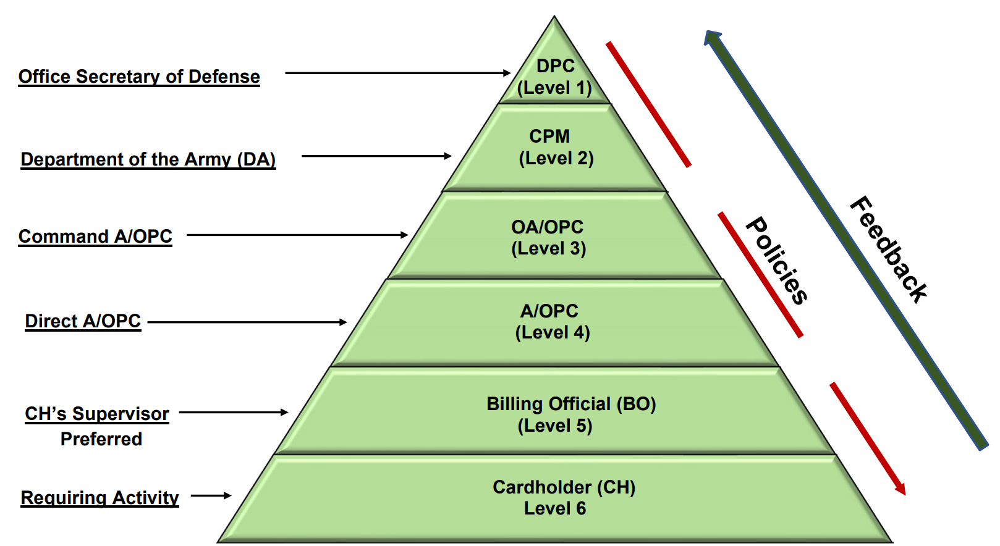
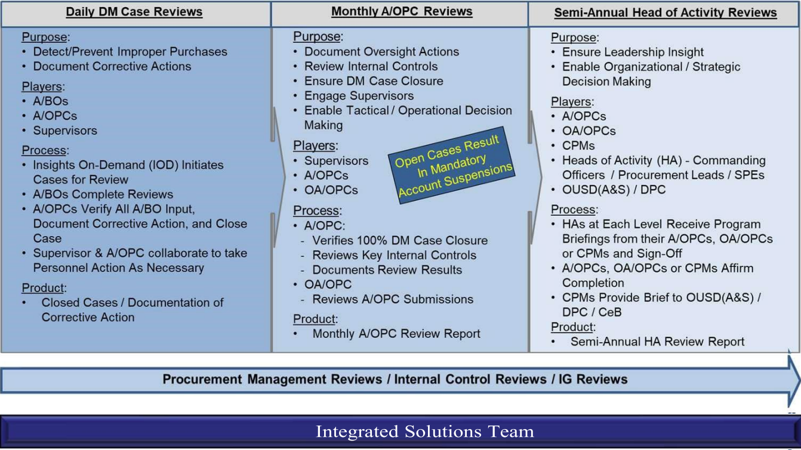
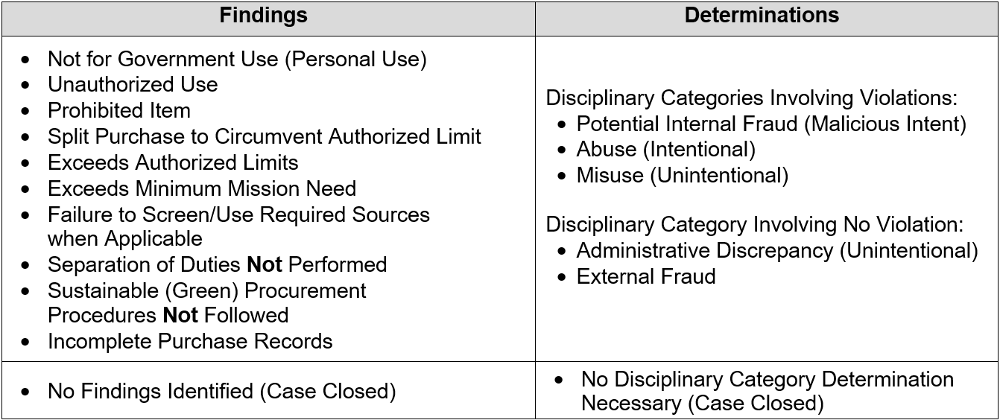
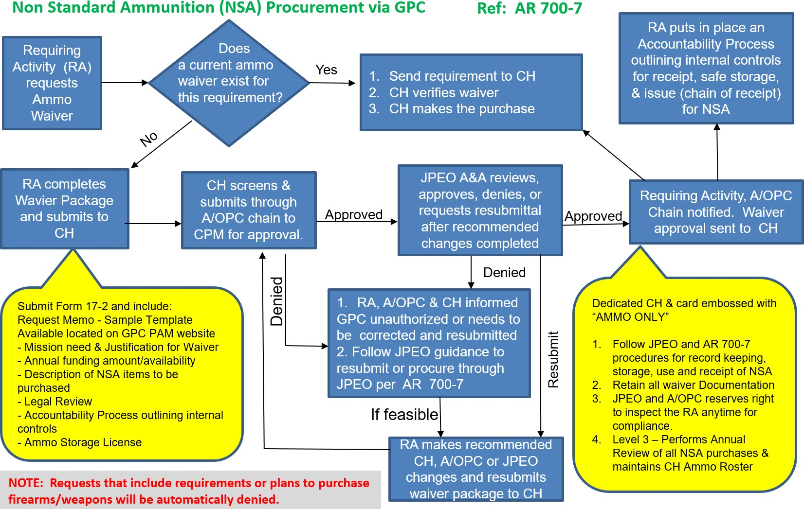

Appendix - EE DEPARTMENT OF THE ARMY GOVERNMENT PURCHASE CARD OPERATING PROCEDURES
(Revised 01 October 2024)
CHAPTER 1 - THE GOVERNMENT PURCHASE CARD PROGRAM
1-3. Information and Waiver Process
1-4. Task Order and Period of Performance
1-7. Micro-purchase Thresholds (MPT)
1-8. GPC Delegations of Authority and Appointment Letters
CHAPTER 2 - PROGRAM ORGANIZATION, ROLES, AND RESPONSIBILITIES
2-1. Responsibilities and Governmental Functions
2-2. Program Hierarchy Structure and Roles and Responsibilities
2-3. Component Program Manager (Level 2 A/OPC) Duties and Responsibilities
2-4. Primary and Alternate Level 3 A/OPC Duties and Responsibilities
2-5. Primary and Alternate Level 4 A/OPC Duties and Responsibilities
2-6. Primary and Alternate Level 5 - Billing Official Duties and Responsibilities
2-7. Level 6 - Cardholder Duties and Responsibilities
2-8. GPC Support Function Duties
2-9. Management of the GPC Program
CHAPTER 3 - GPC ELECTRONIC SYSTEMS
3-2. Procurement Integrated Enterprise Environment (PIEE)
3-3. Joint Appointment Module (JAM)
3-4. U.S. Bank Access Online (AXOL)
3-5. MasterCard Insights on Demand (IOD)
3-6. Global Exchange Service (GEX)
3-7. Total System Services Payment Solutions (TSYS)
3-8. Enterprise Resource Planning (ERP)
3-9. Federal Procurement Data System – Next Generation (FPDS-NG)
3-10. Wide Area Workflow (WAWF)
3-11. Procurement.army.mil (PAM) Portal
CHAPTER 4 - GPC TRAINING REQUIREMENTS
CHAPTER 5 - ESTABLISHING AND MAINTAINING A GPC ACCOUNT
5-1. Nomination, Selection, and Appointment of Cardholders and Billing Officials
5-5. Liability of Cardholders and Billing Officials
CHAPTER 6 - OPERATIONAL GUIDANCE AND PROCEDURES
6-3. National Defense Authorization Act Section 889 Representation
6-4. Third Party Payment Requirements
6-7. Purchase Request and Approval Sample Template
6-9. Payments of Monthly Invoices
6-10. Disputes, Defective Items and Fraudulent Transactions
6-15. Deployed to an OCONUS Area of Responsibility (AOR)
6-16. Official Representation Funds (ORF)
6-17. Cable, Utilities, and Telecommunications Services (CUTS)
6-18. Freedom of Information Act (FOIA) Requests
7-6. Commands not Utilizing GFEBS or DFAS for Refund Processing
CHAPTER 8 - EDUCATION, TRAINING AND TUITION ASSISTANCE
8-1. Training, Education and Professional Development (TE&PD) Services
8-2. Individual Slots in Existing COTS Course
8-3. Entire COTS Course (Group Training)
8-5. Subscriptions for Training Access
8-6. Training Purchase Examples
8-7. Use of the GPC for Tuition Assistance
8-8. Repayment of Training Expenses
CHAPTER 9 - REQUIRED SOURCES OF SUPPLIES AND SERVICES
9-2. UNICOR/Federal Prison Industries
9-4. Computer Hardware, Enterprise Software and Solutions (CHESS)
9-5. U.S. Navy’s Spiral 4 Contracts
9-8. Non-Mandatory Sources of Supply
CHAPTER 10 - CONVENIENCE CHECKS
10-2. Establishing a Convenience Check Account
10-3. Convenience Check Reporting (IRS Form 1099)
10-4. Annual Convenience Check Review
10-5. Convenience Check Resources
CHAPTER 11 - MANAGEMENT CONTROLS AND PROGRAM OVERSIGHT
11-2. Three-Pronged Oversight Review Process
11-4. Data Mining Case Review and Closure
11-6. Semi-Annual A/OPC Reviews
11-7. Disciplinary Requirements and Categories of GPC Violations
11-10. Cardholder Fraud and Merchant Fraud
11-11. Reporting and Monitoring for Fraud
CHAPTER 12 – EMERGENCY TYPE OPERATIONS
12-1. Emergency-Type Operations
12-2. Increased Thresholds and Acquisition Flexibilities for ETOs
12-3. Required Internal Controls for ETOs
12-4. Personnel Responsibilities for ETOs
CHAPTER 13 - MANAGEMENT REVIEWS
13-1. Level 4 A/OPC Annual Management Assessment
13-2. Level 3 Procurement Management Review
CHAPTER 14 - PROHIBITED AND RESTRICTED PURCHASES
14-2. Unauthorized Commitments and Ratification
14-6. Merchant Authorization Controls (MAC)
14-7. Detainees and Obligations under the Geneva Convention
CHAPTER 15 – CONTRACT PAYMENTS
15-3. GFEBS Purchase Order Creation
15-4. Payment Card Process Flow
15-5. Payment Plus Process Flow
15-7. Purchase Card Receiving Report (PCRR) Process
CHAPTER 16 - AMMUNITION AND WEAPONS
16-2. Authority to use the GPC for Non-Standard Ammunition (NSA) not from Army inventory
16-4. Funding Non-Standard Ammunition (NSA)
16-5. Explosives, Toxins, and Ammunition Definitions
CHAPTER 17 – METRICS AND REPORTING
17-2. Reports for Monitoring and Oversight
17-3. Standard Reports in the Servicing Bank’s EAS
17-4. Custom Reports within the Servicing Bank
CHAPTER 1 - THE GOVERNMENT PURCHASE CARD PROGRAM
1-1. Overview
a. The Army Federal Acquisition Regulation Supplement (AFARS) Appendix EE provides policy guidance and procedures for the management of the Army Government Purchase Card (GPC) program. It implements and supplements sections of the Department of Defense (DoD) Government Charge Card Guidebook for Establishing and Managing Purchase, Travel, and Fuel Card Programs (hereinafter referred to as the DoD Charge Card Guidebook). In the event of a conflict between DoD policy and Army policy, DoD policy takes precedence. In the event of a conflict between Army policy and command policy, Army policy takes precedence over any less-restrictive command policy. These operating procedures neither supersede nor take precedence over more-restrictive Army command procedures. This document applies to all purchases utilizing Army-issued GPCs.
b. Refer recommended changes and questions about the AFARS Appendix EE to the Office of the Deputy Assistant Secretary of the Army (Procurement) (ODASA(P)). Submit requests for waivers through the chain of command. Compliance with the AFARS Appendix EE is mandatory.
c. The GPC program provides Army and supported organizations a simplified, streamlined method of purchasing and paying for supplies, services, construction projects, and contract payments. The program complies with Federal, DoD, and Army statutory and regulatory guidance, as well as the terms and conditions specified in the most current General Services Administration (GSA) SmartPay® 3 Master Contract. The primary benefit of the GPC Program is that the card-issuing banks provide a commercial purchase and payment service that replaces the paper-based, time-consuming purchase order process; reduces procurement lead time; provides transaction cost savings; reduces procurement office workload; provides refunds; and facilitates payment to include reductions in interest payments.
d. The AFARS Appendix EE provides the procedures to use within the Army, including Army National Guard (ARNG) and Air National Guard (ANG), to establish and manage the Army GPC program. Army activities may supplement (i.e., adopt more stringent internal control requirements than the requirements cited herein), but not change this policy. However, as these are risk-managed programs, activities should maintain a proper balance between the control environment and ease of use to ensure that the benefits of the card continue to accrue. These procedures establish Army-wide standards designed to provide all Army activities with a foundation upon which to build specific standard operating procedures governing their programs.
e. Nonappropriated Fund (NAF) activities implement policies and procedures governing the Army’s Morale, Welfare, and Recreation programs and regulations for Nonappropriated Fund Instrumentalities (NAFI). Chaplaincy activities implement policies and procedures governing Army Chaplain Corps activities. Army NAFIs/entities must operate within the parameters of these procedures to include Public Health Command (PHC) NAFIs, Department of Defense Education Activities (DoDEA) NAFIs, and Army National Guard NAFIs. NAF activities will comply with the Department of Defense Policies and Procedures Governing Non-Appropriated Funds SmartPay® 3 Government-wide Commercial Purchase Card Use – SP3 Transition Memorandum #11. Non-appropriated funds (NAF)-funded GPCs issued under SmartPay3 must be properly segregated for oversight. All NAF GPC Cardholder (CH) accounts must be established under separate managing accounts (MAs). Commingling of appropriated and non-appropriated funded cards under a single MA is strictly prohibited.
1-2. GPC Uses
The purchase card can be used in three ways, depending on the value of the transaction and the authority of the cardholder (CH). See Federal Acquisition Regulation (FAR) 13.301. Table 1-1 summarizes the three methods and provides descriptions and examples.
Table 1-1: GPC Methods and Uses
| GPC Method | Description | Examples |
| Procurement Mechanism | To acquire and pay for goods and services by means other than the use of an existing contract. | Micro-purchases. See paragraphs a. and b. below. |
| Ordering Mechanism | To order and pay for goods and services under an existing contract only if authorized in the contract. | Orders placed against existing contracts. See paragraph c. below. |
| Payment Mechanism | To pay for goods and services when the Contractor agrees to accept contract payment(s) using the GPC card. | Contract invoice payments. Standard Form (SF) 182 training payments. See paragraphs d. and e. below. |
The GPC is the preferred method of payment for the following:
a. Micro-purchases (Card/Cardless). The GPC may be used to purchase fixed-price commercial supplies and services that do not require the CH to agree to any terms and conditions other than price and delivery. These purchases are limited to the applicable micro-purchase threshold (MPT).
b. Micro-purchases (Convenience Check). Convenience checks may be used and set up under a separate billing official (BO) account to buy commercially available, fixed-price supplies and services to fulfill mission-essential requirements. All check purchases must be within the applicable convenience check MPT. A separate account must be issued for each convenience check account.
c. Orders Against Pre-Existing Contract Vehicles. The GPC may be used to place task or delivery orders against pre-priced contract vehicles and agreements if authorized in the basic contract, basic ordering agreement, or blanket purchase agreement. (Appropriated fund CHs cannot purchase against nonappropriated fund contracts.)
d. Contract Payments. The GPC may be used to make payments against funded contracts found to be advantageous to the Government when compared to other methods of payment, and the contractor accepts payment by the GPC. The contract should include the third-party payment clause identified in FAR 32.1108, Payment by Governmentwide Commercial Purchase Card; however, GPC contract payments may be made if the contractor agrees to accept the GPC as a method of payment.
e. Payment of Training Requirements on SF 182s. The GPC may be used as the method of payment for commercial training requests using the SF 182, valued at or below $25,000, in lieu of an employee reimbursement by miscellaneous payment in accordance with the procedures to directly pay the provider in DoD Financial Management Regulation (FMR) Volume 10, Chapter 12, Section 120323, and DoD Instruction (DoDI) 1400.25, Volume 410.
1-3. Information and Waiver Process
a. Cardholders should direct GPC-related questions to their Agency/Organization Program Coordinator (A/OPC) (Level 4 A/OPC). If the A/OPC cannot resolve an issue, the A/OPC should direct the question to the Oversight Agency/Organization Program Coordinator (OA/OPC) (Level 3 A/OPC). If the OA/OPC cannot resolve the issue, the OA/OPC should consult the Component Program Manager (CPM) (Level 2 A/OPC) for guidance. GPC personnel should coordinate with their local legal counsel as necessary.
b. All waivers, exceptions, and deviations to the policies, procedures, and tools provided in AFARS Appendix EE must be submitted, in writing, through the major command acquisition chain of command to the ODASA(P) for approval. The CPM will retain copies of all approved waiver packages. In times of emergencies, a waiver approval may be obtained either through email or telephone call from the CPM with a follow up waiver request letter from the requesting command/activity. The letter must detail the reasons for the request and what adverse mission impact would occur if the waiver was not granted.
1-4. Task Order and Period of Performance
The Office of the Under Secretary of Defense (OUSD) for Acquisition and Sustainment, Defense Pricing, Contracting, and Acquisition Policy (DPCAP), United States (U.S.) Army, U.S. Department of the Air Force, and Defense agencies and activities awarded a Tailored Task Order #47QRAC18F0003 to U.S. Bank under GSA SmartPay® 3 Master Contract GS-36F-GA001. The period of performance began 30 November 2018 and runs through 29 November 2031 if all contract options are exercised. The total duration of the contract period of performance, including the base period and exercise of all three options and extension, is not to exceed 13 years and six months.
1-5. GPC Authority
a. GPC programs require procurement authority to operate and cannot be established or maintained unless procurement authority is granted in accordance with governing laws and regulations and delegated through a contracting activity identified in Defense Federal Acquisition Regulation Supplement (DFARS) Procedures, Guidance, and Information (PGI) 202.101 and the DoD Charge Card Guidebook. Contracting authority flows from authorities granted in Titles 10 and 41, United States Code (10 and 41 USC) from DoD to the Secretary of the Army to the Heads of Contracting Activities (HCAs). The HCA re- delegates contracting authority to local procurement offices. The Senior Contracting Official (SCO) or Chief of Contracting Office (CCO) may re-delegate their GPC procurement authority listed in Table 1-3 to OA/OPCs or A/OPCs for OA/OPCs and A/OPCs to appoint cardholders and convenience check account holders through the Delegation of Contracting Authority Letter produced in the Joint Appointment Module (JAM) within the Procurement Integrated Enterprise Environment (PIEE). See sections 1-8 and 5-1 for more information. Cardholders must countersign to acknowledge this responsibility.
b. The Joint Appointment Module (JAM), an application within PIEE, is the mandatory enterprise tool for appointing and delegating authority to GPC personnel.
c. Orientation and training are prerequisites to receiving GPC delegated authority via an appointment in JAM. Training requirements are listed in Chapter 4.
d. Generally, only a government employee can be a cardholder or billing official. National Guard traditional members and State employees should not be CHs or BOs. The following exceptions apply:
1) Foreign nationals may be appointed as CHs only if they are direct-hires working for the U.S. Government. However, commanders/directors should consider the potential consequences of appointing foreign nationals as CHs in countries where Status of Forces Agreements (SOFAs) or local laws do not subject the foreign national employee to the same pecuniary or general financial liability or disciplinary actions for charge card violation as U.S. citizens.
2) Junior Reserve Officer Training Corps (JROTC) instructors are members of the Armed Forces in accordance with USACC Regulation 145-2, section 4-2, and may be designated micro- purchase procurement authority as GPC cardholders. See FAR 1.603-3(b).
1-6. Applicability
a. These procedures apply to all GPC purchases with cards and convenience checks issued by the Army. Non-Army tenant organizations issued Army GPCs or convenience checks by an Army contracting office are also subject to these procedures. All BOs, CHs, A/OPCs, Resource Managers (RMs), Logisticians, and other stakeholders participating in the Army GPC program are subject to these procedures, including any non-Army tenant organizations where the Army has contracting authority and oversight responsibilities (such as ANG units).
b. The ODASA(P) has overall responsibility for the Army GPC program. Each Army command, organization, or activity utilizing Army GPCs has the responsibility for the following actions:
1) Provide adequate resources and effective internal controls to ensure the appropriate management, operation, training, and oversight is in place to operate a local GPC program effectively and efficiently in compliance with Army policies and procedures.
2) Establish and maintain a command climate to prevent Army personnel or others from exercising undue influence over the actions of an A/OPC, BO or CH.
3) Take appropriate informal and formal disciplinary actions in the event of noncompliance, fraud, misuse and/or abuse. Disciplinary actions should be based on the severity and frequency of the infraction and can range from informal actions such as written or verbal counseling, to demotion, removal, loss of security clearance, or potential criminal prosecution.
1-7. Micro-purchase Thresholds (MPT)
The definition and current dollar values are located at FAR 2.101(b) and summarized in Table 1-2.
Table 1-2: DoD Micro-purchase Thresholds
| DoD Micro-purchase Thresholds | |||
| Function | Threshold | Authority | |
| 1 | Federal-Wide Open Market | $10,000 | FAR 2.101, FAR 13.2 |
| 2 | Construction subject to 40 USC Chapter 31, subchapter IV, Davis-Bacon Wage Rate Requirements | $2,000 | FAR 2.101, FAR 13.2 |
| 3 | Services subject to 41 USC Chapter 67, Service Contract Labor Standards | $2,500 | FAR 2.101, FAR 13.2 |
| 4 | GPC Emergency-Type Operations (ETO) Inside U.S. | $20,000 | FAR 2.101, DFARS 213.270(c)(3) DFARS PGI 213.201 |
| 5 | GPC ETO Outside U.S. | $35,000 | FAR 2.101, DFARS 213.270(c)(3) DFARS PGI 213.201 |
| 6 | Federal-Wide Higher Education Open Market | $10,000 or greater | Class Deviation 2018-O0018 |
| 7 | GPC Convenience Checks (General – Unrelated to ETO and Other Emergency Uses) | $5,000 |
P.L. 115-91, National Defense Authorization Act for Fiscal Year 2018, Sec. 806(b) |
| 8 | GPC Convenience Checks for ETO and Other Emergency Uses (Inside U.S.) | $10,000 |
P.L. 115-91, National Defense Authorization Act for Fiscal Year 2018, Sec. 806(b) |
| 9 | GPC Convenience Checks for ETO and Other Emergency Uses (Outside U.S.) | $17,500 |
P.L. 115-91, National Defense Authorization Act for Fiscal Year 2018, Sec. 806(b) |
1-8. GPC Delegations of Authority and Appointment Letters
The different types of delegation of authority appointments identified in this section and Table 1-3 are available to CHs as needed. Each authority has unique policies, procedures, training, and oversight requirements. CHs must have the appropriate designation in their JAM appointment in order to use the corresponding purchasing authority. These appointments can only be granted to individuals who have completed training commensurate with their delegated authority.
Table 1-3: GPC Delegation of Authority and Limits
| # | Authority Type | Delegation Authority | Delegation Not to Exceed Limit | Scope of Authority Limits |
| 1 | Micro- Purchase CH |
FAR 1.603-3(b) FAR 13.201 DFARS 201.603- 3(b) |
$10,000 |
Grants authority to make authorized GPC purchases valued below the MPT using simplified acquisition procedures. (See FAR 2.101 “micro-purchase” definition.) CHs who only have this designation do not have the authority to place orders against any contract, including GSA federal supply schedule (FSS) orders using GSA Advantage and orders against FedMall contracts. CHs who will place orders against any contract also require the Contract Ordering Official CH designation in their appointment. |
| 2 | Micro- Purchase Convenience Check Writer |
FAR 1.603-3(b) FAR 13.201 DFARS 201.603- 3(b) |
$5,000 | Grants authority to make authorized convenience check purchases valued below the MPT using simplified acquisition procedures. (See FAR 2.101 “micro-purchase” definition.) |
| 3 | Higher Education Micro- Purchase CH |
FAR 1.603-3(b) FAR 13.201 DFARS 201.603- 3(b) Class Deviation 2018-O0018 |
$10,000 but HCA determination can result in higher value (unlimited) |
Grants authority to make authorized open market micro-purchases using the GPC up to any applicable “Higher Education” MPT. (See MPT definition at FAR 2.101 & Class Deviation 2018-O0018.) This authority is generally limited to $10,000, but FAR 2.101 MPT definition allows for higher threshold after appropriate HCA determination. Not for use to make payments against approved SF 182s. |
| # | Authority Type | Delegation Authority | Delegation Not to Exceed Limit | Scope of Authority Limits |
| 4 |
Micro- Purchase ETO Cardholder and/or Check Writer |
FAR 1.603-3(b) FAR 13.201 FAR 13.201(g) DFARS 201.603- 3(b) |
ETO CH: $20,000 Inside U.S. $35,000 Outside U.S. ETO Checkwriter: $10,000 Inside U.S. $17,500 Outside U.S. |
Grants authority to make authorized open market micro-purchases using the GPC up to the applicable “Contingency” MPT. (See MPT definition at FAR 2.101.) If intent to authorize CH to place orders against any contract, a Contract Ordering Official CH designation is also required. ETO Checkwriter limits are one half of ETO MPTs. |
| 5 |
Warranted ETO Contracting CH |
FAR 1.603-3(a) FAR 2.101 MPT FAR 2.101 SAT DFARS 201.603- 3(b) DFARS 213.301(3) |
$1,500,000 Outside the U.S. |
Grants Contracting Officers supporting Contingency Operations and Humanitarian and Peacekeeping Operations authority to make authorized GPC purchases outside the U.S. as authorized in DFARS 213.301(3) for use outside the U.S. using simplified acquisition procedures up to the applicable Simplified Acquisition Threshold (SAT). (See FAR 2.101 definition of SAT.) The GPC appointment letter may only be issued to individuals who have previously been issued an SF 1402 delegating them authority sufficient to serve as a Contingency Contracting Officer. |
| 6 |
Contract Ordering Official CH CHs who will place orders against any contract, including GSA FSS orders on GSA Advantage and FedMall contracts at any dollar level, require this designation. |
FAR 1.603-3(a) FAR 8.4 FAR 13.301(b) FAR 13.301(c)(2) AFARS 5113.202- 90(c) DPCAP JAM Role Descriptions Guide |
Simplified Acquisition Threshold $250,000 for CHs that are trained contracting professionals in the contracting office (1102s) $25,000 for CHs outside a contracting office |
Grants authority to place and pay for authorized GPC purchases against the following: 1) Orders from GSA federal supply schedule contracts. 2) Orders from FedMall contracts, Computer Hardware Enterprise Software and Solutions (CHESS) IDIQ contracts, Governmentwide acquisition, and multi- agency contracts. 3) Blanket purchase agreements. 4) Indefinite Delivery, Time-and-Material, or Labor-Hour contracts that have firm fixed prices and pre-arranged terms and conditions that were awarded by a warranted contracting officer (KO) who designated the CH, to place orders. The KO is responsible for performing oversight and reporting any concerns to the A/OPC. Contract Ordering Official training must be completed before using this authority. A/OPCs must ensure additional controls and oversight procedures are in place before granting this authority. |
| # | Authority Type | Delegation Authority | Delegation Not to Exceed Limit | Scope of Authority Limits |
| 7 |
Overseas Simplified Acquisition CH |
FAR 1.603-3(a) for > MPT FAR 1.603-3(b) for < MPT DFARS 213.301(2) |
$25,000 |
Grants authority to make authorized GPC purchases valued up to $25,000 using simplified acquisition procedures when the CH is outside the U.S. for items/services to be used outside the U.S., and that comply with the requirements of DFARS 213.301(2). |
| 8 | Contract Payment Official CH | FAR 13.301(c)(3) | As specified in the delegation of authority letter and contract. Not to exceed the KO’s warrant authority. | Grants authority to make contract payments when authorized by the contract terms and conditions. |
| 9 |
Miscellaneous Payments Official CH (SF-182 Training Payments) |
DoD Charge Card Guidebook DoD FMR Vol 10, Ch. 12, Sec 120323 DoDI 1400.25 Volume 410 |
$25,000 |
Grants authority to make payments for commercial training requests using the SF 182, valued at or below $25,000, in lieu of an employee reimbursement by miscellaneous payment in accordance with the procedures to directly pay the provider in DoD FMR Volume 10, Chapter 12, Section 120323, and DoDI 1400.25, Volume 410. |
| 10 | Inter/Intra- Govern- mental Payment Official CH |
TFM Vol. I, Part 5, Ch 7000 DPCAP memo, “Guidance on the Implementation of Adjusted Government Charge Card CH Special Designation Thresholds,” dated Oct 6, 2020 |
$10,000 |
Grants authority to make inter/intra-governmental transactions (IGT) or payments to another Government entity in lieu of using a Military Interdepartmental Purchase Request (MIPR). Includes payments to: DLA Document Services Department of Agriculture offered training FedMall GPC Requisitioning GSA Global Supply requisitioning |
a. Micro-Purchase Cardholder. This authority allows CHs to use the GPC to buy commercially available, fixed-price supplies and services to fulfill mission-essential requirements. The maximum single transaction dollar limit for stand-alone purchases is the MPT as defined at FAR 2.101.
b. Micro-Purchase Convenience Check Writer. This authority allows CHs to use a GPC convenience check to buy commercially available, fixed-price supplies and services to fulfill mission- essential requirements. Since convenience checks expose the Government to greater risk, CHs must make every effort to use a GPC card before writing a check. CHs may only use this authority when use
of the GPC is not possible. All check purchases must be within the applicable convenience check MPT. DoD FMR Volume 10, Chapter 23 establishes the financial management policy for convenience check accounts.
c. Micro-Purchase Emergency-Type Operations (ETO) CH and/or Check Writer. This authority allows CHs to buy commercially available, fixed-price supplies and services to fulfill mission-essential requirements in direct support of a declared contingency or emergency event. The ETOs currently included in 41 USC 1903 are:
1) Contingency Operations as defined in FAR 2.101;
2) Operations to facilitate the defense against or recovery from cyber, nuclear, biological, chemical, or radiological attack against the United States as addressed in FAR 18.001;
3) Operations in support of a request from the Secretary of State or the Administrator of the United States Agency for International Development to facilitate the provision of international disaster assistance as addressed in FAR 18.001; and
4) Operations to support response to an emergency or major disaster as defined in Section 102 of the Robert T. Stafford Disaster Relief and Emergency Assistance Act (42 USC 5121
,
implemented in FAR 26.2).
The group term “ETO” also includes humanitarian or peacekeeping operations (as defined in FAR 2.101). Currently, when supporting humanitarian or peacekeeping operations in accordance with FAR 2.101, the MPT does not increase, regardless of whether the humanitarian or peacekeeping operation is taking place inside or outside the United States; and the SAT can increase to $500,000 upon determination by the HCA that the respective supplies or services directly support the humanitarian or peacekeeping operation. FAR 18.2 addresses Emergency Acquisition Flexibilities (EAFs). It is critical to verify whether increased EAFs have been authorized for the particular ETO being supported. If so, each HCA has the authority to authorize use of EAFs.
d. Warranted Overseas ETO Cardholder. This authority allows CHs to use the GPC in conjunction with their separately issued SF 1402 Certificate of Appointment to purchase supplies and services as prescribed in DFARS 213.301(3). Contracting officers may use this authority to make purchases up to the applicable simplified acquisition threshold in support of declared contingency or emergency events.
e. Contract Ordering Official. This authority allows CHs with the appropriate training to issue fixed- price orders against existing contracts (e.g., GSA FSS, BPAs, FedMall contracts, CHESS contracts) to fulfill mission-essential requirements for supplies and services valued up to the Contract Ordering Official single purchase limit and to use the GPC to pay for these orders/purchases. When using this authority, CHs must 1) ensure they are authorized to place orders by the contract terms and conditions, 2) ensure the order will comply with all the contracts terms and conditions, and 3) follow all applicable ordering procedures. When ordering above the MPT, CH should obtain pricing from small business when small business can meet the requirements. The CH should obtain quotes from at least three sources. If restricting competition to fewer than three sources, the CH should document the circumstances in the purchase file. CHs with this designation will be referred to as “Ordering Officials” throughout this document. The Army Ordering Officer Guide standardizes procedures for selecting, appointing, and terminating ordering officers in accordance with AFARS 5101.602-2-92 and provides guidance for appointed individuals. This guide is to be utilized in conjunction with AFARS Appendix EE.
f. Overseas Simplified Acquisition. This authority allows CHs to make authorized GPC purchases up to a single purchase limit of $25,000 when the CH is outside the U.S. for items/services to be used outside the U.S., and that comply with the requirements of DFARS 213.301(2). When ordering above the MPT, the CH should obtain quotes from at least three sources. If restricting consideration to fewer than three, document the circumstances in the purchase file.
g. Contract Payment Official. This authority allows CHs to use the GPC to make payments against contracts that have been signed by a Contracting Officer when the GPC is named as the payment method. The GPC may provide a streamlined way of paying for contracts when a contracting officer determines the use of the GPC is in the best interest of the Government (AFARS 5113.202-90(d)).
h. Miscellaneous Payments Official (SF 182 Training Payments). This authority allows CHs to make payments for commercial training requests using the SF 182, valued at or below $25,000 in accordance with the procedures to directly pay the provider in DoD FMR Volume 10, Chapter 12, Section 120323, and DoDI 1400.25, Volume 410a. The SF 182 or equivalent must be completed prior to the training. When provided by a non-Government source, the training must consist of a regularly scheduled, commercial-off-the-shelf (COTS) course, training conference, or instructional service that is available to the public and priced the same for everyone in the same category, e.g., price per student, course, program, service, or training space.
i. Inter/Intra-Governmental Payment Official. This authority allows CHs to make payments to another Federal Government entity in lieu of using a MIPR or Inter-Governmental Payment and Collection (IPAC) in accordance with the DoD FMR. This authority includes, but is not limited to, payments to DLA Document Services, U.S. Department of Agriculture (USDA)-offered training, GSA Global Supply, Commissary, and FedMall GPC requisitioning. (Purchases from State and Local governments are considered traditional open-market micro-purchases and therefore are covered by the applicable authority listed above.) Special requirements for this authority include the following:
1) The not-to-exceed value is dictated by TFM Volume 1, Part 5, Chapter 7000, Section 7055.20.
2) Federal Government entities must limit their credit card collections so that individual transactions are no more than $10,000, which is the daily GPC credit limit for third-party purchases. The Treasury encourages use of IPAC for payments between Federal Agencies, debit cards, Automated Clearing House (ACH) debits/credits, and Fedwire transactions.
3) Card acceptance policies can be found in TFM Volume I, Part 5, Chapter 7000, which addresses limitations on credit card transactions.
4) IGTs exceeding $10,000 must be made with an alternative payment method (e.g., IPAC for payments between Federal Agencies, debit cards, ACH debits/credits, and Fedwire transactions).
CHAPTER 2 - PROGRAM ORGANIZATION, ROLES, AND RESPONSIBILITIES
The general roles and responsibilities of the participants in the purchase card program are presented in the following regulations:
a. DoD Charge Card Guidebook
b. AFARS Appendix EE and AFARS 5113.201
c. Chapter 4500 of the Treasury Financial Manual
d. Office of Management and Budget (OMB) Circular 123, Appendix B Revised, Chapters 4
e. DoD FMR Vol. 5, Ch. 33 and Vol. 10, Ch. 23
2-1. Responsibilities and Governmental Functions
All GPC Program personnel will complete GPC-specific training prior to being appointed any GPC responsibilities. GPC personnel will keep their GPC training current to continue to hold GPC positions. Program personnel must protect the information derived from use of the GPC. All appointments must be made in JAM, an application within PIEE used by GPC participants to initiate, review, approve, maintain, and terminate GPC appointment and delegation letters. Paper copies of appointments are not required if appointments are issued using JAM. Government contractor employees will not be appointed as A/OPCs, BOs, or CHs, nor perform independent receipt of goods and services and will not be granted access to the card-issuing bank’s electronic access system (EAS) or any of the business IT systems, but may be granted read-only access to the card-issuing bank’s EAS upon Level 3 A/OPC approval.
2-2. Program Hierarchy Structure and Roles and Responsibilities
The GPC Program is founded on a six-tiered hierarchal reporting chain of command system identified in Figures 2-1 and 2-2. The formal names associated with specific roles within this hierarchy are often used interchangeably with the corresponding level of authority within the hierarchy. For instance, A/OPCs may be referred to as Level 4s, and the Army GPC CPM is often referred to as the Level 2. Table 2-1 describes the GPC roles in PIEE and JAM.
Figure 2-1: Hierarchy Chart

Figure 2-2: Hierarchy Structure
| Army Level/Hierarchy GPC Program Structure | ||
| Level 1 A/OPC | DoD | DPCAP manages the DoD GPC Program |
| Level 2 A/OPC (CPM) | ASA(ALT) DASA(P) | The DASA(P) appoints the CPM (Level 2 A/OPC) to administer the Army GPC Program. |
| Level 3 OA/OPC |
Army Command (ACOM) or equivalent |
ACOM or equivalent organization must possess HCA authority. SCO appoints the Level 3 A/OPC. SCO may delegate this appointment further. The SCO’s management responsibility for the GPC program may be delegated to the CCO. Level 3 A/OPC reports to the Level 2 A/OPC as required. |
| Level 4 A/OPC | Installation or equivalent | SCO or equivalent appoints the Level 4 A/OPC. SCO may delegate this authority to the CCO or equivalent. Level 4 A/OPC reports to the Level 3 A/OPC as required. |
| Level 5 | Billing Official and Alternate |
CCO appoints the BO. This authority may be delegated to the Level 4 A/OPC. BO is also a certifying officer. BO monitors and approves CH purchases and certifies billing statements. |
| Level 6 | Cardholder |
CH is the individual issued the GPC or convenience checks. Level 4 A/OPC appoints the CH (when CCO delegates the authority to A/OPC). CH must acknowledge authority and duties by signing appointment letter in JAM. |
Table 2-1: JAM GPC Roles
| # | GPC JAM and PIEE Roles | Who Submits Request | Additional Guidance Information |
JAM Appointment Issued |
How Is the Process Initiated? |
| 1 |
GPC DoD Program Management Office (PMO) |
DPCAP (Contracting eBusiness) The PIEE Hierarchy Level 1. |
None | None | PMO representative registers for PIEE access and requests role. |
| 2 | Component Program Manager (CPM) | The PIEE Hierarchy Level 2. | None |
CPM appointment letter |
CPM registers for PIEE access and requests role. |
| 3 | GPC Delegating/ Appointing Authority (DAA) | Individual(s) (other than the A/OPC or OA/OPC with delegating authority) who have retained or been delegated authority to electronically sign GPC Delegation of Procurement Authority and GPC Appointment Letters (e.g., the Director of Contracts or SCO). |
Servicing Agency A/OPCs should direct any individual at a “Requesting Agency” who has been delegated authority to sign delegation and appointment letters to request this role during PIEE registration. These individuals must have been issued an SF 1402 authorizing them to |
None |
DAA may register for PIEE access and request role or complete actions using only tokenized emails. |
| # |
GPC JAM and PIEE Roles |
Who Submits Request | Additional Guidance Information |
JAM Appointment Issued |
How Is the Process Initiated? |
| further delegate procurement authority. | |||||
| 4 |
OA/OPC With Delegating Authority |
Primary and Alternate A/OPCs with responsibility for managing / overseeing other A/OPCs. |
None |
OA/OPC Appointment Letter |
OA/OPC registers for PIEE access and requests role. |
| 5 |
OA/OPC Without Delegating Authority |
Primary and Alternate A/OPCs with responsibility for managing / overseeing other A/OPCs. |
None |
OA/OPC Appointment Letter |
OA/OPC registers for PIEE access and requests role. |
| 6 |
A/OPC With Delegating Authority |
Primary and alternate A/OPCs responsible for day-to-day management and oversight of CH and managing accounts. | None |
A/OPC Appointment Letter |
A/OPC registers for PIEE access and requests role. |
| 7 |
A/OPC Without Delegating Authority |
Primary and alternate A/OPCs responsible for day-to-day management and oversight of CH and managing accounts. | None |
A/OPC Appointment Letter |
A/OPC registers for PIEE access and requests role. |
| 8 | Approving/Billing Official (A/BO) | Program officials responsible for reviewing and approving GPC managing account (MA) billing statements (GPC bank invoices) and transaction supporting data for compliance with applicable acquisition policies. | None |
A/BO Appointment Letter |
OA/OPC or A/OPC nominates A/BO using JAM. A/BO responds to JAM- generated email direction to register for PIEE access. When A/BO uses the identical email entered during nomination, the role request and required DoDAACs are pre- populated. |
| 9 | Certifying Officer | Program officials responsible for reviewing GPC MA billing statements in accordance with DoD FMR requirements and certifying statements (GPC bank invoices) for payment. |
Certifying Officer responsibilities are addressed in DoD FMR Volume 10, Chapter 23 (230406) and DAU CLG 006. Certifying Officer appointments are made in accordance with |
DD Form 577 Certifying Officer Appointment |
OA/OPC, A/OPC or DD 577 Appointing Authority (AA) nominates Certifying Officer using JAM. Certifying Officer responds to JAM- generated email direction to register for PIEE access. When Certifying Officer uses the identical email |
| # | GPC JAM and PIEE Roles | Who Submits Request | Additional Guidance Information |
JAM Appointment Issued |
How Is the Process Initiated? |
|
DoD FMR Vol. 5, Chapter 5. |
entered during nomination, the role request and required DoDAACs are pre- populated. |
||||
| 10 | Cardholder (CH) | Individuals who have been issued GPC CH accounts. |
Includes carded, cardless, and convenience check accounts. 10 types of “Special Use” CH delegations are available. 2 of the 10 CH delegations are equivalent to issuance of a SF 1402 Certificate of Appointment. |
GPC CH Appointment Letter |
OA/OPC or A/OPC nominates CH using JAM. CH responds to JAM-generated email direction to register for PIEE access. When CH uses the identical email entered during nomination, the role request and required DoDAACs are pre-populated. |
| 11 |
Component Resource Manager (CRM) |
The Comptroller/FM for the Component. | None | None | CRM registers for PIEE access and re- quests role. (Note 5) |
| 12 | Oversight RM | Individuals responsible for approving RM access to PIEE; they can also perform all RM functions. | None | None | Oversight RM registers for PIEE access and requests role. |
| 13 | Resource Manager (RM) | Provides appropriate GPC account funding, enters associated lines of accounting (LOAs) into applicable systems, and works with the A/OPC to establish spending limits tied directly to funding allocated for each managing and CH account. | None | None |
RM registers for PIEE access and requests role. |
| 14 | Supervisor | Supervisors of individuals with PIEE roles. |
Supervisor information is available to JAM from the data the individual enters during their PIEE registration. Future PIEE releases are planned to connect to DEERS for |
None |
Not Required PIEE users identify their supervisor in their PIEE account profile. |
| # |
GPC JAM and PIEE Roles |
Who Submits Request | Additional Guidance Information |
JAM Appointment Issued |
How Is the Process Initiated? |
| supervisory information. | |||||
| 15 | DD577 View Only |
Individuals in paying offices (e.g., DFAS) who need to view DD Form 577 appointments. Other individuals who require access to view DD Form 577s. May be granted to contractor personnel. |
None | None | Registers for PIEE access and requests “DD 577 View Only User” role. |
| 16 | DD577 Appointing Authority |
Individuals authorized by Component-level Financial Management procedures to sign DD Form 577 Certifying Officer appointments in accordance with FMR Vol 5, Ch 5. |
None | None | Registers for PIEE access and requests “DD 577 Appointing Authority” role. |
| 17 | GPC Help Administrator (HAM) | Individuals providing help desk support to GPC program officials. | May be granted to contractor personnel. | None | Registers for PIEE access and requests “GPC Help Administrator” role. |
| 18 | GPC Auditor | Individuals granted access to PIEE GPC functionality for purposes of reviewing the GPC program |
GPC Auditor is required to load a scanned copy of audit letter during PIEE registration process. Each request must specify the purpose, scope of the review, define the access required, and state the desired access period (start and end dates). Access requests must be approved by the CPM. |
None | Self-Initiate. |
2-3. Component Program Manager (Level 2 A/OPC) Duties and Responsibilities
a. Administer the Army GPC Program.
b. Establish policies and guidelines.
c. Design and maintain hierarchies and approve subordinate Level 3 A/OPCs.
d. Interface with the DPCAP GPC program office on performance issues.
e. Ensure effective Army GPC surveillance (e.g., Procurement Management Reviews (PMRs)).
f. Liaison with Army organizations, the servicing bank, DPCAP, GSA, and other federal agencies.
g. Manage and implement technical and system enhancements.
h. Develop, test, and deploy GPC hardware/software/networking systems enhancements.
i. Review and submit monthly, semi-annual, and annual reports as required.
j. Implement trends, best practices, increase rebates, and lower costs to improve the program.
k. Participate in meetings, events, training events, and panel discussions representing the Army.
l. Communicate DoD and Army GPC policy/procedure updates and surveillance/audit findings.
m. Address systemic program deficiencies and discrepancies.
2-4. Primary and Alternate Level 3 A/OPC Duties and Responsibilities
a. Implement, administer, and monitor the ACOM GPC program subject to DoD and Army policies.
b. Serve as a liaison with all GPC Program stakeholders (e.g., HQDA, DPCAP, GSA, AAA, Bank).
c. Review and submit monthly and semi-annual IOD reports.
d. Inform Level 2 A/OPC of GPC program trends and issues as they arise.
e. Provide program support to ACOM and installation Level 4 A/OPCs.
f. Establish and implement ACOM-specific policy and guidelines.
g. Develop/implement program internal control requirements and surveillance plan.
h. Participate in GPC program meetings and events.
i. Suspend accounts and administer corrective actions for non-compliance.
j. Ensure all Level 4 A/OPCs meet education, training, and certification requirements.
k. Track training for Level 4 A/OPCs in PIEE/JAM.
l. Ensure all Level 4 A/OPCs hold appointment letters in PIEE/JAM.
m. Lead implementation of GPC systems at the Command level.
n. Coordinate GPC program changes with CPM (e.g., hierarchy changes, Level 3 appointments).
o. Respond to data calls in a timely manner and with concise, current data.
p. Oversee Level 4 A/OPC program controls, including managing account reviews and IOD reviews.
q. Manage agent numbers and periodically assess the ongoing need for agent numbers.
r. Manage enterprise data mining processes per DPCAP policy and procedures.
s. Maintain managing accounts to meet mission needs.
t. Communicate policy updates, procedure changes, and other information to Level 4 A/OPCs.
u. Process and retain waivers, exceptions and deviations.
v. Review and submit weekly, monthly, quarterly and annual reports as required.
w. Seek out trends and best practices to improve the Program.
x. Implement innovative means to increase rebates, lower administrative costs and merchant prices.
y. Proactively address and resolve emails at the lowest level.
z. Resolve deficiencies and discrepancies impacting program effectiveness and efficiencies.
aa. Perform PMRs every three years.
2-5. Primary and Alternate Level 4 A/OPC Duties and Responsibilities
a. Manage the day-to-day operation of the GPC program at an installation/organization.
b. Assist CHs and BOs in fulfilling their responsibilities.
c. Serve as the liaison between the Level 3 A/OPC and the installation/organization GPC personnel.
d. Liaison between the financial/contracting communities as it applies to the GPC payment process.
e. Serve as the installation/organization point of contact for bank-related matters.
f. Provide business advice to supporting organizations, CHs, BOs, and small business specialists.
g. Participate in meetings. Communicate Army policy updates and internal review findings.
h. Assist the Level 3 to increase rebates and lower administrative and merchant costs.
i. Ensure the proper disposition of rebate checks.
j. Ensure GPC Program personnel are properly trained and appointed.
k. Maintain currency in training to perform their respective duties.
l. Establish and maintain a manual or electronic file for each BO and CH per retention rules.
m. Establish, maintain, and terminate CH and BO accounts within the servicing bank’s EAS.
n. Ensure that all managing accounts have a primary and alternate BO.
o. Evaluate the effectiveness of each BO’s ability to review, approve and reconcile transactions.
p. Ensure timely reconciliation of all CH and BO accounts at the end of the billing cycle.
q. Coordinate with RMs to ensure timely certification and payment.
r. Confirm completion of required initial and refresher training for all CHs and BOs.
s. Maintain training records within PIEE and JAM.
t. Coordinate with the Accountable Property Officer (APO).
u. Provide training to CHs on property accountability procedures.
v. Nominate and appoint CHs and BOs within PIEE and JAM.
w. Maintain and terminate appointment letters in JAM.
x. Maintain program oversight through IOD, annual management assessment, and bank reports.
y. Complete all assigned IOD cases, monthly reviews, and semi-annual reviews per policy timelines.
z. Address program deficiencies and discrepancies identified in IOD.
aa. Annually assess each CH’s continuing need to maintain an account.
bb. Close unused accounts as appropriate.
cc. Request justification in writing from BOs when accounts with little activity must remain open.
dd. Perform Level 4 Annual Assessment using the Annual Assessment Checklist.
ee. Develop and implement local GPC procedures.
ff. Inform CHs of prohibited items and services.
gg. Monitor bank transaction reports to identify potential improper use of the GPC.
hh. Take corrective action to address any suspected legal or policy violations.
ii. In the event of unauthorized card activity or fraud, set the single purchase limit to $1.
jj. Monitor bank transaction declination reports to identify potential fraud activity.
kk. Review transactions of newly appointed CHs within four months of appointment.
ll. Reduce managing accounts as appropriate to meet mission needs.
mm. Process requests for user identifications in the servicing bank’s EAS.
nn. Screen any accounts which have not been used within six months and take appropriate action.
oo. Utilize the Semi-Annual Report to brief management.
pp. Process and retain waivers, exceptions, and deviations.
qq. Ensure lost/stolen cards are immediately reported.
rr. Temporarily suspend any account over 30 calendar days past due.
ss. Suspend entire Level 4 organization accounts for any account over 120 days past due.
tt. Review and submit reports as required.
uu. Analyze trends to improve the Program.
vv. Assist BOs and CHs with reports as necessary.
ww. Activate, deactivate/terminate, and maintain (adjust limits, etc.) CH and BO accounts.
xx. Identify, monitor, and resolve any terminated accounts with outstanding credits.
yy. Ensure appropriate separation of duties and span of control ratios are maintained.
zz. Proactively address automated email notifications (e.g., IOD cases or delinquencies). aaa. Address deficiencies and discrepancies impacting program effectiveness or efficiencies.
2-6. Primary and Alternate Level 5 - Billing Official Duties and Responsibilities
a. Review and reconcile CH statements against receipts and documentation.
b. If a CH is absent, approve CH’s statement within the required timeframe.
c. Certify billing statements electronically within 5 business days of the end of the billing cycle.
d. Forward official invoice to DFAS for manually paid accounts within 15 days of receipt.
e. Verify payments to be legal, proper, necessary, and correct per Government rules and regulations.
f. Complete all assigned IOD data mining cases in a timely manner.
g. Ensure CHs upload all transaction documentation in the servicing bank’s EAS.
h. Report questionable transactions to the Level 4 A/OPC and/or appropriate authorities for review.
i. Resolve any questionable purchases with the CH and A/OPC.
j. Recommend in writing GPC credit limits to the RM and Level 4 A/OPC, for CHs under BO account.
k. Coordinate with the bank to resolve payment issues.
l. Identify and communicate billing discrepancies to the bank’s transaction dispute point of contact.
m. Send a report to the A/OPC detailing the circumstances of any lost, stolen or compromised cards.
n. Ensure designation of the proper line of accounting.
o. Ensure an Alternate BO is appointed.
p. Notify the Level 4 A/OPC promptly to close any CH accounts no longer needed.
q. Notify the Level 4 A/OPC to terminate or reassign the BO account prior to departure/reassignment.
r. Serve as the point of contact for GPC compliance inspections/audits/reviews.
s. Support A/OPC surveillance reviews.
t. Complete any corrective actions identified after each audit or A/OPC review.
u. Establish/recommend CH and BO credit limits to the A/OPC based on historical use.
v. Ensure spending limits are held to the minimum amount necessary to meet mission requirements.
w. Ensure spending limits are not exceeded.
x. Verify appropriate and sufficient funds are available prior to CH purchases.
y. Ensure all transactions are for valid, official Government requirements.
z. Provide written approval or disapproval of purchase requests to the CH.
aa. Ensure sources are rotated when possible.
bb. Ensure CHs are not splitting requirements to avoid exceeding the MPT.
cc. Review and ensure supporting documentation is loaded in the bank’s EAS prior to certification.
dd. Register for electronic data notifications within the bank’s EAS for automated email alerts.
ee. Ensure convenience check data is maintained.
ff. Ensure Internal Revenue Service (IRS) Form 1099 has been completed and reported for convenience checks.
gg. Ensure sales taxes are not paid (as appropriate).
hh. Immediately notify A/OPC upon discovery of suspected unauthorized purchases.
ii. Notify the A/OPC when CH or BO personnel changes occur.
jj. Immediately notify of lost or stolen cards.
2-7. Level 6 - Cardholder Duties and Responsibilities
a. CH authority is limited to the threshold indicated on their delegation of authority in JAM.
b. Use GPC to make authorized purchases within the limits of their delegation of authority in JAM.
c. Screen all purchase requests upon receipt.
d. Verify that the requested items meet a legitimate government need.
e. Notify the BO of unusual or questionable purchase requests.
f. Check requirements for their availability from the mandatory Government sources.
g. Make purchases in accordance with FAR Part 8 required sources of supplies and services.
h. Rotate merchants when practicable.
i. Allocate transactions to the proper line of accounting.
j. Obtain BO approval prior to purchase. Obtain all required pre-purchase approvals.
k. Track receipt/acceptance of purchased goods or services.
l. Track partial shipments to ensure they are received within the dispute window.
m. Track any transactions for items not yet received.
n. Collect, maintain and upload the required purchase documentation in the servicing bank’s EAS.
o. Match orders and review and reconcile monthly statement.
p. Register to receive the bank’s Electronic Data Notifications (automated email alerts).
q. Resolve unauthorized, erroneous, or questionable transactions with merchants.
r. Dispute questionable transactions.
s. Dispute items not received in one billing cycle when reconciling the next billing cycle.
t. Dispute unresolved billing errors (e.g., supplies not received by the next billing statement).
u. Dispute transactions when receipt and acceptance of goods or services cannot be verified.
v. Dispute items the merchant fails to replace, modify, or repair by the allotted time.
w. Resolve any invalid transactions with the merchant.
x. Track all disputes to completion.
y. Confirm with the merchant the items ordered are in transit and track the transactions to completion.
z. Maintain physical security of the GPC and convenience checks to avoid unauthorized use.
aa. Do not release the account number to entities other than a merchant processing a transaction.
bb. Do not authorize merchants to store the card number.
cc. Notify the bank of a lost, stolen, or compromised GPC within one business day.
dd. Maintain the bank’s EAS purchase log, which is located under Transaction Management.
ee. Reconcile all transactions and upload all supporting documentation in the bank’s EAS.
ff. Approve the account statement within 3 business days of the cycle end date.
gg. Maintain a manual purchase log if the electronic purchase log in the bank’s EAS is not accessible.
hh. Ensure the Accountable Property Officer (APO) has screened the purchase request.
ii. Upload all receipts for the APO to review electronically in the servicing bank’s EAS.
jj. After items arrive, provide receipts to the supporting APO within five business days.
kk. Notify the BO when you are not available to approve the CH statement.
ll. Provide all records and purchase file documentation to the BO upon departure or reassignment.
mm. Maintain a separation of duties of making purchases and receiving the goods/services.
nn. Forward requirements exceeding the MPT to the contracting office for purchase.
oo. Verify and document receipt/acceptance of goods or services.
pp. Checkwriters - Maintain convenience check data.
qq. Checkwriters - Report IRS Form 1099 data to DFAS.
2-8. GPC Support Function Duties
a. Resource Manager GPC Support Function Duties.
1) Fund GPC purchases and provide a system of positive funds control.
2) Assist the Level 4 A/OPC in establishing and maintaining BO and CH accounts.
3) Assign default and alternate lines of accounting as appropriate.
4) Ensure obligations are posted prior to invoicing for non-Electronic Data Interchange (EDI) accounts.
5) Assist with resolving accounts that are in a delinquent status and provide payment information when requested.
6) Assist the Level 4 A/OPC with the surveillance of assigned accounts.
7) Monitor General Fund Enterprise Business System (GFEBS) and Defense Enterprise Accounting Management System (DEAMS) daily to identify account payment issues, prevent and resolve GPC payment delinquencies, correct Intermediate Document (IDOC) errors, and provide payment information upon request.
8) Provide guidance and training to installation RMs, BOs, and CHs on GFEBS/DEAMS processes.
9) Provide appropriate funding for the accounts and enter associated lines of accounting into applicable systems.
10) Establish spending limits that are tied directly to funding allocated for each billing and CH account.
b. Organizational PIEE Government Administrator Manager (GAM) GPC Function Duties.
1) Administer Location Codes.
2) Look up group names and GAM information.
3) View and edit user profile information.
4) Activate (add) and deactivate users.
5) Reset user passwords.
6) Reset certificates.
c. Defense Finance and Accounting Service (DFAS) Support Function Duties.
1) Provide tax reporting guidance to checkwriters. See Chapter 10-3.
2) Confirm the DD Form 577 for certifying officials.
3) Process EDI transaction sets 821, Obligation Files; and 810, invoice files, and notify the responsible installation or activity when the corresponding files are not received.
4) Notify the installation/activity, within one day, of rejects and interest penalties assessed to individual accounts.
5) Process requests for manual payments, e.g., bank system rejects and non-EDI accounts.
6) Assist in resolving GPC payment issues.
d. Senior Contracting Official (SCO), or equivalent Duties.
1) The SCO or equivalent is responsible for the operation and execution of their GPC Program in compliance with this document and the policies and procedures issued from the ODASA(P).
2) Develop internal management controls to operate, manage, provide oversight, and maintain the integrity of the local GPC Program.
3) Ensure adequate checks and balances are in place to manage local GPC programs.
4) Ensure CHs are not subjected to undue influence in performing their duties and responsibilities.
5) Ensure separation of duties. Individuals designated as A/OPCs will not be simultaneously designated as BOs or CHs. Individuals designated as BOs will not be a CH on the same managing account.
6) Manage span of control appropriately. Primary and alternate A/OPCs will not be responsible for more than 250 GPC accounts. An additional A/OPC must be appointed whenever the combined number of CH and managing accounts exceed the 250:1 ratio. The number of CH accounts assigned to a primary BO will not be more than seven (7:1). Additional BOs must be assigned by the organization whenever the number of CH accounts exceed the 7:1 ratio.
7) Ensure that A/OPCs have the necessary resources to accomplish program oversight.
8) Delegate appointing authority when needed. The HCA may retain the authority to appoint A/OPCs or delegate this authority to the SCO or equivalent. The SCO may further delegate this authority in writing as necessary and ensure all appointments are executed through JAM.
e. Accountable Property Officer (APO) GPC Support Function Duties.
1) Assist the A/OPC in reviewing card accounts to ensure that property accountability procedures are being followed.
2) Ensure property control and accountability procedures are developed and disseminated to all personnel who are entrusted with the acquisition of Army property and equipment.
3) Comply with accountability procedures in Army Regulation (AR) 710-4 and AR 735-5.
4) Record in property systems any sensitive and pilferable property purchased.
5) Determine the accounting requirements for the GPC purchased property, such as nonexpendable or controlled (requires property to be accounted for on property book records), durable (requires control when issued to the user) and expendable (no requirement to account for on property book records).
6) Pre-approve all Army purchase request forms (or similar local forms) for applicable items.
7) Require CH to provide copy of receipt/invoice along with proof of independent receipt/acceptance within 5 days of receipt of accountable item.
8) Determine if an exception applies for the purchase of training, services, or consumable supplies (e.g., office supplies, batteries).
f. Audit Agencies.
1) Auditors are authorized data access to retrieve GPC data within the GPC EAS systems. Specific roles are established in all GPC EAS systems when granted access for a limited amount of time.
2) GPC Auditor should load a scanned copy of the audit letter during the PIEE registration process. Each request must specify the purpose, scope of the review, define the access required, and state the desired access period (start and end dates). Access requests must be approved by the CPM.
3) Assist Army leaders in assessing and mitigating GPC risk by providing solutions through independent internal auditing services.
4) Ensure the ODASA(P) has an opportunity to participate in a proactive audit planning process, which is responsive to GPC management and acquisition needs.
2-9. Management of the GPC Program
a. The ODASA(P) has overall responsibility for the management of the Army GPC program. The ODASA(P) appoints a CPM, also known as the Level 2 A/OPC, to manage the Army GPC program. The SCO, or in activities that do not have a SCO, the CCO or equivalent, designates, at a minimum, one Level 3 OA/OPC and an alternate Level 3 OA/OPC who, once appointed in JAM, is dedicated to the management of the GPC Program within their agency/organization. The SCO or CCO may further delegate in writing the authority to appoint the Level 3 and 4 A/OPCs in accordance with Army policy. Level 3 A/OPCs with authority to delegate procurement authority must have the corresponding appointment letter in JAM to appoint Level 4 A/OPCs. Level 4 A/OPCs may appoint CHs and billing officials in JAM if they are given the authority to delegate procurement authority and have the corresponding appointment letter in JAM. Certifying officers must be appointed by the organization’s designated DD 577 appointing authority in JAM.
b. The Level 3 OA/OPC duties and responsibilities at Army major command headquarters typically warrant a grade (or equivalent thereof) of GS-14, preferably in the contracting career field. Exceptions may apply. The Level 3 A/OPC duties and responsibilities for non-headquarter commands typically warrant a grade of GS-12 to GS-14, preferably in the contracting career field, but exceptions may apply if approved by the SCO or CCO.
c. The Level 4 A/OPC duties and responsibilities typically warrant a grade (or equivalent thereof) of GS-11 to GS-12 in any career field (e.g., 1101, 1105, or 343) if they meet the knowledge, skills, and abilities listed below. Exceptions may apply. The grade should reflect the corresponding complexity of their duties and responsibilities. The A/OPC will be designated by the appropriate contracting official to be responsible for the management, administration, and day-to-day operation of the GPC program at the activity. Written delegations are required in JAM, and each A/OPC will be granted the appropriate system access (e.g., JAM, bank EAS) associated with their role.
d. Level 3 and 4 A/OPCs must complete the training requirements detailed in Chapter 4. Only individuals who possess the following knowledge, skills, and abilities may be appointed as Level 3 and 4 A/OPCs for the GPC Program:
1) Understanding of the relevant GPC policies, procedures, and commercial contracting practices.
2) Understanding of the relevant procurement laws and regulations.
3) Understanding of what constitutes an authorized purchase transaction.
4) Understanding of procurement methods and standards.
5) Ability to communicate, organize, and manage tasks effectively.
6) Basic analytical and computer skills.
7) Ability to summarize data, prepare reports and write effectively using proper grammar, punctuation, and tone.
8) Ability to analyze, research, and provide concise recommendations to the chain of command on required actions to anticipate, prevent, or correct problems in business processes that are supported by the GPC.
e. The Government Charge Card Abuse and Prevention Act of 2012 requires all Executive Branch agencies to establish and maintain safeguards and internal controls to prevent waste, fraud, and abuse of purchase cards. Internal controls are tools to help program and financial managers achieve results and safeguard the integrity of their programs. Effective internal controls provide reasonable assurance that significant risks or weaknesses adversely impacting the agency's ability to meet its objectives are prevented, minimized, or are detected in a timely manner. The Level 3 and Level 4 A/OPC will notify the BO or CH of any action taken due to a BO’s or CH’s non-compliance with Army policies and procedures.
f. Level 3 and Level 4 A/OPCs have the authority to apply internal controls such as suspending or cancelling BO or CH accounts; lowering credit limits; adding or deleting Merchant Category Codes (MCC); and initiating additional controls as necessary to comply with GPC policies and procedures.
g. Results of legal reviews are not sufficient justification for CHs to proceed with a particular purchase. If a CH or BO is unsure if they can proceed with a questionable purchase, they should contact the Level 4 A/OPC for guidance and confirm authority prior to making the purchase.
h. Army agencies and organizations must provide adequate resources dedicated to the GPC program within their agency/organization to ensure successful management of the program. Adequate GPC resources refer to an agency’s efficient and effective deployment of assets (e.g., span of control, personnel, training, funding, facilities, and deployment of knowledge and skills) as needed to comply with the policies, procedures, laws, and regulations governing the GPC Program. Adequate resources must be deployed to reasonably ensure that programs achieve their intended results; resources are used consistently with agency mission; programs and resources are protected from fraud, waste, and mismanagement; laws and regulations are followed; and reliable and timely information is obtained, maintained, and reported for decision-making.
i. The local contracting office must coordinate with the local personnel office to ensure procedures are established requiring all individuals to coordinate with the Level 4 A/OPC when they out-process from the Army command or activity.
2-10. Separation of Duties
a. Separation of duties is an internal control activity intended to provide checks and balances to the GPC process and to prevent or minimize innocent errors or intentional fraud occurring without detection. This internal control ensures that no single individual has control over multiple phases of a purchase card transaction. To protect the integrity of the procurement process, no one person is responsible for an entire purchase card transaction. OMB standards for internal controls require that key duties and responsibilities be divided or segregated among individuals to ensure they do not exceed or abuse their assigned authority. See OMB Circular A-123, Appendix B Revised, paragraph 4.3. To the greatest extent possible, GPC duties will be assigned to different individuals within the GPC hierarchical structure. As stated in the DoD FMR, “separation of duties precludes errors or attempts at fraud or embezzlement from going undetected. Internal controls generally require a four-way separation of the contracting, receiving/[accepting], voucher certification, and disbursing functions.”
b. Key GPC duties include making purchases and/or payments (CHs); verifying purchases and/or payments are proper (BOs, Certifying Officers, and FSOs); certifying invoices for payment (BOs, Certifying Officers, and FSOs); certifying availability of funds (Financial RMs); receiving and accepting supplies and services, including independent receipt and acceptance (acceptors); disbursing funds (Disbursing Office); and conducting policy, review, and audit functions (A/OPCs and Property Book Officers). For example:
1) BOs will not be CHs under their own MAs.
2) RMs will not be CHs or BOs with responsibility for executing their own funds.
3) Accountable Property Officers or their equivalents will not be CHs with authority to purchase accountable items (this does not apply to Property Book Hand Receipt Holders).
4) Purchases of accountable (e.g., pilferable) property, and self-generated purchases, will have acceptance performed by someone other than the CH, BO, and Certifying Officer.
5) CAC-enabled systems will generate a conflict-of-interest report to depict instances where assigned roles do not conform to DoD policy.
6) Authorization roles will be assigned to a user’s profile, with each profile allowing only that individual the ability to perform specific tasks in the system.
b. If resource constraints prevent assignment of the key duties to different individuals, as set forth in paragraph a. above, the activity must request a waiver through the Level 4 A/OPC and the CCO to the Level 3 A/OPC for approval.
c. Notwithstanding the above-described waiver process, certain key duties must not be assigned to the same individual. In no case will the same individual be both the CH and BO for a GPC account. In no case will the Accountable Property Officer or A/OPC (primary or alternate) also be a CH, BO or contracting officer making contract payments with a GPC or executing GPC purchases. A CH who is a hand receipt holder should not purchase property for their own use. The servicing bank provides the functionality to generate a report identifying potential conflicts of interest in GPC program duties.
2-11. Span of Control
a. Span of control refers to the extent of oversight and review responsibilities placed on a single A/OPC, BO, or CH. An appropriate span of control must efficiently and effectively allow the A/OPC, BO, or CH to provide reasonable assurance they can effectively perform their responsibilities regardless of the number of accounts assigned. The assigned span of control must factor in the monitoring and oversight responsibilities to include the use of MasterCard’s Insights on Demand (IOD) data mining and review process. To ensure GPC program participants have sufficient time to complete required reviews, GPC programs will abide by established span-of-control limits. The following span-of-control internal controls have been established for the Army GPC Program:
1) The number of CH accounts (not individual cardholders) assigned to a primary BO will not exceed seven.
2) An individual may not be assigned more than three CH accounts.
3) An A/OPC will not be responsible for more than 250 GPC accounts (card accounts and MAs combined). This ratio will be reevaluated biennially.
4) Primary A/OPC vacancies must be filled in a timely manner to prevent excessively burdening Alternate A/OPCs over an extended time.
5) The CPM has authority to approve deviation from the ratios in 1) through 3) above on a case-by-case basis provided the organization establishes sufficient local oversight and compensating controls. Deviation approval is a CPM responsibility and cannot be delegated.
6) For the ratios in 1) through 3) above, compensating controls include, at a minimum, briefing the HA on the deviation(s) and any related ramifications, during all subsequent Semi-annual Head of Activity Review (SAHAR) briefing(s) in which the deviation(s) remain in place.
7) For the ratio in item 2) above, as the SAHAR does not report on the number of CH accounts assigned to an individual, other compensating controls would need to be in place for any deviation(s) the CPM approves. Any deviations must be reported to the HA through the SAHAR process and annotated in the Notes section of the SAHAR report.
8) When Army policy authorizes use of the GPC for more complex transactions (e.g., by Ordering Officials), the Army should institute more stringent span-of-control ratios as appropriate.
b. A/OPCs should use PIEE/JAM or the card-issuing bank’s EAS to provide appropriate management notification and reports on various spans of control. All Common Access Card (CAC)-enabled systems supporting or using GPC data should utilize functions to define and manage all hierarchies assigned within the system—not just the GPC organizational hierarchy.
c. An individual may not be assigned more than one CH account for each special designation in their appointment. Assignment of roles includes effective from/to dates. This includes personnel assignment to an A/OPC, BO, or CH, as well as the relationships of the BO to the A/OPC and the CH to the BO. Management oversight reports should be defined to report personnel, position, and relationship assignments.
d. The card-issuing bank’s EAS report on span of control based on user ID cannot be used as an irrefutable source to support span-of-control limits, since an individual may have more than one bank user ID. A/OPCs must track all roles an individual has been provisioned/assigned using their unique CAC public-key infrastructure or other unique identifier that may be implemented by the Under Secretary of Defense for Personnel and Readiness.
e. The Army standard for span of control for a Level 4 A/OPC is 250 BO and CH accounts per Level 4 A/OPC. This total includes both the BO and CH accounts added together. Span of control updates are deemed necessary due to changing program dynamics and increased oversight burdens placed on GPC oversight personnel over time. As the micro-purchase threshold has increased multiple times over the years, additional oversight has been required by GPC personnel as the average dollar value and the types and complexity of the GPC supplies and services being purchased has increased.
f. The total number of transactions, as well as the number of assigned card accounts, must be considered when determining an acceptable card account to BO ratio. When the number of accounts or workload complexity/administration assigned to a Level 4 A/OPC exceeds the Army standard, the SCO/CCO must ensure adequate resources are made available to allow the A/OPC to successfully perform their duties. When the span of control exceeds the Army standard and the CCO elects not to provide additional resources, the CCO must submit a waiver request in writing to the CPM for approval. The waiver request must include the rationale and justification upon which the CCO has based the determination that the existing span of control is adequate to ensure program administration and that surveillance can be performed at a satisfactory level given the existing or new compensatory controls put in place. The Level 3 A/OPC must retain a copy of this documentation.
g. The Level 4 A/OPC determines whether the BO to CH ratio is acceptable upon issuance of a GPC, during the A/OPC’s annual assessment of their GPC program, or as needed. There must be a reasonable expectation that the BO can complete a thorough review of all transactions and certify the invoice within five business days of its receipt. When the ratio for CH accounts to BO exceeds the Army standard, the BO should lower the number of card accounts or request a waiver to policy. The Level 4 A/OPC will document all cases where the CH to BO ratio exceeds the Army standard. The waiver to policy request must address the unique conditions that affect the process and show, with a high degree of certainty, that the BO can be expected to comply with the review and certification procedures. The request must include the number and location of assigned CHs, the total average number of transactions made by the CHs, the amount of time the BO can devote to the certification process, the history of delinquencies, and other appropriate factors. The waiver is approved at the following levels indicated below and maintained by the approver with copies furnished to the BO:
1) 8–10 card accounts. Routed through the Level 4 A/OPC to the CCO.
2) 11–19 card accounts. Routed through the A/OPCs (Level 4 and Level 3) to the SCO.
3) 20 or more card accounts. Routed through the A/OPCs (Level 4 and Level 3) to the Level 2.
CHAPTER 3 - GPC ELECTRONIC SYSTEMS
3-1. System Requirements
All bank and Government systems used in support of GPC accounts will include the following internal controls:
1) Systems access security,
2) Systems administration integrity,
3) Data exchange security, and
4) Functional responsibility controls.
a. Systems Access Security. Appropriate safeguards will be in place to control access to systems. All DoD systems will utilize CAC login for user authentication. Electronic systems used to support the DoD GPC Program must limit access to various functions to only individuals with appropriate authority. DoD GPC personnel are required to use the PIEE SSO capability to log into the card-issuing bank’s EAS, unless granted a waiver by DPCAP.
b. Systems Administration Integrity. Changes to existing interfaces, or creation of new interfaces, must be approved by DPCAP in advance of planning and implementation. DFARS 204.73 provides information on basic requirements that all DoD system contractors must meet. All DoD systems that support the GPC will be documented in accordance with the requirements of DoDI 5000.75 (for internal DoD systems) and DFARS 204.73 for contractor systems.
c. Data Exchange Security. Transmission of all electronic account data will be processed through secure lines of communication. DPCAP requires that any interface used to send files via file transfer must utilize GEX. DPCAP-approved interfaces that leverage an application program interface to make system-to-system calls are exempt from utilizing GEX as an intermediary. “EDI” refers to the automated process for receiving electronic transactions, obligations, invoice, receiving, and other records from a card-issuing bank via GEX to the accounting, ERP, DFAS, or other system. To ensure funding confirmation and reconciliation information integrity, original transactions/invoices will be maintained and cannot be altered. Cardholders will not be able to alter their statements of account once they approve them unless a BO returns a statement to a CH for corrections. Billing officials and Certifying Officers will not be able to alter billing statements (invoices) once they are certified.
d. Invoice Integrity. An electronic certification process will be used to ensure that the official (i.e., original, unaltered) electronic invoice is traceable from the card-issuing bank through the certification and entitlement processes and retained in a government record. The BO will ensure any corrections or additions to the original invoice (e.g., reallocations to different funding lines) are proper and the payment totals have not changed. Altering a voucher that is already certified invalidates the original certification. Known or suspected fraudulent transactions not initiated by the authorized CH will be reported as external fraud directly to the card-issuing bank. When external fraud is properly reported to the bank, the current card account must be closed and a new account issued. The BO and A/OPC must be notified immediately, and the CH will comply with the bank’s external fraud reporting procedures.
e. Functional Responsibility Controls. Systems must be able to segregate role-based capabilities and limit access to these functions to individuals with appropriate authority. The systems must be able to identify who made any data/file content changes in the end-to-end GPC process. Management oversight reports will be available to report on individual personnel roles and responsibilities.
3-2. Procurement Integrated Enterprise Environment (PIEE)
a. PIEE is the primary enterprise procure-to-pay (P2P) application for DoD and its supporting agencies. PIEE is a procurement portfolio capability that uses a Common Access Card (CAC) enabled single-sign-on capability to grant access to system modules (e.g., Electronic Document Access and Joint Appointment Module (JAM)) hosted both internal and external to that environment. Army mandates 100% use of PIEE single-sign-on.
b. A/OPCs nominate cardholders and billing officials and track nominations and workflows within PIEE. GPC one-pagers are an excellent resource on how to perform actions within PIEE modules.
c. Government Administrator Managers (GAMs) must activate roles in PIEE as part of the GPC appointment process. See section 2-8.b. for additional GAM duties.
3-3. Joint Appointment Module (JAM)
a. JAM is the PIEE module used to initiate, review, approve, store, and terminate required delegations of procurement authority and/or appointments. JAM GPC appointments result in issuance of GPC Delegation and/or Appointment letters and DD Form 577 Appointment/Termination Record (commonly referred to as a Certifying Officer Appointment). Personnel delegated the proper authority role identified in Table 3-1 can terminate the following appointments in PIEE and JAM.
Table 3-1: Roles and Termination Capability
| Appointments | ||||||
| Roles for your Organization/Activity | A/BO | CH | Certifying Officer | A/OPC | OA/OPC | CPM |
| GPC Help Administrator Manager (HAM) can terminate | X | X | X | X | X | X |
| OA/OPC can terminate | X | X | X | |||
| A/OPC can terminate | X | X | ||||
| DD577 Appointing Authority (AA) can terminate | X | |||||
| GPC Delegating/Appointing Authority (DAA) can terminate | X | X | X | X | X | X |
b. JAM is an application within PIEE that is mandated by DoD for use by GPC program participants. The Army is not required to issue or retain paper copies of appointments issued using JAM. The DPCAP Joint Appointment Module (JAM) GPC Role Descriptions Guide provides tables that identify GPC JAM roles and special designation authority types.
c. JAM is mandated as the enterprise tool for appointing and delegating authority to GPC personnel. JAM is the PIEE module used to initiate, review, approve, store, and terminate required delegations of procurement authority and/or appointments. Electronic delegation of authority and/or appointment letters must be granted for GPC program participants as indicated in the JAM GPC Role Descriptions , which also identifies CH delegation limits associated with each SD. Program participant nomination, registration, and appointment processes are described in the GPC Program One-Pagers .
d. Tracking Training in JAM. PIEE includes capabilities to track and report training course completion, issue automatic training reminders for recurring requirements, and systemically promote compliance with requirements to complete training prior to appointment issuance. To promote compliance with training requirements, JAM system validations prohibit appointment of individuals who, if required for their roles, have not completed CLG 0010 and CLG 006. A system interface has been deployed to automatically record completion of all required and recommended DAU courses. When tracking training in JAM, GPC Program PIEE users are not required to manually load electronic copies of training certificates for courses that automatically were recorded via the DAU/PIEE system interface (i.e., DAU is listed as the “Source”). Data is displayed in the JAM application and available through EDA Advance Reporting with DAU listed as “DAU,” as the source is directly from the system of record. Because DAU is the primary source for validating course completion, when training completion is recorded via the DAU interface, the trainee is not required to provide a copy (electronic or paper) to GPC program management, thereby reducing paperwork, improving auditability, and ensuring proper record retention. PIEE additionally includes the capability for GPC program participants to manually record completion of non-DAU training and provide/maintain an electronic copy of training certificates, which are then available to program managers and auditors as necessary. DoD GPC One-Pagers 3OP010 - Uploading Training Certificates to PIEE/JAM and 3OP038 - Tracking Training in PIEE, provide details on these capabilities.
3-4. U.S. Bank Access Online (AXOL)
U.S. Bank AXOL is the Army GPC servicing bank’s electronic access system (EAS) in which GPC account maintenance, transaction management, and order management take place. AXOL gives program administrators the security, functionality, reliability, and convenience they need to manage and report on all their GPC programs with a single tool. Cardholders and billing officials can track orders and transactions daily as purchases post transaction data in AXOL and upload supporting documentation to ensure timely approval and certification of monthly statements. Appointed CHs, BOs, and A/OPCs must sign in from the PIEE homepage to access the servicing bank’s EAS.
3-5. MasterCard Insights on Demand (IOD)
IOD is the SmartPay®3 data mining (DM) tool used to adjudicate transaction cases and perform oversight functions. This tool has replaced the PCOLS Data Mining and the Program Audit Tool. IOD provides the capabilities to identify unusual spending patterns, monitor transactions for potential misuse, fraud, waste, and abuse, and flag these cases for review. Billing officials and A/OPCs must use this tool to review and adjudicate system-generated cases, initiate cases, and meet all baseline data mining requirements. IOD is an artificial intelligence DM platform that automatically analyzes DoD’s GPC data to identify high-risk transactions. IOD facilitates transaction reviews and enables documentation of any findings identified and corrective actions taken.
3-6. Global Exchange Service (GEX)
GEX is the DoD enterprise capability that provides secure messaging, mediation, and routing services along with system monitoring, data audit trails, and performance scalability across diverse communities of interest. Routing and transformation methods range from simple file transfers to web services communications; they are secure, reliable, and dynamic, reducing the cost and schedule to enable systems to be interoperable. GEX delivers mass volumes of EDI transactions with guaranteed delivery and end-to-end accountability, mitigating integration risk.
3-7. Total System Services Payment Solutions (TSYS)
TSYS is a federally registered service mark of Total System Services LLC. TSYS is a provider of seamless, secure, and innovative solutions to card issuers. TSYS provides payment, processing, merchant, and related payment services to financial and nonfinancial institutions.
3-8. Enterprise Resource Planning (ERP)
ERP systems are large commercial-off-the-shelf platforms that are designed to contain the primary components of the business operations of an agency. Implementing ERP systems allows agencies to manage business functions as an integrated solution.
3-9. Federal Procurement Data System – Next Generation (FPDS-NG)
a. Army procedures must ensure compliance with FPDS reporting requirements of FAR 4.6, DFARS 204.6 , and DFARS PGI 204.606. Open-market micro-purchases made with the GPC and valued less than the MPT will not be reported to FPDS. See FAR 4.606(c) for a list of additional actions that are not to be reported.
b. Contract Payments. Any contract or order where the GPC is used solely as the method of payment will be reported to FPDS individually regardless of dollar value.
c. Open Market. Open-market actions (i.e., order not under a federal contract or agreement) purchased and paid for using the GPC will not be reported to FPDS, except in accordance with FAR 4.606(a)(2). As a reminder, the GPC may only be used for open market actions when the value of the action is under or equal to the micro-purchase threshold as defined in FAR 2.101.
d. Contract Orders. Contracting offices will ensure all orders made by Contract Ordering Official CHs are reported to FPDS, regardless of value, no less frequently than monthly as required in DFARS PGI 204.606. For order actions under federally awarded contracts (e.g., schedules, governmentwide acquisition contracts, indefinite delivery contracts), blanket purchase agreements, and basic ordering agreements:
1) Report all actions purchased and paid for using the GPC to FPDS.
2) Report all actions valued $25,000 or more individually; express reporting processes will not be used.
3) Report the actions valued less than $25,000 in the following descending order of preference:
i. Individually, not using express reporting procedures.
ii. Using express reporting procedures that compile all actions monthly under the identified existing contract/agreement (such as a specific schedule) and vendor.
iii. Using express reporting procedures that compile all actions monthly without specifically identifying the existing contract/agreement and vendor. Only use this alternative when the first two choices are determined to be overly burdensome by the HCA. When used, identify the vendor using the generic Unique Entity ID (UEI) number for either domestic or foreign GPC consolidated reporting. See GPC one-pager, Unique Entity Identifiers for GPC Reporting to FPDS.
e. Contracting offices are not required to separately report to FPDS orders placed on FedMall.
f. FAR 4.606(a)(2) states the GSA Office of Charge Card Management will provide the GPC data at a minimum annually, and GSA will incorporate that data into FPDS for reports. This does not result in duplicative FPDS reporting of GPC transactions, as GSA has confirmed it reports only high-level data (i.e., total numbers of transactions and dollars) outside the FPDS database. FPDS-NG access, training, and instruction manuals are available on FPDS.gov.
3-10. Wide Area Workflow (WAWF)
a. WAWF is an application in the PIEE eBusiness Suite used by contractors to invoice and by Government officials to accept and certify for goods and services. Contractors must submit contract invoices electronically, mandated by Public Law: Section 1008 of the NDAA of FY 2001. DFARS Clause 252.232-7003 (DFARS 232.7004) requires electronic invoicing and electronic supporting documentation. WAWF allows vendors to submit and track invoices and allows the Army to receive and accept those invoices over the Web, enabling the Army to process those invoices in a real-time, paperless environment. See paragraph 15-6 for more information.
b. GPC Use of WAWF. When the GPC is used as the method of payment on a contract, the contractor must create a receiving report in WAWF. The Government acceptor must then accept the receiving report in WAWF.
c. WAWF users must register in PIEE and request the corresponding role. The contractor will request the “Vendor” role, and the Government acceptor will request the “Acceptor” role. Refer to the "Registration" link on the PIEE home page and the Help button for details on registering in WAWF. For more information, contact DFAS Customer Service: 1-800-756-4571. See PIEE web-based training for more information on the WAWF module.
3-11. Procurement.army.mil (PAM) Portal
a. The ODASA(P)'s interactive Knowledge Management portal, Procurement.army.mil (PAM), serves as an official Army-wide source for acquisition policy, templates, learning tools, and certified training. PAM provides Army contracting procedures and updates to critical programs and systems, including instant access to Army GPC policies, standard business processes and operating procedures. PAM's GPC page is https://armyeitaas.sharepoint-mil.us/sites/ASA-ALT-PAM-ProcProc/SitePages/GPC.aspx.
b. A/OPCs, CHs, and BOs should use the PAM portal to access current GPC documents, samples, and processes as described throughout this AFARS Appendix EE. Available documents on PAM include, but are not limited to, the following:
1) AFARS Appendix EE
2) Army Ordering Officer Guide
3) Army Purchase Request and Approval (PR&A) Sample Template
4) Procurement Management Review (PMR) Process
5) GPC PMR Toolkit memo, slides, and information
6) Ammunition Process and Waiver Request
7) Refund Process
8) Level 4 A/OPC Annual Management Assessment
9) Army Master GPC training slides
10) Section 889 Representation form
11) Army SAHAR Instructions
12) Lodging in Kind (LIK) / Subsistence in Kind (SIK) SOP
CHAPTER 4 - GPC TRAINING REQUIREMENTS
4-1. Mandatory Training
a. Prior to assuming their duties, program personnel will complete the GPC training appropriate to their position. The training requirements for CHs and BOs trained at a previous duty station may be abbreviated or waived, in writing, as determined by the A/OPC. Proof of training must be documented and retained by the A/OPC. The local command may require additional mandatory training to satisfy their training or operational needs.
b. PIEE/JAM is the mandatory electronic system for documenting and retaining training records. PIEE includes capabilities to track and report training course completion, issue automatic training reminders for recurring requirements, and systemically promote compliance with requirements to complete training prior to appointment issuance. JAM system validations prohibit appointment of individuals who, if required for their roles, have not completed CLG 0010 and CLG 006. PIEE/JAM automatically records completion of all required and recommended DAU courses. When tracking training in JAM, users are not required to manually load electronic copies (e.g., PDFs) of training certificates for courses that automatically were recorded via the DAU/PIEE system interface (i.e., DAU is listed as the “Source”).
c. PIEE includes the capability for GPC program participants to manually record completion of non-DAU training and provide/maintain an electronic copy of training certificates. DoD GPC One-Pagers 3OP010, Uploading Training Certificates to PIEE/JAM, and 3OP038, Tracking Training in PIEE, provide details on these training capabilities.
d. Level 4 A/OPCs, in coordination with the appropriate subject matter experts, will provide in-person initial GPC training for all new BOs and CHs prior to using the GPC. Each Level 4 A/OPC is responsible for providing training to CHs and BOs utilizing the Army Master Training slides and GPC program location-specific slides. Training methods can be classroom, virtual or electronic.
e. Resource Managers should assist the A/OPC in developing or providing training on funding document maintenance, Anti-Deficiency Act, and the certification and payment process.
f. Small Business Specialists should assist the A/OPC in developing or providing training on FAR 19, Small Business procedures and achieving small business goals.
g. Hazardous Materials Management Process Team should assist the A/OPC in developing or providing training on the procurement, maintenance, and disposal of hazardous materials.
h. GPC training requirements are listed in Tables 4-1 and 4-2. Table 4-1 lists all mandatory training which must be completed prior to issuance of an appointment letter and/or establishment of a GPC account. Table 4-2 lists all recommended training as necessary to carry out GPC duties. Proof of training must be documented and retained by the A/OPC. CHs, BOs, and A/OPCs are required to complete mandated initial and refresher training. U.S. Bank’s Access Online web-based training is optional. The initial in-person GPC training provided by the Level 4 A/OPC will cover training on the use of U.S. Bank’s Access Online system (e.g., initiating and resolving disputes, reconciling and approving statements, certifying invoices, and uploading supporting documentation).
i. Refresher Training. As required in DoD FMR Volume 5, Chapter 5, Paragraph 050304, appointed Certifying Officers must complete an approved Certifying Officer Legislation training course before their appointment and as refresher training annually. All A/OPCs, BOs, and CHs must complete refresher training every two years. The local command may require refresher training more frequently to satisfy their training or operational needs. See DPCAP’s Purchase Cards - Training page for GPC Program One-Pagers, “quick start guides” that address various GPC policies and systems, and other resources.
j. By signing the appointment letter in JAM, CHs and BOs confirm that they have received the initial GPC program training and understand their roles and responsibilities and the penalties associated with misuse of the card.
k. Attendance at the annual GSA SmartPay Conference is mandatory for all Level 3 and 4 A/OPCs, as funding permits. Attendance is mandatory for all Level 3 and 4 A/OPCs if the GSA SmartPay Conference is held virtually.
Table 4-1: Mandatory Training for A/OPCs, Billing Officials and Cardholders
| Mandatory Training | ||||
| Course Name | Course Number | Role Level | Frequency | Course Offeror/ Hyperlink |
| DoD Government-wide Commercial Purchase Card Overview | CLG 0010 | All | Initial/ Biennial |
DAU |
| Certifying Officer Training for GPC Payments | CLG 006 | A/BOs | Annual |
DAU |
| Overview of Acquisition Ethics | ACQ 0030 | All | Initial |
DAU |
|
Insights On Demand (IOD) A/BO Case Management Course |
Web- based Training within AXOL | A/BOs |
Initial (not required prior to issuance of a managing account) |
Available in U.S. Bank |
|
Insights on Demand (IOD) A/OPC Case Management Modules |
Web- based Training within AXOL | A/OPCs | Initial (not required prior to appointment) |
Available in U.S. Bank |
| Army Master Training/Local GPC Training | In Person | All | Initial/ Refresher | Army and Organization/Activity Slides |
| SOP Ordering Official Training |
A/OPCs; A/BOs and CHs spending over the MPT |
Initial | Command Specific | |
4-2. Recommended Training
CHs, BOs, and A/OPCs are encouraged to take additional training identified in Table 4-2 and DPCAP Purchase Cards - Training.
Table 4-2: Recommended Training for A/OPCs, Billing Officials and Cardholders
| Recommended Training | ||||
| Course Name | Course Number | Role Level | Frequency | Course Offeror/ Hyperlink |
| GSA SmartPay Purchase Training for Program Coordinators |
A/OPC Training - Purchase |
A/OPCs | Initial |
GSA GSA SmartPay Purchase Training for Program Coordinators (A/OPCs) |
| Certifying Officer Training for GPC Payments | CLG 006 | A/OPCs | Initial | DAU |
| Contracting for the Rest of Us | CLC 011 | CHs/A/BOs (not in a Contracting Office) | Initial | DAU |
| DoD Sustainable Procurement Program | CLC 046 | All | Initial | DAU |
| DAU AbilityOne Training | CLM 023 | All | Initial | DAU |
| Procurement Fraud Indicators | CLM 049 | All | Initial | DAU |
|
Section 889: Prohibition on Contracting for Certain Telecom and Video Surveillance Services/Equipment |
FAC 889 | All | Initial | DAU |
| Micro-purchases and Section 508 Requirements | Online | CHs | Initial |
GSA |
| GSA SmartPay Purchase Training for Account Holders and Approving Officials | Purchase Card Training for Account Holders & A/BO | CHs/A/BOs | Initial |
GSA |
CHAPTER 5 - ESTABLISHING AND MAINTAINING A GPC ACCOUNT
5-1. Nomination, Selection, and Appointment of Cardholders and Billing Officials
a. Nomination, selection, and appointment of BOs and CHs are in accordance with DoD Charge Card Guidebook Chapters A.1.1 and A.3. A/OPCs must receive written and signed approval from the BO/CH’s supervisory chain of command before initiating their appointment process. BOs should be in the supervisory chain of command of the CH.
b. Army BOs will receive both Approving/Billing Official and Certifying Officer appointments. Army BOs both approve and certify statements during the certification process. Approving Officials (AOs) follow pay and confirm procedures and are not appointed as Certifying Officers, e.g., Air Force AOs under the Army program.
c. GPC Delegation of Authority and appointment letters will clearly state the duties of the program participant, any dollar limit of the procurement authority (when applicable), and any limitations on the scope of authority to be exercised other than those contained in applicable law or regulation. All delegates/appointees must countersign their letters electronically in JAM to acknowledge they understand and concur with their GPC program responsibilities prior to establishing any accounts in the bank’s EAS.
d. A/OPCs will maintain and monitor all delegations, appointments letters, and training certificates electronically in JAM in accordance with section 6-13. If electronic versions are available, the Level 4 A/OPC is not required to maintain a hard copy. Audit agencies can request access to PIEE modules when required. Ensure military and civilian out-processing checklists include a mandatory A/OPC sign-off for BOs and CHs.
e. Receiving a GPC. Standard practice is to have the card mailed to the CH’s work address in accordance with the GSA SmartPay®3 contract. Using a CH’s home address may be a fraud indicator and should not be a normal practice. Whether the card is mailed to the CH’s primary work address or an alternate address, the CH must maintain the physical security of the card. Examples of alternate address uses include, but are not limited to, the following:
1) When an A/OPC wants all cards mailed to the A/OPC’s work address, and then the A/OPC provides each card to the new CH’s work location.
2) When the A/OPC feels it is more reliable to have the card mailed to the A/OPC’s work address and then sent by express mail to a CH’s work address overseas.
3) When the organization has a policy that all cards will be sent to the work address of the responsible BO, who will then deliver each card to the CH in person or to the CH’s work address.
4) When the CH will not be at the work location (duty station) for an extended period (COVID-19 stay-at-home orders would be one such example), the CH’s home address could be used. If
the CH’s home address is used for card delivery, a note or memorandum for record must be added to the account notes stating why the home address was used.
Table 5-1: Delegations and Appointments for each Program Role
| Role | Delegation of Procurement Authority Letter Required |
GPC Appointment Letter Required |
DD Form 577 Required |
| Level 1 | No | Yes | No |
| Level 2 Component Program Manager | No | Yes | No |
| Level 3 A/OPC with Authority to Delegate Procurement Authority | Yes | Yes | No |
| Level 3 A/OPC without Authority to Delegate Procurement Authority | No | Yes | No |
| Level 4 A/OPC with Authority to Delegate Procurement Authority | Yes | Yes | No |
| Level 4 A/OPC without Authority to Delegate Procurement Authority | No | Yes | No |
| Resource Managers (All Levels) | No | No | No |
| Billing Officials who are Certifying Officers | No | Yes | Yes |
| Certifying Officers | No | No | Yes |
|
Pay and Confirm Officials (Departmental Accountable Official (DAO)) |
No | Yes | No |
| Cardholders | Yes | Yes | No |
5-2. Account Establishment
a. GPCs are issued only as mission requirements dictate. Only DoD civilian employees or members of the Armed Forces may be issued a GPC or be appointed a BO. GPCs may not be issued to contractor personnel, except as provided in paragraph 1-5d. Junior Reserve Officer Training Corps (JROTC) instructors, Outside Continental United States (OCONUS) local national employees of the Army, and host Government direct-hires for OCONUS agencies/organizations whose salaries are reimbursed by the Army or DoD tenant organizations, are not considered DoD contractors, and may be designated as CHs and BOs. Traditional National Guard members and State employees are prohibited from being appointed as a CH, BO or A/OPC. The following types of purchases require a separate card account dedicated solely for that purpose:
1) Contract Payments
2) Official Representation Funds (ORF)
3) Ammunition
4) Gift Fund (for donated or proffered monies)
5) Lodging in Kind (LIK) and Subsistence in Kind (SIK)
b. Card Account Limits. Each card account has a single purchase limit and a cycle or monthly limit. In most cases, the single purchase limit is the micro-purchase threshold. The cycle limit is determined by the anticipated spending needs of the cardholder.
c. Managing Account Limits. Each managing account has a cycle limit and a credit limit. The cycle limit is the sum of the monthly limits of all cardholders under the managing account. The credit limit is three times the managing account’s cycle limit.
d. Establishing Credit Limits. A/OPCs and RMs must jointly establish appropriate spending limits, and MCC access tailored to each CH account and MA based on historical buying patterns/trends, with consideration given to future mission needs. Budgetary limits may equal but not exceed the limits established in the CH appointment letter issued in JAM. The bank’s EAS will maintain single purchase and monthly spending limits and can restrict purchases to particular MCCs. These limits may be initially established based on the CH’s delegation authority and adjusted to meet budgetary constraints. The procurement authority in the letter of delegation may never exceed what is authorized by the FAR/DFARS (e.g., a CH with delegated authority of $10,000 is still limited to $2,500 when purchasing services subject to Service Contract Labor Standards (41 USC Chapter 67)). The A/OPC will review individual CH spending limits each year and coordinate with the BO and RM in the event adjustment of spending limits as projected for the upcoming year is required. A/OPCs must update the appointment in JAM before increasing credit limits in the EAS. The A/OPC and the RM may make changes to the purchase limits to meet mission requirements within the CH’s authority.
5-3. Account Maintenance
The Level 4 A/OPC is required to maintain current BO and CH account information. Account maintenance may include the following:
1) Updating user information (e.g., name, email address, office address).
2) Adjusting single purchase limits.
3) Adding and removing merchant category code filters.
4) Updating BO access to applicable bank hierarchy.
5-4. Account Termination
a. Only cardholders with a continuing need to use the GPC will retain their card and appointment. At least 60 calendar days prior to reassignment, separation, or retirement, the CH or BO should notify the A/OPC of their change in status and begin to transition their duties and files over to another appointed organization representative. The BO must advise the Level 4 A/OPC when a CH no longer has a continuing need to use the card or when the CH transfers to other duties or organizations, retires, or leaves Government service.
b. The Level 4 A/OPC will terminate the CH’s or BO’s appointment in JAM, close the account in the servicing bank, and remove the User ID. The physical card must be destroyed. When a CH account is terminated or closed, the CH will surrender the GPC and submit the account documentation to the BO.
c. When a BO vacates their assignment, and a new BO is assigned, all CH accounts remain active under the existing managing account. The departing BO must reconcile their account within US Bank and with Financial Management prior to vacating their GPC roles and responsibilities. CH accounts will be suspended anytime there is no an Alternate BO or BO assigned to the managing account.
d. Military and civilian out-processing checklists must include a mandatory A/OPC sign-off for BOs and CHs.
5-5. Liability of Cardholders and Billing Officials
a. Individuals responsible for purchase card violations (e.g., abuse, delinquency, internal fraud, or misuse) are subject to administrative and disciplinary action. Pecuniary liability may apply when there is an erroneous (illegal, improper, or incorrect) payment. Commanders may take corrective action, impose disciplinary action (including removal for serious or repeated infractions), and take other administrative actions for GPC infractions. If a potential GPC violation is discovered, GPC personnel will ensure the violation is appropriately investigated.
b. Cardholders and billing officials are designated as accountable officials per DoD FMR Volume 5, Chapter 5, paragraph 1.1.2. Certifying Officers (i.e., billing officials) may be held pecuniary liable under USC Title 10, Subtitle A, Part IV, Chap 165, Sec 2773a for an illegal, improper, or incorrect payment.
c. Cardholders who make unauthorized purchases or allow others to use the card may be held liable for the total dollar amount of unauthorized purchases made in connection with the misuse or negligence. Cardholders may also be held pecuniary liable for any payment certified based on false or negligent information they provided to the Certifying Officer.
d. Command/SCO Oversight. The Command/SCO must establish and maintain a command climate to prevent undue influence over the actions of a cardholder. The Command/SCO will establish local policies and procedures identifying informal and formal disciplinary actions to be taken in the event of noncompliance, fraud, misuse, and abuse. Disciplinary actions should be based on the severity and frequency of the infraction and can range from informal actions (such as written or verbal counseling) to demotion, removal, or potential criminal prosecution.
e. Investigation Required. Commands must be notified when evidence of fraud or other criminal activity is identified. Evidence of deliberate abuse will be referred to the CH’s and/or BO’s command for appropriate action. The investigation must provide the Army employee or military member with an opportunity to rebut the presumed liability.
5-6. Card Suspension Policy
a. Level 3 and 4 A/OPCs have the authority to suspend BO and CH accounts due to non-compliance with GPC policies and procedures.
b. Automatic Suspensions. Requests for suspension exemptions for BO accounts with operational emergencies may be granted on a case-by-case basis. Exemption requests must be submitted in writing from the Level 4 A/OPC to the Level 3. In accordance with DoD business practices, U.S. Bank will automatically suspend BO accounts under the following conditions:
1) BO’s account goes over 60 days past due (90 days after the billing date). The managing account and all card accounts under it are suspended until the delinquent payment has posted.
2) BO’s account goes over 180 days past due (210 days after the billing date). All managing accounts assigned under the Level 4 agent are suspended until delinquent payment has posted. The delinquent managing account is permanently closed (T9).
3) BO’s account has more than 20 open card and/or checking accounts. The managing account is suspended unless a waiver has been approved by the Army Level 2 A/OPC.
4) Before reopening a closed account due to a delinquent payment, the Level 3 and/or 4 A/OPC will document that U.S. Bank received full payment. Only the Army Level 2 may reopen suspended accounts prior to payment being received by U.S. Bank. Accounts will be closed permanently if more than two suspensions occur within a 12-month period. Only the Army Level 2 A/OPC may approve waivers to this policy.
5-7. Card Security
a. CHs are responsible for properly using and safeguarding their GPC. CHs must take appropriate precautions comparable to those taken to secure personal checks, credit cards, or cash. CHs must maintain the physical security of the card to prevent compromise. The card should never be surrendered, except when the account is going to be cancelled. Additionally, the account number should not be released to anyone other than the vendor processing the transaction.
b. Lost or stolen cards. The CH must promptly report lost, stolen, or compromised cards to the issuing bank, BO, and Level 4 A/OPC. The servicing bank will immediately block the account from accepting additional charges.
c. Only the designated CH has authority to make purchases with their GPC. The card is not to be used as a company card (e.g., during a CH’s absence, someone other than the CH borrows the card to make a purchase). Use of a GPC by multiple persons is prohibited.
CHAPTER 6 - OPERATIONAL GUIDANCE AND PROCEDURES
6-1. Procurement Transactions
a. Purchases below the MPT are exempt from the Competition in Contracting Act, Buy American Act, Economy Act, Service Contract Labor Standards Act, Wage Rates Requirements Act, and the Small Business Set-Aside Program. Nothing in this chapter exempts a cardholder from using the proper contracting channels when making purchases exceeding the MPT.
b. Requiring activities must perform acquisition planning to identify procurement needs; consider strategic sourcing vehicles (e.g., BPAs, CHESS, GSA); and initiate procurement actions with sufficient lead time to buy appropriate products at the right price from the right suppliers in a timely manner. Requirements and logistics personnel should avoid issuing requirements on an urgent basis or with unrealistic delivery or performance schedules, since it generally restricts competition and increases prices. Ordering from existing contracts (e.g., BPAs, CHESS, or GSA FSS) can only be done by an appointed ordering official, including purchases below the MPT.
c. Purchase requirements exceeding the MPTs, or delegations of authority established in Tables 1-2 and 1-3 must be referred to a contracting office. Splitting requirements into smaller parts to avoid formal contracting procedures, competition requirements, or to keep spending limitations under the MPT is prohibited. The GPC may be used for non-personal recurring services performed at regular intervals up the MPT. Recurring service requirements estimated to exceed the MPT per FY must be directed to the contracting office. There is no single source that states contracts must be put in place for a recurring supply requirement costing $10k or less per 12-month period. The contracting office will determine if recurring supplies should be placed on a contract or BPA.
d. Cardholders must use the mandatory sources identified in Chapter 9 before deciding to use commercial sources. GPC micro-purchases should be distributed equitably among qualified suppliers, with special consideration paid to supporting the installation AbilityOne Base Supply Center, and local, small, and small disadvantaged businesses.
e. Cardholders are responsible for procuring green products and services under the Green Procurement Program as prescribed by Executive Order 13834 and by DoD and Army policies. Green procurement applies to the purchase of recovered materials, energy and water efficient products, alternative fuels and fuel efficiency, bio-based products, non-ozone depleting substances, environmentally preferable products and services, and toxic and hazardous chemicals. The following are mandatory Green Procurement purchases: paper, toner, office products, office recycle containers, and office trash cans. The following are the only exceptions to purchasing green products and services: the pricing is considered unreasonable; item/service does not meet reasonable standards; or item/service will not meet the time frame needed. Exceptions must be documented. Recommended sources for green products are AbilityOne, FedMall, and GSA Advantage.
f. OCONUS Units. For the use of the GPC outside the U.S., CHs must follow policy in accordance with DFARS 213.301(2). To ensure the CH does not exceed $25,000 for OCONUS purchases, the total purchase price must include the currency conversion rate prior to making the purchase. If a CH makes a purchase from an OCONUS location for use OCONUS and the vendor location is CONUS, this would be considered a reach-back purchase and the MPT for a reach-back purchase is $10,000. Any reach- back purchase over $10,000 is subject to simplified acquisition procedures and should be sent to the contracting office for action.
g. For purchases made in the Contiguous United States (CONUS) for use overseas, the CH must contact their local Director of Logistics Traffic Management Office for assistance regarding transportation and packaging requirements and/or instructions prior to contacting the vendor. CHs must ensure the final price includes all costs associated with the mode of transportation and packaging selected to the destination country, customs import duties, and any other charges that may accrue. See DoD Directive 4500.54-E, DoD Foreign Clearance Program for compliance with host nation customs requirements.
h. OCONUS Value-Added Tax (VAT) Forms. The cost of the VAT can be charged on the GPC. Cardholders must contact their A/OPC for local guidance and procedures involving the use of the VAT form. To obtain a copy of the form, CHs may contact the local Morale, Welfare and Recreation (MWR) office.
i. Terms and Conditions. Neither cardholders nor billing officials have the authority to approve or sign written vendor terms and conditions. Cardholders will consult their A/OPC, contracting office, and/or local legal office for additional guidance.
j. Convenience Check Accounts. The management controls, procedures, and restrictions included in this regulation also apply to the use of convenience checking accounts. Convenience checks are an alternative only when the GPC is not feasible and the activity has evaluated all alternatives and determined the checks as the most advantageous. Before a check is issued, the requiring organization must document their effort to find a merchant that accepts the GPC. Convenience checks must not be used for more than one half of the MPT per Public Law 115-91. Checkwriters who write checks over the convenience check MPT (see Table 1-2) will have their convenience check account terminated. See Chapter 10.
6-2. GPC Purchasing Process
Cardholders should follow the steps in Table 6-1 when purchasing items or services within the MPT.
Table 6-1: Cardholder Micro-purchase Steps
| Step | Action | Details |
| 1 | Receive and screen Army Purchase Request and Approval (PR&A) or equivalent from requiring activity. | Ensure PR&A identifies a legitimate government need; market research performed; any recommended vendors; and consideration of required sources. |
| 2 | Verify appropriate procurement method. If GPC is not the appropriate method, return the request to the requiring activity with the recommendation on the proper procurement method to be used. | Consider funding type and funding amount. Confirm whether the requested item/service is authorized to buy with GPC. Confirm that the purchase is within the CH’s delegation of authority. |
| 3 | Determine the appropriate vendor. | Check mandatory sources first. See Chapter 9. If no mandatory source exists, screen the requirement from recommended Government sources and commercial platforms/sources. Rotate commercial sources. |
| 4 | Review the quote. Inform the vendor that the purchase is tax exempt. | Confirm whether the supplies/services description meets the minimum customer needs and is readily available. Check quote for sales tax; if identified, ask vendor to remove tax. Review quote for terms and conditions. Provide Government shipping details. |
| Step | Action | Details |
| 5 | Confirm if the vendor is 889 compliant. | Use the GSA Easy Search Tool, 889 Bot, Sam.gov, or a vendor’s signed 889 form. If vendor is not registered in SAM.gov, ask vendor to complete an 889 form. If vendor is not 889 compliant, find another vendor. |
| 6 | Verify all required approvals prior to the purchase. | The BO must approve the request in writing. The BO will verify funding availability prior to approval. Other approvals may be required depending on the purchase (e.g., APO, legal, ITAS). |
| 7 | Place the order. | Make purchase over phone, in person, internet, or email. Only the CH is authorized to make the purchase. |
| 8 | Update the Purchase Log. | Match the transaction and complete all required fields (e.g., 889 Designation) in the bank’s EAS. |
| 9 | Obtain independent receipt and acceptance. Give receipt to the APO when applicable. |
Ensure that a government employee (not the CH or BO) confirms receipt of items/services in writing. Provide a copy of the receipt to the APO within 5 business days, when applicable. |
| 10 | Upload supporting documentation into the bank’s EAS. | Attach the supporting documents identified in 6-2.g. below. |
| 11 | Resolve any problems. If unable to resolve with vendor, submit a dispute in the bank’s EAS. | Contact vendor directly to resolve minor issues, such as shipping costs or sales tax. Dispute transactions when appropriate. Ensure disputes are exercised no later than 45 calendar days after the transaction’s posting. |
a. Personnel requiring supplies/services must provide written requests to the CH. Upon receipt of a purchase request, the CH should identify if the requirement can be made within the scope of the GPC program. Cardholders must ensure the requirement is a legitimate government need and determine if the requirement can be met within their credit limits.
b. The BO must verify availability of funds at the time of each purchase. No Government employee may create or authorize an obligation in excess of available funds or in advance of appropriations.
c. Only the CH is authorized to make the purchase - no exceptions. CHs cannot re-delegate their authority. Purchases can be made in person or by telephone, internet, or email. Cardholders must maintain card security throughout the buying process. Invoices must be in English.
d. Shipping. CHs are unauthorized to ship to personal residences or other commercial addresses without approval from Level 3 A/OPC. For OCONUS purchases, CHs should coordinate with their local logistics office to determine whether commercial shipment is available for purchases outside the U.S. If it is not, ensure the vendor is provided with the necessary information to allow the purchase to enter the Defense Transportation System (DTS), which requires that the shipment has a Military Shipping Label (MSL) that includes a Transportation Control Number, Final Destination (in country) address and DoD Activity Address Code (DoDAAC), Priority, Required Delivery Date, and Transportation Accounting Code.
e. Precautions to Avoid Frustrated Freight. A supplier shipment that becomes “frustrated” is, at a minimum, delayed along the transportation chain and will not move until all problems are resolved. Many times, the shipment never reaches the intended recipient. When using a GPC to purchase items with delivery to a destination outside the United States, two methods of transportation generally are available: commercial door-to-door and the DTS. If commercial shipping is not used, a purchaser must coordinate with his/her transportation service support office (e.g., Installation Transportation Office, Transportation Management Office, or Supply Support Activity) before ordering the item. The Component ordering the item with a GPC is responsible for ensuring the shipper (i.e., vendor) is provided the completed MSL to place on the cargo before it arrives at a DoD facility for movement in DTS. Shipments entering the DTS require additional funding and shipping, marking, and packaging instructions. Prior to shipment of hazardous material, the shipper is required to certify shipment to the final destination by attaching a certification certificate/document on the package in accordance with International Air Transport Association or International Maritime Dangerous Goods code, etc. Using only the stateside DTS military transit port or intermediate point without including the final destination DoDAAC in-country will cause a shipment to become frustrated.
f. Thirty-Day Delivery. Cardholders generally should seek vendors that have the required inventory supply (or labor capacity, for services) to enable delivery of the purchase within 30 calendar days while also meeting the requirements at a fair and reasonable price. Delivery timeframes in excess of 30 days may cause problems such as tracking purchases against monthly billing cycle limits and shipping items charged to a closed account.
g. Purchase File Documentation. Collection and retention of GPC documentation in centralized, electronic records is mandated to support Federal-Government-wide paperless initiatives; ensure information is available to support program operations and oversight functions; and fulfill record retention requirements. Per DoD FMR Volume 10, Chapter 23, Paragraph 230307, CHs must document and upload transaction supporting documentation for each and every purchase and its associated transaction using the servicing bank’s EAS, Transaction Management - Attachment function. CHs must upload documentation throughout the billing cycle to assist BOs, A/OPCs, and auditors in completing transaction reviews per DoD SmartPay® 3 Transition Memorandum #6. CHs will attach documents for each billing cycle before approving their statement. BOs should review the transaction documentation prior to certifying the managing account. Records retention requirements are addressed in the 6-2. GPC Purchasing Process. The 6-2. GPC Purchasing Process requires that the CH include acceptance documentation for every purchase. Required file documentation includes but is not limited to the following:
1) Army Purchase Request & Approval (PR&A) or equivalent*
2) 889 Representation*
3) Invoice and/or itemized receipt
4) Proof of independent receipt and acceptance
5) Other approvals, when applicable (e.g., legal, ITAS, Statement of Non-Availability (SONA))
6) Local agency requirements
* For individual slot training payments, CHs must upload the SF 182 or equivalent in lieu of items 1) and 2) above. CHs must redact any personally identifiable information (PII) before uploading.
h. The Accountable Property Officer (APO) determines if the goods purchased will be placed on APO records in accordance with AR 710-4. Cardholders are required to provide receipts of accountable goods to the APO within 5 business days of obtaining the receipt.
i. Independent Receipt and Acceptance. CHs must obtain proof of independent receipt and acceptance for all purchases. The CH will ensure receipt and acceptance is properly performed and confirmed through documentation by a government employee other than the purchasing CH. The individual verifying receipt may be the CH’s supervisor or other designated individual, as appropriate. CHs must upload the documentation in the servicing bank’s EAS. Shipping items to a home or alternative work address requires approval documentation from the Level 3 A/OPC in the purchase file. The BO verifies the existence of receipt and acceptance documentation during reconciliation of the billing statement. Acceptable documentation includes (but is not limited to) the following:
1) Signed invoice, packing slip or equivalent. In addition to the signature, the receiver should include the date of receipt, printed name, telephone number, and office symbol or address.
2) PR&A signed by the receiver.
3) Email confirmation from the receiver.
4) WAWF Purchase Card Receiving Report.
j. File Retention. If the complete file documentation is uploaded in the bank’s EAS, CHs are not required to maintain a duplicate hardcopy or electronic file. The servicing bank will retain all uploaded files for the required timeframe. BOs are responsible for ensuring that CHs upload documentation. BOs must retain existing hardcopy files for six years in accordance with FAR Part 4 that are not uploaded into the bank’s EAS.
k. Cybersecurity. The Army GPC community must be aware of cybersecurity risks when making purchases using the GPC. Some of the key cyber supply-chain risks include:
1) Services provided by vendors and other third parties (e.g., heating, ventilation, and air conditioning services, IT software engineering services, or anyone with access to the physical or virtual network).
2) Poor information security practices and/or compromised software or hardware procured from suppliers.
Purchases of hardware, software, telecommunications equipment, video surveillance equipment, and related services from certain vendors are prohibited. The FY 2018 NDAA, Sections 1634(A) and (B) (see FAR 4.2002 and 13.201(i)) implemented a supply/service ban that prohibits the use of hardware, software, and services of Kaspersky Lab and its related entities by the Federal Government. The FY 2019 NDAA Section 889 implemented broader bans as described in section 6-3.
6-3. National Defense Authorization Act Section 889 Representation
a. Effective August 13, 2020, FAR Case 2018-017 amends the FAR to implement section 889(a)(1(B) of the John S. McCain NDAA for Fiscal Year 2019 which prohibits Federal agencies from purchasing products or services from entities that use covered equipment or services as a substantial or essential component of any system, or as critical technology as part of any system, regardless of whether that usage is in performance of work under Federal contract. DPCAP 889 Memorandum dated September 9, 2020 requires recording of specific 889 designations in the bank’s EAS for all GPC transactions. DPCAP GPC Memorandum dated June 29, 2022 provides further guidance on completing the required fields. CHs must record 889 Designation information in the bank’s EAS.
b. 889 Representation. Federal law requires CHs to obtain a current 889 representation for each transaction and to include the representation with their transaction documentation. The representation contains the language from FAR 52.204-26, Covered Telecommunications Equipment or Services- Representation. CHs may obtain the vendor’s 889 representation by using one of the following methods:
1) Search for vendor on the 889 GSA Easy Search Tool: https://889.smartpay.gsa.gov/.
2) Use the robotic process automation (RPA) tool to search SAM.gov. Send an email to info@section889request.com with the vendor’s Unique Entity ID (UEI) or Cage code in the subject line. Do not include any text in the body of the email. The RPA will return an email with the vendor’s FAR 52.204-26 language, if applicable.
3) Log into the System for Award Management (SAM.gov) website. Locate the vendor’s entity registration and review FAR 52.204-26, under Reps and Certs.
4) Use the vendor’s completed 889 representation form. The form must be dated and signed. Completed forms are valid for 1 year after date of signature unless the vendor updates their systems at which time the vendor will need to fill out a new 889 form.
c. The requirement to obtain an 889 representation does not apply under the following conditions:
1) Contract payments. When the GPC is used as a method of payment against a contract, the Contracting Officer is responsible for ensuring compliance prior to award.
2) Inter/intra-governmental payments.
3) SF 182 individual training payments.
4) Fraudulent (external) transactions.
5) Fees (e.g., convenience check fees).
6) Refunds and transaction credits/discounts.
d. Pursuant to DoD policy, bank EAS entries must indicate how the vendor’s 889 representation was obtained. For 100% of transactions, CH must enter appropriate 889 designation in the bank’s EAS. CHs must enter one of the allowable codes in Table 6-2 in the following locations in the bank’s EAS, as applicable:
1) CHs creating manual orders will use the “889 Designation” field in Order Management.
2) CHs receiving editable eOrders will use the “889 Designation” field in Order Management.
3) CHs receiving non-editable eOrders will use the “889 Designation” field in the Custom Fields tab in Transaction Management.
BOs must check for bank EAS entries when reconciling. BOs and A/OPCs must monitor 889 compliance during DM case dispositions and should use the “Cyber Security Non-Compliance” finding for cases without an 889 bank EAS entry once CI 193 is implemented.
Table 6-2: DoD Allowable Purchase Log Entries
| Text to Enter in the 889 Designation Field | Applicability |
| 889 Merchant Rep |
Merchant provided the required 889 representation at FAR 52.204-26(c)(2) or equivalent with a “does not” response; the CH relied upon the representation to make the purchase. |
| 889 ODNI | Merchant provided the required 889 representation at FAR 52.204-26(c)(2) or equivalent with a “does” response, but it has been determined the required supplies/services are covered by an ODNI waiver granted in accordance with FAR 4.2104 (e.g., the transaction is for supplies/services included in a Product Service Code (PSC)-based waiver); the CH relied upon the waiver to make the purchase. |
| 889 Exception | Merchant has provided the required 889 representation at FAR 52.204- 26(c)(2) with a “does” response, but in conjunction with the supporting contracting office, a FAR 52.204-25(c) exception applies; the CH relied upon the exception to make the purchase. Written approval from the supporting contracting office must be included with the transaction supporting data. |
| 889 Payment | CH was not required to obtain the required 889 representation at FAR 52.204-26(c)(2) because the GPC was used only as a method of payment. Examples include the following payments: contract payments; intra/inter- governmental payments; and SF 182 commercial training payments. |
| 889 Non-Compliant |
CH purchased supplies/services without obtaining the required 889 representation at FAR 52.204-26, that were not covered by an ODNI waiver, an Executive Agency waiver, or a FAR authorized exception. The purchase was NOT in compliance with GPC policy. |
| Text to Enter in the 889 Designation Field | Applicability |
| Fraudulent (external) Transactions | CH should select when transaction is believed to be a fraudulent purchase. |
| Disputed Transactions | CH should select when disputing the transaction. |
| Fees (e.g., Convenience Check) | CH should select when transaction is for fees. |
| Refunds & Trans Credits/Discounts | CH should select when transaction is for refunds and transaction credits and discounts. |
| Memo for Record approved by A/OPC | For other A/OPC-approved scenarios, CHs should prepare a short MFR documenting the situation and include it with the transaction supporting data in the bank’s EAS or as otherwise directed in Component GPC record retention instructions. |
6-4. Third Party Payment Requirements
a. Use of Third-Party Payment Processors. In no instance are CHs authorized to establish an account when using a third-party payment processor, as doing so could require acceptance of or agreement to terms and conditions or result in commitment of funds that have not been legally allocated for purchases. Transactions using third-party payment processors are considered high risk, as all available transaction data may not be completely passed to the issuing bank (which can adversely affect reporting, reconciliation, and oversight, including data mining (detection of improper card use)), and may adversely affect transaction dispute terms and processes, among other considerations. When selecting merchants to fulfill requirements, CHs will use the following procedures:
1) Minimize use of third-party payment processors to the maximum extent practicable.
2) Ask if the merchant would require use of a third-party payment processor, if there is any doubt regarding merchant use of one.
3) If it is still found necessary to purchase from a merchant requiring a third-party payment processor, CHs and BOs must ensure adequate supporting documentation clearly showing there was a detailed review of the purchase, and that purchase from a merchant requiring use of a third-party payment processor was unavoidable.
b. GPC oversight personnel and CHs should be aware that in accordance with GSA Smart Bulletin #023, third-party payment policy does not apply to e-commerce platforms or brick-and-mortar merchants that do not accept payment using third-party payment processors.
6-5. Tax-Exempt Status
a. GSA SmartPay GPC accounts are centrally billed accounts (CBAs) and, as such, should be exempt from state taxes. See the GSA SmartPay website for state-specific information and forms. Cardholders can download a copy of the specific State letter to present to a vendor when the vendor is requesting a tax-exempt certificate.
b. GSA also provides tax exemption best practices for GPC accounts under the heading “Purchase Account” on the linked webpage. Additional information about State sales taxes and CH best practices may be found in GSA Smart Bulletin #020.
c. For purchases within the U.S., CHs are responsible for notifying vendors of the tax exemption and ensuring no sales tax is included in their purchase, except where applicable. Cardholders must inform the merchant that the purchase is for official U.S. Government purposes and, therefore, is not subject to state or local sales tax. A/OPCs may request embossing of the statement “U.S. GOVT TAX EXEMPT” when ordering a GPC.
d. Exceptions. Some states (e.g., Hawaii, Illinois) levy a General Excise Tax (GET) on businesses selling tangible personal property which is allowed to be passed on to the Federal Government. Arizona levies a Transaction Privilege Tax (TPT). CHs are required to pay the GET and TPT when applied to a GPC purchase.
Table 6-3: Tax Exemptions
| Federal Government Tax Exemption Information | |
| Tax Exempt | Not Tax Exempt |
| Sales Tax | Certain federal and state excise taxes (e.g., Hawaii and Illinois) |
| Federal communications excise tax (FAR 29.203) | Tax on labor for work that is performed in that state, e.g., New Mexico Gross Receipts Tax (NMGRT). |
| Federal highway vehicle users' tax (FAR 29.203) | Commissary surcharges, because they are federally mandated. |
| Foreign taxes on overseas purchases, unless foreign tax and Status of Forces Agreement (SOFA) will specify. | |
| Fuel purchases | |
| Arizona Transaction Privilege Tax | |
6-6. Surcharges
a. Surcharges are fees that a retailer adds to the cost of a purchase when a customer uses a credit card. As a result of the settlement between a class of retailers and the brands on January 27, 2013, merchants in the U.S. and U.S. Territories are permitted to impose a surcharge on cardholders when a credit card is used. Not all merchants impose a surcharge, and some states (e.g., Colorado, Connecticut, Florida, Maine, Massachusetts, New York, Oklahoma, Texas, and Utah) prohibit merchant surcharges. Cardholders who receive a surcharge in any of the above-mentioned states should report the merchant to the proper State authority.
b. Cardholders are required to be notified in advance if a merchant will impose a surcharge. Merchants must also include the surcharge fee on all receipts. Surcharges are allowable up to 4%. The limits vary by brand and by merchant discount rate. See GSA SmartPay Bulletin #017. If a merchant is imposing a surcharge, the CH may consider choosing another merchant that offers the same or similar item(s) to avoid paying the surcharge.
6-7. Purchase Request and Approval Sample Template
Requiring activities will use the Army’s standard Purchase Request and Approval (PR&A) sample template or a substantially similar document when submitting purchase requests to CHs. Cardholders will process and route the document for signature prior to making a purchase. A purchase request document will not be used for individual training (SF 182), MIPR, contract payments, and delivery orders/purchase orders. This document must be approved prior to purchase and uploaded into the bank’s EAS once the transaction posts.
6-8. Accountable Property
a. Personnel entrusted with the acquisition of Government property are responsible for its proper custody, safekeeping, and accountability in accordance with AR 710-4 (e.g., computer equipment, software, televisions, and large purchases). ANG will follow property accountability procedures outlined in Department of the Air Force Instruction (DAFI) 64-117. Accountable property includes (1) Government property purchased or otherwise obtained, having a unit acquisition cost of $5,000 or more; (2) property of any value that is controlled or managed at the item level; (3) leased items of any value; (4) assets that are sensitive or classified; and (5) other items as specified by Army property instructions. Examples include pilferable property subject to theft, property hazardous to public health, small arms, property designated as heritage assets, IT property, and Government-furnished property (GFP).
b. GPC Accountable Property Procedures.
1) CH will ensure that the Accountable Property Officer (APO) reviews each purchase request form or the applicable financial system prior to making the purchase.
2) CH will provide purchase receipt to APO within 5 days of obtaining the receipt.
3) When performing monitoring and oversight reviews, APOs must assess whether CHs provided the GPC receipts to the APO.
4) When applicable, contract payment CHs must review and comply with WAWF Invoicing, Receipt, Acceptance and Property Transfer module in accordance with DFARS 232.7002, 232.7003, and 252.232-7003. See DoD Charge Card Guidebook Section A.4.4.1.
c. Exemptions. Consumable items, services, and SF 182 training payments do not require APO approval. A consumable item is any item that loses its identity or is consumed in use (e.g., office supplies, paper, and batteries).
6-9. Payments of Monthly Invoices
a. Payment Delinquency Monitoring. A/OPCs must track managing account certification after the end of the billing cycle and confirm whether the payments processed. A/OPCs can use the Managing Account Approval Status and Certification and Payment Report reports to identify accounts that have not been certified. The servicing bank may send reports of delinquencies and potential past due accounts. A/OPCs can also use the Past Due report in the bank’s EAS to identify delinquent accounts. Past due notices (delinquencies over 30 days) must be handled immediately. GPC stakeholders must work together to research and correct any delinquency immediately. Delinquencies that are 60 days past due should be suspended. The Army goal is to pay all accounts on time. The Army maintains a zero tolerance for any percentage of receivables over 180 days past due.
b. The A/OPC will monitor account certifications and may suspend any account that is not certified within 5 business days. If the A/OPC suspends an account, once the account is certified, the A/OPC may reinstate the account. If the bank suspends an account, once the account is certified and paid, the account is automatically reinstated. The request to reinstate a suspended account due to non- certification, must include an explanation of the delay in certification and a plan to avoid future delays. If the account has been suspended for late certification more than once, any request to reinstate the account must come from the activity responsible for the account.
c. The Certifying Officer’s minimum qualifications and eligibility are discussed in DoD FMR Volume 5, Chapter 33. Certifying Officers are responsible for the accuracy of payments, including designation of the proper appropriation(s) or other funds certified to the paying office and disbursing officer. To certify GPC invoices for payment by DFAS, the BO must be appointed as and accept the responsibilities of a Certifying Officer using the DD Form 577 generated in JAM. The BO certifies the statement as the Certifying Officer, and the RM certifies the funding in GFEBS/other.
d. Cardholder Statement Reconciliation and Certification. The Army certifies invoices for payment after all purchased items have been confirmed. This procedure is called “Confirm and Pay.” Any transactions that cannot be reconciled and approved for payment, will not be approved in the bank’s EAS by the BO. ANG and certain other Army accounts supporting the Air Force certify invoices for payment following the “Pay and Confirm” model. Cardholders must match and approve transactions throughout the month to ensure accuracy and identify and resolve any funding errors. If a charged amount is incorrect, the CH must contact the vendor to resolve the discrepancy and may dispute the transaction, if necessary. Cardholders must also upload transaction documentation throughout the month to ensure BO visibility of purchase information. If the statement is correct at the end of the billing cycle, the CH must approve the statement within three business days of the billing cycle end date. For Army agencies that do not utilize the bank's EAS for monthly certification, per the DoD FMR, Vol 10 Chapter 23, Figure 23-2, the CH must complete a monthly certification statement as part of their reconciliation process.
e. Cardholders are responsible for reconciling the charges appearing on each statement for their GPC with receipts, purchase log, and other supporting documentation. Reconciling a card account involves the following key actions:
1) Review the transactions on the statement from the card-issuing bank and match them to the purchase log. Note: Transaction review and invoice obligation will be completed in only one system (i.e., either the bank EAS or another waiver-approved automated system, but never both). Component policy and procedures will designate the automated system in which CHs will perform review and obligation.
2) Reconcile/reallocate/dispute transactions, as appropriate. For each transaction posted to the statement, reallocate, if appropriate, from the default to an alternate LOA and approve or dispute each charge as appropriate.
3) Approve the statement.
4) Upload supporting documentation in the bank’s EAS.
5) If the CH does not reconcile and approve the statement within 15 days after the close of the billing cycle, the CH is locked out of the file and the BO is required to perform the CH reconciliation/approval role. After a BO certifies a statement on the bank’s EAS, the transaction file is locked and no further changes to the invoice are permitted.
f. Billing Official Certification. Reconciling and certifying a managing account involves the following key actions:
1) Review transactions to ensure they are legal, proper, correct, and mission essential.
2) Ensure all supporting documentation is obtained and correct. Billing officials should review the uploaded transaction documentation in AXOL to confirm all transactions are reconciled and approved for payment, receipt is verified, and all supporting documentation is loaded in the bank’s EAS prior to certification.
3) Ensure CH reviews have been completed properly.
4) Ensure receipt of all accountable property has been properly documented.
5) Final-approve their CHs’ transactions and certify the billing statement within five business days of the billing cycle end date.
6) For improper purchases (including unauthorized charges made by a properly appointed CH or GPC transactions 0intended for Government use but not permitted by law, regulation, or Component policy, such as splitting purchases), the Government is liable to pay; however, action may be taken against the CH.
7) If BOs find a questionable or fraudulent transaction, they should contact their A/OPC and follow the guidance in section 6-10.
g. Processing Credits. The 6-9. Payments of Monthly Invoices is the authoritative source of guidance related to application of credits. As stated in the FMR, transaction credits are funds sent back to DoD from the contracted bank resulting from returned items, billing errors, overpayments, duplicate payments, or erroneous payments. The GSA SP3 Master Contract defines “credit” as “any transaction that reduces the amount due to the agency/organization or account holder.” Transaction credits must be credited to the original appropriation from which they were disbursed. Transaction credits will be posted as credits against CH statements, using the default LOA at the CH statement level, and should be reallocated as appropriate if the default LOA did not incur the original expenditure. In the case where a closed account carries a credit balance, the amount will be sent via check or using ACH to an installation account predetermined by the A/OPC. Checks will be addressed to “U.S. Treasury.” The A/OPC will work with his/her RM in identifying an account and determining how the credit will be distributed across LOAs as warranted. The BO will send the check and LOA(s) to the supporting accounting office with a request to deposit.
6-10. Disputes, Defective Items and Fraudulent Transactions
a. Disputes. Cardholders must protect the Army’s interest by initiating disputes when applicable. Failure to do so may result in administrative or disciplinary action. Transaction errors, such as duplicate billing, non-receipt or cancellation of supplies or services, returned supplies, invoice amount discrepancies, transaction paid by other means (e.g., split payments w/another organization), must be handled initially between the CH and the merchant. If the merchant is unwilling to accommodate a resolution, the CH will file a dispute in the bank’s EAS. If a dispute is resolved in favor of the CH, a credit will be placed on the CH’s statement. If the dispute is resolved in favor of the merchant, a letter will be sent to the CH explaining the decision and, since the charge was already paid, no further action will be taken. The steps below outline the process for disputing a charge:
1) Attempt to resolve any issue directly with the merchant prior to initiating a dispute.
2) Document all available information and attempts to correct the dispute. This information will become part of the supporting documentation.
3) Initiate the dispute in the bank’s EAS (only after failing to resolve the issue with the merchant) as early as possible, but within 45 days from the posted date of the transaction.
4) Respond to any bank requests for additional information.
b. Defective Items. If items or services purchased are faulty or defective, the CH will obtain a replacement or repair of the item or re-performance of the service as soon as possible. If the merchant refuses to credit, replace, repair the faulty item, or re-perform the service to satisfaction, the CH will dispute the transaction.
c. Fraud. If the CH discovers fraudulent transactions (e.g., use of a lost or stolen card) on the statement, the CH will immediately contact the bank’s Customer Service Department. The CH should also notify his A/OPC and BO of any fraudulent activity. If fraudulent activity is confirmed (which means a third party has gained access to the account), the bank will terminate the account and replace it with a new account number. All account information will transfer to the new account and the CH will continue to work with the servicing bank to resolve the fraudulent transactions.
d. Only the CH or BO can approve, dispute, or reallocate purchase card transactions. The servicing bank is responsible to ensure adequate controls are in place within their EAS to preclude anyone other than the BO from accessing, making changes, and certifying the monthly billing statement.
6-11. Non-Disputable Charges
a. Card Misuse by Cardholder. Charges that involve misuse or abuse by the CH are not disputable with the servicing bank. If the transaction was processed in accordance with established controls (e.g., within the purchase limits, not from a merchant with a blocked Merchant Category Code, then the bank has fulfilled its responsibilities under the contract, and the Government is obligated to make payment for the transaction. The Government will take appropriate action, as prescribed in Chapter 11, Disciplinary actions, to seek restitution because of the improper misuse or abuse.
b. Sales Tax. If a charge involves sales tax erroneously invoiced by the merchant, the amount of the tax cannot be disputed with the bank. The CH should try to obtain a credit from the merchant. If a credit is not obtained, the CH should inform and request assistance from the A/OPC. The CH should seek restitution via the guidance provided by the GSA SmartPay Tax Exemption website. The CH should document the file accordingly.
c. Shipping Costs. If a charge involves shipping costs erroneously invoiced by the merchant, the amount of the erroneous shipping costs cannot be disputed. The CH should try to obtain a credit for the transportation costs from the merchant. If a credit is not obtained, the CH should inform and request assistance from the servicing bank. The CH should document the file accordingly.
d. Convenience Checks. There is no convenience check dispute process within the bank. Any concerns with a purchase made by check must be resolved directly with the merchant. The checkwriter is responsible for securing restitution and/or credit for disputed purchases. The checkwriter will notify the A/OPC and request assistance to resolve disputes if necessary. Each organization is responsible for checks written on the account, unless it is determined fraudulent activity is involved.
e. Third-party Payments. If a dispute with a merchant involves a third-party payer (e.g., Google Pay, PayPal), the dispute is not with the third-party payer, but with the merchant. The bank has no privity to the transaction, and the CH must resolve the dispute with the merchant and/or the credit card company.
6-12. Rejected Payments
a. BOs must review LOAs selected by the CH as part of the review, reconciliation, and certification process. Payments are generally rejected because of missing or incorrect LOAs. The Army’s financial management system will also reject missing or incorrect LOAs, requiring the finance office to make corrections or complete a manual payment in the system. When this happens, the A/OPC will notify the BO when a payment has been rejected in the system. The BO must immediately contact their RM for assistance in obligating funds in the system and processing the manual payment. For GFEBS-funded accounts, follow the GFEBS manual payment process.
b. Steps for processing manual payments for non-GFEBS-funded accounts.
1) Print the managing account statement from the servicing bank’s EAS (located under Account Information).
2) Download the Statement Signature Page and certify the statement with a pen and ink signature.
3) The BO may obtain the document control number for each transaction by running the Standard Document Number report from the bank’s EAS (located under Custom Reports).
4) After the document control number is applied, the BO must forward the request for commitment, obligation, and expense to the appropriate resource manager along with a copy of the certified GPC bank statement.
5) The resource manager must input the requirement to the financial management system within two business days of receipt.
6-13. File Retention
a. GPC transaction documentation must be retained for six years in accordance with FAR 4.805. Billing officials are responsible for ensuring that record retention requirements are met. GPC transactions with foreign military sales (FMS) funding must follow the retention guidance in DoD FMR Volume 15, Chapter 6, and ensure the FMS documents are retained for 10 years from the date of final case closure.
b. Uploading Supporting Documentation. CHs must upload all transaction supporting documentation in the bank’s EAS. The uploaded documentation is the CH’s official purchase file. If the complete file is uploaded in the EAS, CHs do not need to maintain a duplicate hardcopy or electronic file. For purchases that do not have uploaded documentation, the CH or BO must retain the corresponding hardcopy or electronic files for six years.
c. Corrective Action. When documentation is not retained in accordance with the GPC file retention policy, A/OPCs must evaluate the CH/BO’s record retention processes and develop corrective action plans with target completion dates to prevent recurrence.
d. Storage, Handling, and Contract files (FAR 4.805)
1) Procedures for the handling, storing, and disposing of contract files must be in accordance with the National Archives and Records Administration (NARA) General Records Schedule 1.1, Financial Management and Reporting Records.
2) The Financial Management and Reporting Records can be found at http://www.archives.gov/records-mgmt/grs.html.
3) Procedures must consider documents held in all types of media, including microfilm and various electronic media.
4) The Army may change the original medium to facilitate storage if the requirements of the FAR 4.8, law, and other regulations are satisfied.
5) The process used to create and store records must record and reproduce the original document, including signatures and other written and graphic images completely, accurately, and clearly.
6) Data transfer, storage, and retrieval procedures must protect the original data from alteration. Unless law or other regulations require signed originals to be kept, they may be destroyed after the responsible agency official verifies that record copies on alternate media and copies reproduced from the record copy are accurate, complete, and clear representations of the originals.
e. Original disbursing office records, along with CH supporting documents in electronic format, negate the need for the CH to store duplicate hardcopy documents.
f. Electronic record storage requires adequate controls to ensure the digital images accurately represent the corresponding paper documentation and to detect changes to an original digital image. In addition, electronic storage must be in a centrally managed location that has an established backup process.
g. See 6-2.g. for GPC transaction documentation and disbursing office records. For additional examples of documents classified as disbursing office records, see DoD FMR Volume 5, Chapter 15, 150803.
h. Receipts are considered supporting documents for the certified billing statement. Original receipts are preferred; however, printed electronic forms or copies of an itemized receipt are acceptable. The receipt must be legible and indicate vendor’s name and address, date of the purchase, and paid by credit card or zero amount due. Goods must be itemized/detailed with the item description, quantity, price, and extended price. The BO maintains these records electronically. The CH and BO may rely on the servicing bank’s EAS for supporting documentation. Original records are considered Government property and may not be removed from Government control by the BO for any reason.
i. Appointment Letters. Delegation of authority letters and GPC appointment letters, executed by both the appointer and the appointee, will be retained in PIEE/JAM for six years after the delegation has been terminated through personnel action such as the appointee’s separation, retirement, or transfer.
j. A/OPCs must retain any paper-based or email requests relating to new account issuance and maintenance for six years after the date of account issuance or update.
k. Data residing in the bank’s EAS is maintained by the bank for six years. Reports may be retrieved from the bank’s EAS for the previous two years. Reports covering data for periods beyond the previous two years are available from the bank upon request.
6-14. Services
a. The GPC may be used to purchase non-personal services up to the applicable MPT, whether recurring or non-recurring. If recurring, the requirement is the total estimated cost per fiscal year. Recurring services estimated to exceed the MPT per fiscal year will be acquired through the contracting office. Recurring services are performed at regular intervals and have a demand that can be accurately predicted on a yearly basis. Non-recurring services involve one-time, unpredictable, or occasional requirements, and may be purchased with the GPC up to the MPT whenever a requirement occurs.
b. When a CH receives a request to purchase services, it is crucial to identify if the services are subject to the Service Contract Labor Standards (SCLS) and determine the applicable MPT.
c. Services Subject to Service Contract Labor Standards. Examples include services performed by carpenters, electricians, mechanics, plumbers, iron workers, craftsmen, operating engineers, and other laborers. Other examples include court reporters, administrative assistants, engineering technicians, and paralegals. To determine whether a service is subject to SCLS, CHs and A/OPCs can search the Service Contract Act wage determinations in SAM.gov to locate a list of applicable occupations for a specified state and county.
d. Services Not Subject to Service Contract Labor Standards. The following services are not subject to SCLS:
1) Professional Services. Examples include services performed by architects, engineers, professors, chemists, lawyers, doctors of medicine or dentistry, and software engineers. These services may include office work related to operations, teaching, practice of law or medicine, and skilled services such as computer services, sales, and business management. The primary duty must be the performance of work by persons requiring knowledge of an advanced type in a field of science or learning customarily acquired by a prolonged course of specialized intellectual instruction or the performance of work requiring invention, imagination, originality, or talent in a recognized field of artistic or creative endeavor. If unsure, CHs and A/OPCs can search the Service Contract Act wage determinations in SAM.gov to confirm whether the type of worker is on the list for the applicable location.
2) Statutory Exemptions from SCLS Coverage. These services include the following:
(a) Construction, alteration, or repair, including painting, and decorating, of public buildings or public works (These services are covered by the Davis-Bacon Act.)
(b) Transporting freight or personnel where published tariff rates are in effect
(c) Furnishing services by radio, telephone, telegraph, or cable companies subject to the Communications Act of 1934
(d) Public utility service
(e) U.S. Postal Service
(f) Services performed outside the U.S. (except in territories administered by the U.S., as defined in the Act)
3) Regulatory Exemptions from SCLS Coverage. These services include the following:
(a) Shipping by common carrier, when the Government packs the item for a company to pick up and ship (e.g., UPS or FedEx)
(b) Maintenance, calibration, or repair of the following types of equipment:
(1) Automated data processing equipment
(2) Scientific equipment and medical apparatus or equipment if the application of micro- electronic circuitry or other technology of at least similar sophistication is an essential element
(3) Office/business machines not otherwise exempt if such services are performed by the manufacturer or supplier of the equipment
4) Commercially Exempt. The below services are exempt when the following criteria apply: The service is offered and sold regularly, furnished at “market” or “catalog” prices, and provided by merchant employee spending a small portion of available hours for Government services.
(a) Maintenance and servicing of motorized vehicles owned by Federal agencies
(b) Lodging, meals, and space in hotels/motels for conferences
(c) Real estate services
(d) Transportation on regularly scheduled routes
(e) Relocation services
(f) Maintenance, calibration, repair, and/or installation services for all types of equipment obtained from manufacturer or supplier of the equipment under a sole source contract.
6-15. Deployed to an OCONUS Area of Responsibility (AOR)
a. The Deploying Activity will identify CHs and BOs that will be using the GPC while in a deployed status OCONUS. It is preferred to use existing Cardholders if available.
b. Deployed situations may include humanitarian and contingency operations, training exercises, and/or TDY that involves use of the card to make mission-related purchases while OCONUS.
c. The OCONUS AOR will determine whether the deploying CH will either 1) use their existing card or 2) receive a new card for use within the OCONUS AOR. The deploying CH’s home station contracting office will coordinate with the contracting office and A/OPC of the deployment AOR for instructions. If deploying CHs receive new OCONUS cards, their existing card accounts will be suspended or terminated. If GPCs are authorized while deployed, the local RM must make appropriate adjustments to the LOAs, and additional information must be entered in the servicing bank’s EAS if needed. The BO must notify the A/OPC in writing if GPCs are authorized while deployed. OCONUS GPCs will be managed to meet the program requirements of the issuing agency.
d. Card Deployment Steps:
1) Cardholder receives OCONUS orders/assignment.
2) Deploying Activity determines which CHs will need to make purchases OCONUS and notifies the billing official(s).
3) Billing official informs home station A/OPC.
4) Home station A/OPC coordinates with OCONUS AOR to determine if CH will retain current card or receive new card at the AOR.
a) Retain current card. CONUS home station A/OPC will provide support and oversight.
b) Receive new card. OCONUS contracting office will provide support and oversight. Home station A/OPC suspends or terminates former card.
5) Resource manager adjusts LOAs on the card account to be used OCONUS if needed.
6) Supporting A/OPC provides training to the deploying CH and billing official on use of $25,000 Overseas Simplified Acquisition authority and/or Emergency Type Operation (ETO) training.
6-16. Official Representation Funds (ORF)
a. The GPC is the preferred method of payment for ORF expenditures when the infrastructure supports GPC usage. A separate GPC account should be established to ensure accountability and transparency of ORF expenditures. Commands must adhere to all requirements of DoDI 7250.13 and Army instructions. Cardholders and authorizing officials should verify the availability of ORF funds before making purchases for properly authorized functions.
b. Official Representation Funds may be used to extend official courtesies to authorized guests of the U.S., DoD, and the Department of the Army. Cardholders may use the GPC to make ORF purchases and must comply with the policy and instructions in AR 37-47.
c. Cardholders making ORF purchases must have a designated card solely for this purpose. A/OPCs must request third line embossing of “ORF” when creating the card account.
6-17. Cable, Utilities, and Telecommunications Services (CUTS)
The GPC is the preferred payment method for CUTS contracts pursuant to FAR 13.301(c)(3) and FAR 32.1108. Energy and services under this authorization are defined as water, steam, sewage, electricity, natural gas and propane gas, heating oil, cable television, and cell and landline telecommunications expenses. Contracting officers or contract payment CHs appointed in JAM are authorized to make contract payments. See FAR 32.1108.
6-18. Freedom of Information Act (FOIA) Requests
a. Local A/OPCs will respond to FOIA requests made at the installation, base, or activity level, from the appropriate FOIA offices, for the organizational addresses and telephone numbers of CHs. FOIA requests will only be released as required by the Freedom of Information Act, 5 USC 552, and 29 Jun 2006 DoD Memorandum “FOIA Policy on Release of Credit Card Data.”
b. In response to FOIA requests submitted by the public for transaction-related GPC data, only the following specific data is authorized for release:
1) Merchant Category Code
2) Transaction amount
3) Merchant name
4) Merchant city, state, ZIP code, and phone number
5) Transaction date
c. When the servicing bank is needed to provide transaction data to comply with FOIA requests from the public, the servicing bank charges a $350 fee to the party requesting the data to be paid prior to the search. In instances where search results in no data or limited data, the servicing bank does not refund the charge, since they have performed the data search and provided the results. If the party desires another search, a new fee of $350 is required.
CHAPTER 7 – REFUNDS
7-1. Refunds Overview
a. The servicing bank will provide the CPM a summary report of refunds broken down by quarter, Level 3 hierarchy, and Level 2 fund centers. The report is due 30 calendar days after the quarter ends. The servicing bank will provide training and assistance to the CPM and Level 3 A/OPCs in recalculating the Army refunds as required by DPCAP and the GSA SmartPay® 3 Contract. The servicing bank, in coordination with the CPM, will annually review refunds such as merchant credits, uncashed checks, and other miscellaneous refunds (foreign currency exchange fee) to ensure the Army receives all refunds due (both CONUS and OCONUS).
b. Any refunds or credits due to the Army may be received in a manner agreed to between the Army and the servicing bank (e.g., ACH, checks).
c. The Army will coordinate with DFAS quarterly regarding collected and outstanding refunds.
d. If DFAS does not receive the DD 1131 within 30 calendar days of the servicing bank’s refund email notification, HQDA ASA/ALT (SAAR-ZR) will collect the outstanding refunds. If the refunds are not collected within 60 calendar days, DFAS will forward the refunds to Treasury account 21R3210.
7-2. Refund References
a. References.
1) DoD Charge Card Guidebook, Paragraph A.4.9
2) OMB Circular A-123 Appendix B, Paragraph 7
3) Public Law 110-116, Section 8067
4) DoD FMR Volume 10 Ch. 23 Section 230207 and Vol. 10 Ch. 2 Section 020206 and 020302
b. DoD Charge Card Guidebook Paragraph A.4.9.1. Application of Refunds. Pursuant to permanent authority enacted in the Fiscal Year 2008 DoD Appropriation Act, P.L. 110-116, Section 8067 and DoD FMR Vol. 10 Ch. 23 Section 230207 and Vol. 10 Ch. 2 Section 020206 and 020302, refunds attributable to the use of the GPC may be credited to operation and maintenance (O&M), or research, development, test and evaluation (RDT&E) current accounts when the refunds are received. Refunds may be applied at the Army or CH level, depending on Army policy and the issuing bank task order. See DoD FMR Vol. 10 Ch. 23 Section 230207 and Vol. 10 Ch. 2 Section 020206 and 020302.
c. OMB Circular A-123 Appendix B Paragraph 7.5. Unless specific authority exists allowing refunds to be used for other purposes, refunds must be returned to the appropriation or account from which they were expended and can be used for any legitimate purchase by the appropriation or account to which they were returned, or as otherwise authorized by statute.
d. Transaction Credits. Transaction credits, which are funds sent back to DoD from the contracted bank resulting from returned items, billing errors, overpayments, duplicate payments, or erroneous payments, must be credited to the original appropriation from which they were disbursed.
e. Vendors and contractors offer discounts, and banks issue various government purchase cards that provide refunds to encourage early payment of their receivables. The Army will take advantage of the discount and refund offers only when it is economically justified and advantageous to the Army. The Army will follow the supporting guidelines for taking discounts and refunds found in Title 5 of the Code of Federal Regulations (CFR) 1315, FAR 32.906(e), and OMB Circular A 123, Appendix B, Chapter 7.
7-3. Refund Process
The process and procedure used to distribute refunds to the Army from the servicing bank is detailed in the Army Refund SOP located on the GPC PAM website.
7-4. Refund Distribution
a. Refunds, also referred to as rebates, will be distributed by the servicing bank via ACH (electronic funds transfer) to DFAS approximately 25 days after the quarter end (Jan 25, Apr 25, Jul 25, Oct 25) and may be distributed/allocated at the discretion of each Army Major command. Refunds must be utilized in the fiscal year when the refund was received.
b. The servicing bank will notify the GFEBS Level 2 Fund Center RM POCs by email with an attached spreadsheet providing the total ACH amount of their Level 2 Fund Center refund. POCs must be identified by the Level 2 Fund Center G8/Comptroller. DFAS will be provided a spreadsheet which contains the refund amounts for each Level 2 Fund Center.
c. Level 2 Fund Centers must decide whether the refund will be processed at their level or delegated to Level 3/4 Fund Centers, understanding it is their responsibility to monitor all refunds and the subsequent clearing. Execution requires entering FB65 in GFEBS and submitting Cash Collection Voucher (DD1131) to DFAS-IN by the Level 2 RM POC within 30 days of the servicing bank’s refund email notification. The Major commands will make the determination as to how the refund will be dispersed within their command (e.g., keep refunds at HQ or major RM or disseminate to subordinate activities). GFEBS-SA to use Level 3 Headquarter Fund Centers to claim refund and distribute, if desired, using Journal Voucher (JV) entry correction, t-code FV50, which requires JV Workflow Approval.
d. Detailed reporting by the servicing bank Total Business Relationship (TBR) hierarchy will be provided to each GFEBS Level 2 Fund Center RM POC as well as the normal distribution process.
e. DFAS will process the refund in ADS 5570 using the GFEBS FB65 document number and summary LOA information provided on the DD 1131, so collection is received via DCAS interface.
7-5. Uncollected Refunds
Refunds not collected within 30 calendar days of the servicing bank’s refund email notification will be collected by HQDA ASA/ALT and the commands will no longer have access to the refunds for that quarter. This step provides the Army access to the refunds vice the refunds being forwarded to Treasury due to non-collection.
7-6. Commands not Utilizing GFEBS or DFAS for Refund Processing
The commands/activities listed below do not use GFEBS or DFAS for refund processing. The commands/activities listed in Table 7-1 will follow procedures developed between the servicing bank and their finance office.
Table 7-1: Commands/Activities Not Utilizing GFEBS/DFAS for Refund Processing
| Funds Center Name | Distribution Method |
| Army NAF | ACH |
| Army USACE | ACH |
| Air National Guard | ACH |
| Army Working Capital Fund - ACC | ACH |
| DOT&E, Center for Countermeasures (Agent #1743) | ACH |
| Army- Tuition (Agent #1511) (Check disbursement) | Check |
CHAPTER 8 - EDUCATION, TRAINING AND TUITION ASSISTANCE
8-1. Training, Education and Professional Development (TE&PD) Services
a. References.
1) 5 USC 41. This law establishes the Government Employees Training Act and provides authority to reimburse employees for necessary training expenses.
2) DoD FMR Volume 10, Chapter 12, “Miscellaneous Payments.” This chapter authorizes miscellaneous payments for military and civilian tuition and training.
3) DoDI 1400.25, Volume 410. This volume outlines the conditions for using the GPC to purchase TE&PD services from non-government sources.
4) DoD Guidebook for Miscellaneous Payments.
5) FAR Part 13.
6) AFARS 5113.270-90(g).
7) AR 350-1, Army Training and Leader Development.
b. Cardholders may use the GPC to pay for necessary training expenses, including training courses; training conferences; library and laboratory services; purchase or rental of books, materials, and supplies; and other services or facilities directly related to employee training. The training may be provided by government or non-government sources. If a non-government source provides the training, the training must be commercial-off-the shelf (COTS) to purchase with the GPC.
c. SF 182. The Standard Form (SF) 182, Authorization, Agreement, and Certification of Training, is DoD’s authorized and required training obligating document. Each student should complete an SF 182 or equivalent. Organizations must not identify multiple individuals under Section A – Trainee Information (i.e., no bulk SF 182s). The SF 182 is used to approve training or education courses, conventions, conferences, symposiums, meetings, workshops, and other events if the primary reason for the activity is to train or develop the attendee to meet mission needs. The SF 182 may not be used to procure general supplies, training equipment, or non-training services. See OPM.gov for the current version of the SF 182.
d. Total Employee Development. The Total Employee Development (TED) system is an approved electronic equivalent to the SF 182. The CH may generate the TED Credit Card Purchase Report instead of the SF 182. See link to TED website: https://ted.army.mil/ .
e. Training requirements generally fall under one of the below three categories. Each category has corresponding limits and available procurement methods. See sections 8-2, 8-3, and 8-4 for specific guidance on each category.
1)
Individual slots
in
existing COTS course.
2)
Entire COTS course (group training).
3)
Tailored training.
8-2. Individual Slots in Existing COTS Course
a.
Cardholders may use the GPC to pay for individual student(s) to attend a COTS course, training conference or training event when the session/event already exists. All applicable event details (e.g., date, time, location) are known and advertised to the public. The cardholder is paying for slot(s) in the existing session or event. For example, the CH registers a student for a session in which the date and location are advertised on the vendor’s website.
b.
Per DoDI 1400.25, Vol. 410, the maximum limit for training authorized by use of a single SF 182 is $25,000 per transaction. Paying for individual slot(s) in an existing course is not a FAR-based transaction. As such, the MPT does not apply to these transactions.
c.
Each slot may be considered its own transaction, even when paid together. Each student must have an approved SF 182 or equivalent. Each slot must be below $25,000. Cardholders may pay each slot as a
separate transaction or may combine the slots into a single transaction for the total amount.
d.
Cardholders will use the GPC as the method of payment for commercial training requests using the SF 182, only when:
1) SF 182 or equivalent is granted to individual employees; and
2) The individual employees will attend a regularly scheduled, off-the-shelf course that is available to the public and priced the same for everyone in the same category (e.g., priced per student, course, program, service, or training space) and requires no tailoring; and
3) The GPC is being used to pay the training provider directly instead of reimbursing the employee by miscellaneous payment as authorized in the DoD FMR and DoDI 1400.25, Volume 410; and
4) The requirement is valued at or below $25,000.
e.
To purchase training using the SF 182, the CH will have
the
Miscellaneous Payments Official Cardholder (SF-182 Training Payments) designation in their appointment letter in JAM.
f.
Agent authority is used to pay vendors directly for training approved on an SF 182 or equivalent that would otherwise be reimbursed to an individual. For example, an employee obtains approval and registers for a class that is open to the public. A cardholder pays the vendor directly, thus eliminating any need to reimburse the employee (DoD FMR Volume 10, Chapter 12, Section 120323).
g.
File Documentation
. Cardholders must redact PII (e.g., social security number) before uploading documents in the bank’s EAS. Cardholders will include the following documentation in their purchase file:
1) Signed SF 182 or equivalent.
2) Invoice and/or receipt.
3) Proof of class completion (e.g., signed Section F of SF 182, training certificate, sign-in roster, TED Credit Card Purchase report).
8-3. Entire COTS Course (Group Training)
a.
Cardholders may use the GPC to purchase an entire COTS course. In this category, the CH is coordinating with the vendor to schedule and pay for a group training session. For example, the CH is scheduling and purchasing a leadership course for up to 30 students.
b.
Group training is a FAR-based transaction and service subject to the MPT (not subject to SCLS). See FAR Part 2.101, Definition of a Micro Purchase.
Requirements exceeding the MPT
must
be directed to the supporting contracting office for action.
c.
To purchase a group training session, CHs will have one of the below designations in their appointment letter, as applicable:
1) Micro-Purchase Cardholder. The course is priced below the applicable MPT and does not require the CH to agree to terms and conditions other than price and delivery.
2) Contract Ordering Official Cardholder. The course is available under established contracts (e.g., FSS, indefinite-delivery contracts, BPAs) that do not require the CH to agree to terms and conditions other than price and delivery. Cardholders may order a training course up to their delegated limit for this authority ($25K or $250K maximum). See Table 1-3 and paragraph 1-8.e.
d.
File Documentation
. Cardholders will include the following documentation in their purchase file:
1) Army Purchase Request & Approval (PR&A) or equivalent.
2) Invoice and/or receipt.
3) 889 Representation.
4) Proof of class completion (e.g., training certificates, sign-in roster, Section V of PR&A, TED Credit Card Purchase report).
e.
SF 182
. The purchase of an entire group session is subject to the MPT even if each student has an SF 182.
The fact that each student has an SF 182 does not mean the CH is paying for individual slots.
f.
The following examples illustrate the proper application of the MPT for group training. See 8-6 for additional examples.
1) Example 1. A CH is buying a Myers-Briggs seminar for 35 employees at a total cost of $9,500. The GPC may be used as both the procurement and payment mechanism because total cost is below the MPT.
2) Example 2. An organization is requesting a 3-day retirement course for 150 participants held at the installation. The total cost is $30,000. The organization cannot divide the total cost by 150 to arrive at a price per student ($200) and pay for 150 separate slots. The MPT must be applied to the aggregate cost, i.e., $30,000. Because the total cost exceeds the MPT, the GPC cannot be used as the purchasing method. The request must be procured by a contract action. If desired, GPC may be used as the payment mechanism on the contract.
8-4. Tailored Training
a.
This category describes training in which the vendor is making the course content and/or materials to be specific to the requesting agency. Tailored training typically requires a detailed Statement of Work (SOW) and review/acceptance of deliverable. The following are indicators of tailored training:
1) Creating a new training course.
2) Changing the content of an existing course to make it agency-specific.
3) Adding terms and conditions to a regularly scheduled, COTS training event.
b.
If the Government has a need for tailored training or tailored training materials, the requirement must be forwarded to the contracting office for procurement. (See DoDI 1400.25, Volume 410
.
) The GPC may be used as the payment method on the awarded contract; see paragraphs 1-
2.d.
and 1-8.g. Cardholders cannot use the GPC as the procurement method.
c.
Non-Tailored
. Setting a date and time for a COTS class and/or offering a COTS class on the installation is not considered tailored.
C
ardholders
may use the GPC to purchase a course which was initially developed for the organization/agency but is now being offered as a COTS course.
8-5. Subscriptions for Training Access
a.
Subscriptions for access to on-demand training (e.g., training platform, portal, or website) are FAR-based transactions and subject to the MPT. The MPT applies to the dollar value of the total cost of the subscription. Subscription services for groups or organizations typically set a threshold or limit to the number of employees who can access training services via the subscription for the flat subscription cost; the costs are not pro-rated or adjusted by the number of actual employees that
actually access
the training.
Subscriptions should be in the name of the agency.
b.
Example
.
A CH is buying a subscription to a training vendor’s on-demand training site for a cost of $9,000 per year. Up to 300 employees can access on-demand training under the subscription and the cost is not pro-rated based on actual use. The CH may use the GPC to purchase the subscription because it falls within the $10,000 MPT. If the cost per year is $11,000, the requirement must be forwarded to
contracting
for action.
8-6. Training Purchase Examples
The following examples demonstrate how to apply the above guidance in purchasing situations:
a.
Situation 1
. Five individuals each have an approved SF 182 authorizing them to attend
in-person
leadership training. The cost of the training is $
6
,
0
00 per student (seat). The training will take place
off
the installation. The details of the training session, including date and location, are advertised on the vendor’s website.
Resolution
. The CH may use the GPC because he/she is paying for individual slots in an existing COTS course. Even though the total price is $
30
,000, the CH may use the GPC because each student’s slot is within the $25,000 SF 182 payment limit. The training institution should invoice $
6
,
0
00 for each approved student.
b.
Situation 2
. Three individuals each have an approved SF 182 authorizing them to attend conflict resolution training. The cost of the training is $2,000 per student (seat). The training is to be held virtually and is open to the public. The date of the class is advertised on the vendor’s website.
Resolution
. The CH may use the GPC because he/she is paying for individual slots in an existing COTS course. The cost per slot is within the $25,000 SF 182 payment limit. The training institution may either invoice per student (three $2,000 transactions) or per total cost (one $6,000 transaction).
c.
Situation 3
. The
requiring
activity is requesting a COTS training course for 15 students for a total cost of $
8
,000. The course description is listed on the vendor’s website
. T
he
activity
is asking the vendor to teach the course on the installation at a particular date and time.
Resolution.
The CH may use the GPC because the total
purchase
cost is within the applicable services MPT. The activity is purchasing an entire COTS course (group training), which is considered a service and a FAR-based action. Because
training
is considered a professional service, the applicable purchase limit is $10,000. Cardholders authorized to make micro-purchases can make the purchase if the vendor does not require agreement to terms and conditions other than price and delivery.
Alternately
, if the course is available on an existing contract or BPA, a CH with Contract Ordering Official authority could make the purchase.
d.
Situation 4
. The
requiring
activity is seeking to procure a virtual COTS retirement training course for up to 30 individuals. The estimated total cost of the retirement training is $
12
,000.
Resolution.
The CH cannot purchase with the GPC because
the total cost
exceeds the applicable services MPT. The activity is purchasing an entire COTS course (group training), which is considered a service and a FAR-based action.
Because training is considered a professional service, the applicable purchase limit is $10,000.
The CH should direct the request to the contracting office for action.
Alternately
, if the course is available on an existing contract or BPA, a CH with Contract Ordering Official authority could make the purchase.
e.
Situation 5
. The
requiring
activity is seeking a vendor to provide specialized training on an Army vehicle. The government has outlined the course requirements in a statement of work, and the vendor is creating a new course according to the government’s request.
Resolution
. The CH cannot purchase with the GPC because the course is considered tailored training. The CH must send the request to the contracting office for action. If desired, the GPC may be used as the method of payment on the awarded contract.
8-7. Use of the GPC for Tuition Assistance
a.
Military Tuition Assistance
. Cardholders may use the GPC as the payment method for military tuition assistance invoices. DD Form 2171, Request for Tuition Assistance (TA), provides financial assistance for voluntary off-duty education programs in support of soldiers’ professional and personal self-development. Advance payments are authorized under the TA Program in accordance with AR 621-5. All
course enrollments must be approved prior to
start
of class. Soldiers must request TA through the
,
prior to the course start date or before the school’s late registration period.
b.
Air National Guard Tuition Assistance
. ANG TA funds are requested by the student using an AF Form 1227, Authority for Tuition Assistance - Education Services Program. The AF Form 1227 must be used as an approval document, which equates to a commitment, but not as an obligation document. Only AF Form 1227s generated in the Air Force Virtual Education Center (AFVEC) will be utilized for TA payments.
c.
Academic Degree Training
. Academic degree training is training or education with the stated objective of obtaining an academic degree from an accredited college or university. The academic degree
must
be related to the performance of the employee’s official duties and part of a planned, systematic, and coordinated program of professional development, endorsed by the Army that supports organizational goals and
results
and the results are measurable in terms of individual and organization performance. See AR 350-1, section 4-17, for requirements and limitations.
d.
Cardholders may use the GPC to pay for academic degree training approved by the appropriate authority indicated in AR 350-1. Academic degree training requests, regardless of funding source (career program or command), require approval by the Assistant Secretary of the Army (Manpower and Reserve Affairs) (ASA (M&RA)). This does not apply to employees in Army-sponsored Intern or Fellows programs. Employees must not circumvent the academic degree training approval and funding process by submitting requests for the approval of individual college courses, annotating that such training is not part of an academic degree training program.
8-8. Repayment of Training Expenses
a.
Commanders at all levels must ensure that the Government's interests are protected when an employee fails to complete training for which the Army pays all or part of the training expenses. If a government employee attends a training event prior to receiving official approval, to include a fund citation, the employee may be responsible for all associated training costs.
b.
Government Training
. If an employee fails to complete training, commands will take appropriate action IAW AR 350-1. If failure to complete the course is beyond the employee's control (such as illness or recall by proper authority), no action will be taken.
c.
Non-Government Training
.
If an activity pays for training only when the training is completed or requires the employee to share the training costs, the activity will fully inform the employee in advance. In some cases, this information may be included in the continued service agreement. If an employee fails to complete training, commands will take appropriate action IAW AR 350-1. If failure to complete the course is beyond the employee's control (such as illness or recall by proper authority), no action will be taken.
CHAPTER 9 - REQUIRED SOURCES OF SUPPLIES AND SERVICES
9-1. Required Sources
a. Cardholders must purchase in accordance with the priorities set forth in FAR Part 8 , along with use of mandatory sources (i.e., inventories of the requiring agency, excess from other agencies, FPI supplies on the Procurement List maintained by AbilityOne, wholesale supply sources, services on the Procurement List maintained by AbilityOne, and other mandatory sources as specified in FAR 8.003) or optional sources (i.e., FSS; Governmentwide acquisition contracts; multi-agency contracts; any other procurement instruments intended for use by multiple agencies, including BPAs under FSS contracts; FPI; and commercial sources (including educational and nonprofit institutions) in the open market).
b. Coordinated Acquisition Assignments. Requiring activities must obtain the assigned supplies listed in DFARS PGI 208.7006 from the Component responsible to supply the commodity through use of a MIPR as prescribed in DFARS 208.7002 and DFARS PGI 208.7004 . Examples of assigned commodities include flags/pennants, badges/insignia, tents, weapons, ammunition, and explosives.
Table 9-1: FAR Part 8 - Required Sources of Supplies and Services
| Regulatory Reference | Supplies and Services |
|
FAR 8.002 Priorities for Use of Mandatory Sources |
Supplies 1. Inventories of the requiring agency 2. Excess from other agencies 3. Federal Prison Industries (UNICOR) 4. AbilityOne – products on Procurement List 5. Wholesale supply sources, such as stock programs of GSA, DLA, and military inventory control points Services Services on the Procurement List - by the Committee for Purchase from People Who Are Blind or Severely Disabled Note: Sources other than those listed above may be used as prescribed in 41 CFR 101-26.301 and in an unusual and compelling urgency as prescribed in 6.302-2 and in 41 CFR 101-25.101-5. |
|
FAR Part 8.003 Use of Other Mandatory Sources |
1. Public utility services (See FAR 41.) 2. Printing and related supplies (See FAR 8.8.) 3. Leased motor vehicles (See FAR 8.11.) 4. Strategic, critical materials (e.g., metals, ores) from inventories exceeding Defense National Stockpile requirements. |
|
FAR Part 8.004 Use of Other Sources |
Agencies are encouraged to consider satisfying requirements from the non-mandatory sources listed in paragraph (a) of this section before considering the non-mandatory source listed in paragraph (b). See 7.105(b) and part 19 regarding consideration of small businesses and socioeconomic programs. (a) (1) Supplies. FSS, Governmentwide acquisition contracts, multi-agency contracts, and other procurement instruments intended for use by multiple agencies, including BPAs under FSS contracts (e.g., FSSI BPAs). (2) Services. Agencies are encouraged to consider Federal Prison Industries, Inc., as well as the sources listed in paragraph (a)(1) of this section. (b) Commercial open market sources (to include commercial platforms). |
Table 9-2: Mandatory Sources for Certain Commodities
| Commodity | Examples | Mandatory Source | Specific Instructions |
| Office Furniture | Tables, file cabinets, furniture systems (cubicle dividers), industrial shelving | UNICOR/ Federal Prison Industries |
Consider UNICOR for any FPI schedule items above $3,500. See paragraph 9-2. |
| Office Supplies | Printer toner, copy paper, pens, pencils, staplers, staples, self-stick pads, file folders |
Local AbilityOne Base Supply Store (BSC) if available, or through the sources located at AbilityOne |
Shop local/installation AbilityOne BSCs first, if applicable. See paragraph 9-3. |
| Information Technology | Computers, software, video-teleconferencing equipment, peripherals, IT services | Computer Hardware, Enterprise Software and Solutions (CHESS) |
Mandatory for all IT purchases, unless you obtain a SoNA. See paragraph 9-4. |
| Cellular Services | Cellular phones, wireless tablets, wireless service | Navy Spiral 4 Contracts | See paragraph 9-5. |
| Print Devices and Services |
Printers, copiers, scanners. Maintenance and repairs. Banners, decals, manuals. |
DLA Document Services | See paragraph 9-6 for details and exemptions. |
| Heraldry | Official flags, guidons, streamers | Clothing and Heraldry PSID |
See para 9-7 and AR 840-10. |
9-2. UNICOR/Federal Prison Industries
a. Cardholders must comply with FAR Part 8 FPI requirements for items estimated between $3,500.01 and the MPT. FAR 8.6 describes the procedures for acquisition from FPI/UNICOR. Additional information about FPI/UNICOR is available at UNICOR’s website. Cardholders may request a waiver from FPI/UNICOR (FAR 8.604). The Army will process any waiver requests in accordance with the UNICOR Waiver Process. For supply purchases priced above $3,500, follow the steps in Figure 9-1 to determine whether the purchase must be made from FPI/UNICOR.
 Figure 9-1: FPI Purchasing Decision Framework
Figure 9-1: FPI Purchasing Decision Framework
b. When following priorities for use of mandatory sources, if FPI (also referenced by the trade name UNICOR) and AbilityOne participating nonprofit agencies produce identical supplies or services, FPI is the higher priority for supplies and AbilityOne is the higher priority for services ( FAR 8.002 and FAR 8.603 ).
c. Purchase from FPI/UNICOR is not mandatory, and a waiver is not required, if any of the following exceptions from FAR 8.605 apply:
1) The contracting officer makes a unilateral determination (on a case-by-case basis) that the FPI/UNICOR item of supply is not comparable to supplies available from the private sector that best meet the Government’s needs in terms of price, quality, and time of delivery (FAR 8.602(a)(1)); and the item is acquired in accordance with FAR 8.602(a)(4). Cardholders should work with their supporting contracting office to make this determination.
2) Public exigency requires immediate delivery or performance.
3) Suitable used or excess supplies are available.
4) The supplies are acquired and used outside the United States.
5) The supplies are priced at or below $3,500.
6) The items FPI/UNICOR offers are being purchased exclusively on a competitive (non-mandatory) basis, as identified in the UNICOR Schedule.
7) Services are being purchased.
8) FPI/UNICOR is not a mandatory supplier for the supply being purchased. See the UNICOR Alphabetical Schedule of Products and Services to determine whether a requirement is available from FPI/UNICOR.
9) FPI/UNICOR’s share of the DoD Market for a mandatory item in an FSC is greater than 5 percent. See the list at Purchases from Federal Prison Industries; Updated List of Federal Supply Classification Codes to be Competed.
9-3. AbilityOne
a. Cardholders may purchase AbilityOne Procurement List supplies directly from AbilityOne or from one of their authorized distributors to satisfy the mandatory requirement. CHs should first shop at their respective local AbilityOne® Base Supply Center (BSC), where such stores exist. AbilityOne profits are maximized for purchases made directly from AbilityOne, such as a BSC or an AbilityOne online catalog. The AbilityOne producing agency sells the supply at a set price (fair market value). The distributor can sell the supply at varying prices but is not allowed to sell below the fair market value.
b. If FPI/UNICOR and AbilityOne participating nonprofit agencies produce identical supplies or services, FPI/UNICOR is the higher priority for supplies and AbilityOne is the higher priority for services (FAR 8.603 and 8.002). Unlike FPI/UNICOR procedures, AbilityOne purchasing procedures are applicable to all purchases regardless of dollar value and do not allow contracting officers to authorize purchase from an alternate source. If the requirement can be fulfilled with an AbilityOne product on the Procurement List, the CH must purchase from FPI/UNICOR unless they receive a waiver from FPI/UNICOR allowing them to purchase from AbilityOne.
c. Cardholders may request a waiver from AbilityOne following the procedures at AbilityOne’s Policy 51.541 . Before AbilityOne approves any waiver request, it can (1) review product information to ensure the alternate product is essentially the same as the AbilityOne product, and (2) offer a price match.
d. AbilityOne purchasing procedures do not allow contracting officers to authorize purchase from an alternate source. Prices of items on the Procurement List are fair market prices as established by AbilityOne (FAR 8.707). Purchase at these established prices is mandated without further consideration of prices available from the private sector.
e. For units in Germany, Italy and the United Kingdom, the preferred use policy for office supplies is through the Joint Office Supply Europe program (JOSE). For information on JOSE, cardholders may contact their A/OPC or view the JOSE Preferred Use Policy for Office Supplies memorandum.
9-4. Computer Hardware, Enterprise Software and Solutions (CHESS)
a. CHESS is the mandatory source for all purchases of commercial-off-the-shelf software, desktops, notebook computers, video teleconferencing equipment, and other commercial Information Technology (IT) equipment (e.g., routers, servers, peripherals, regardless of dollar value). CHESS is the mandatory source for all Army IT purchases, except for the Air National Guard, which is exempt from the CHESS requirement and must purchase IT through Air Force Advantage / GSA-2GIT to retain IT compatibility. Per AFARS 5108.7403, before procuring commercial software outside of the CHESS contracts, the contracting officer or contract ordering official CH must ensure that the requiring activity obtains a waiver. Any IT hardware or software purchase made outside of CHESS requires a Statement of Non-availability (SoNA). See AFARS 5139.101-90(a) and AR 25-1.
b. All desktops and notebooks must be purchased during one of the Consolidated Buy ordering periods that occur three times annually (Oct/Jan, Feb/May, and Jun/Sep). Consolidated Buy exception memos are prepared by the requiring activity and are approved by an O6/GS-15 (or equivalent) within the requiring activity and must remain a part of the transaction document file. An exception memo example is available at CHESS Exception Request.
c. IT hardware or software purchases require an Army Deputy Chief of Staff (DCS), G-6 approved Information Technology Approval System (ITAS) Memorandum. CHs must include the ITAS Approval Memorandum in the transaction file along with all other supporting documentation. Supporting documentation must include documentation submitted with the ITAS approval request such as a CHESS SoNA. The CHESS website provides information concerning ITAS approvals. CHs may also consult their local command for guidance. The ITAS Approval website is located at https://cprobe.army.mil/enterprise-portal/web/itas/home.
d. Any IT hardware or software purchase made outside of CHESS requires a SoNA. A SoNA is a notice that a particular product is not currently available through a CHESS contract. It is not a waiver to purchase, nor does it authorize use on the Army network. For detailed instructions on SoNA requirements and how to obtain a SoNA, see CHESS SONA.
9-5. U.S. Navy’s Spiral 4 Contracts
The U.S. Navy's Spiral 4 contracts are mandatory for cellular phone, wireless devices, and wireless service purchases. Cardholders may purchase respective cellular requirements up to the MPT from any listed vendor (AT&T, T-Mobile, Verizon, Sprint, MetTel). All purchases must comply with the Spiral 4 – Mandatory Ordering Guide. Orders may not exceed one year and are only authorized in CONUS due to task order limitations with the GPC. See https://my.navsup.navy.mil/apps/ops$ncmpo.home.
9-6. DLA Document Services
a. Cardholders will purchase print devices and services from the Defense Logistics Agency (DLA). This requirement applies to Unclassified and Secret-level printing devices (e.g., self-service office copiers and multi-functional devices, desktop and stand-alone printers, and scanners) purchased or leased with federal funds appropriated to the Army. This requirement also applies to the following services:
1) Maintenance of installed Government-owned or DLA-leased printing devices to include repairs.
2) Printing, scanning, and document conversion (e.g., banners, decals, technical manuals), except for products managed by the Army Print and Media Distribution Center (APMDC) such as Army-wide publications.
b. Cardholders must procure all printing requirements that cannot be produced in-house using their respective organizational printers from DLA Document Services. See DoDI 5330.03, Single Manager of DoD Document Services, and Army CIO memorandum, “Army Procurement or Lease of Printing Devices and Services,” dated 17 November 2023. For CHs within the Washington DC metropolitan area, additional mandatory printing requirements are located here: https://armypubs.army.mil/Printing/printing.aspx.
c. DLA will provide an exception to policy (ETP) memo if the product is unavailable. ITAS approval is required prior to the procurement of IT, including printing devices and services. The requesting activity will attach the ETP memo to the ITAS procurement request.
d. GPC purchases from DLA Document Services are considered IGT and are subject to the IGT payment limit of $10,000. If transactions do not meet the DLA Document Services criteria, activities will use other funding vehicles (e.g., DD Form 448, MIPR, DD Form 282, DoD Printing Requisition/Order).
e. Exemptions. Products exempt from this policy include items that are funded or procured with non-Army funding and manufacturing equipment such as 3-D printers. Also, the following organizations are exempt from the requirement to buy print devices and services from DLA:
1) US Army National Guard (ARNG) and US Army Reserve (USAR)
2) Army-wide departmental printing and Army Headquarters printing services provided by the U.S. Army Print and Media Distribution Center (APMDC)
3) Army intelligence printers and services acquired under the National Intelligence Program (NIP) or the Military Intelligence Program (MIP)
9-7. Clothing & Heraldry.
Flags, guidons, and streamers described in AR 840-10 will be requisitioned from the U.S. Army Tank-Automotive and Armaments Command, Clothing and Heraldry Office, Product Support Integration Directorate, unless otherwise indicated. Stocked items are available on FedMall. Stocked items include, but are not limited to, national flags and general officer protocol flags. The Clothing & Heraldry Office does not provide stocked items. Requiring activities will submit requests for flags, guidons, and streamers at the following website: https://heraldry.army.mil/.
9-8. Non-Mandatory Sources of Supply
a. In accordance with FAR 8.004, CHs should consider use of non-mandatory sources such as FSS contracts/BPAs (e.g., GSA Advantage); Governmentwide acquisition contracts; multi-Component contracts (e.g., DoD FedMall contracts), and commercial sources in the open market (including educational and nonprofit institutions).
b. When purchasing against a BPA, CHs will ensure the requirements of FAR 13.303-5 are met. When purchasing against an indefinite-delivery, indefinite-quantity contract, CHs will follow the ordering procedures as specified by the contracting officer and FAR Part 16. When purchasing against a FSS contract, CHs will follow the ordering procedures at FAR 8.405. CHs will attempt to distribute FSS orders among contractors that can meet the Army’s need in accordance with FAR 8.405-1(b).
c. Small Businesses. In accordance with FAR 19.203, the requirement to set aside acquisitions for small businesses does not apply to purchases valued at or below the MPT. However, in accordance with FAR 19.201, CHs should consider small businesses and socioeconomic programs to the maximum extent practicable when using the GPC for purchases at or below the MPT.
d. General Services Administration (GSA) Programs. GSA maintains the Federal Supply Schedule program, also known as the GSA Schedules Program or the Multiple Award Schedule Program. GSA offers an online shopping service called GSA Advantage! through which CHs may place orders against Schedules. CHs may also use GSA Advantage! to place orders through GSA’s Global Supply System, a GSA wholesale supply source, formerly known as "GSA Stock" or the "Customer Supply Center." GSA Advantage! enables CHs to search specific information (e.g., national stock number, part number, common name), review delivery options, place orders directly with Schedule contractors, and pay for orders using the GPC. CHs may place orders up to the MPT with any FSS contractor that can meet the agency’s needs. Although not required to solicit from a specific number of schedule contractors, ordering activities should attempt to distribute orders among contractors. Federal Strategic Sourcing Initiative (FSSI) agreements are accessible at FSSI. Cardholders must consider GSA’s commercial platforms before using commercial sources.
e. FedMall. FedMall is a Government e-commerce acquisition platform which may be used for procuring supplies beyond those listed in Section 8-1. CHs who use FedMall are required to register for a FedMall account. To register, CHs will need to know their DoDAAC or their Activity Address Code (AAC). If FedMall does not recognize the CH’s DoDAAC or AAC, CHs should contact their A/OPC to request the contracting office’s Procurement DoDAAC for registration. FedMall is accessible through the CH’s PIEE account via the FedMall icon.
f. Commercial Sources. Before buying from a commercial source, CHs must review applicable mandatory sources and non-mandatory Government sources. See Tables 9-1 and 9-2. Cardholders should rotate commercial sources. Cardholders may purchase from a commercial source if the requested supplies or services are unavailable from the applicable mandatory source provided they obtain the appropriate waivers.
9-9. Sustainable Procurement
a. Cardholders are required to comply with Federal Government environmental quality (i.e., “green”) policies when acquiring supplies or services with the GPC. See GSA’s Green Procurement Compilation for the current lists of designated products, product sources, and other relevant information. The DoD Green Procurement Program:
1) Requires that sustainable supplies and services be considered as the first choice for all procurements,
2) Assigns responsibility to virtually every DoD employee, including CHs, and
3) Requires implementation at the organizational level where initial purchasing requirements are defined.
b. The Environmental Protection Agency (EPA) and USDA oversee the designated product programs, which designate products that can be made with recycled or bio-based content and place them on the mandatory list for Federal purchasers. Some examples of mandatory items include the following:
1) Paper (including copy paper, computer paper, envelopes, index cards, folders).
2) Toner cartridges.
3) Office supplies (such as binders, clipboards, and plastic desktop accessories).
4) Office recycling containers.
5) Office trash cans.
6) Toilet paper.
7) Trash bags.
c. DoDI 4105.72, Section 1.2.b requires DoD to give preference to the procurement of sustainable
supplies and services using or supplying sustainable supplies unless certain conditions exist. Cardholders are encouraged to document if one or more of the following issues prevents purchase of mandatory green supplies and services:
1) The price of the supply/service is unreasonable.
2) The supply/service will not meet reasonable performance standards.
3) Availability does not meet the requirement timeframe.
4) An exception is provided by statute.
d. DAU course CLG 046, DoD Sustainable Procurement Program provides training on a comprehensive strategy for implementing environmentally preferred practices while sustaining the overall mission.
9-10. Commercial Platforms
a. An e-marketplace platform is an online platform where CHs can evaluate and order products via a portal operated by a vendor: the portal provider. The e-marketplace platforms can offer portal provider products and/or third-party vendor products. Portal providers and third-party vendors are generally responsible for fulfilling orders for their respective products. The e-marketplace model encourages robust competition not only at the platform level by offering millions of products across thousands of suppliers, but also at the product level, with multiple suppliers competing to sell a given product.
b. GSA’s Commercial Platforms program (also known as GSA’s e-commerce platforms) provides a managed channel for open-market purchases through select commercial online platforms.
c. Third-party payment processor policy does not apply to e-commerce platforms or brick-and-mortar merchants that do not accept payment using third-party payment processors. In the e-commerce space, this includes, at a minimum, those in GSA’s Commercial Platforms program, and AmazonBusiness.com. If a platform changes their payment practices and begins allowing use of third-party payment processors, the Army will validate each applicable e-commerce platform continues to disallow use of third-party payment processors. This revalidation will occur at least semi-annually, to include notifying GPC oversight personnel and CHs whether the applicable e-commerce platform does not/continues not to accept payment using third party payment processors.
d. E-Marketplace Platform Method of Payment. The GPC is the only authorized method of payment for purchases placed on the e-marketplace platforms. Cardholders are not allowed to use any other forms of payment, including third-party payment processors (e.g., PayPal, Venmo, Google Wallet, WePay) or payments using any form of cryptocurrency.
e. Compliance with AbilityOne. Mandatory sources such as AbilityOne are effectively represented and promoted in this program. Rather than simply state that e-marketplaces are required to “block and sub” the commercial item for the AbilityOne item, GSA requires platform providers to prevent the sale of a commercial item which is “essentially the same” as an item on the AbilityOne Procurement List. In addition, GSA requires platform providers to ensure the vendors selling AbilityOne products are, in fact, authorized distributors.
f. Data Visibility. Identifying leakage through the commercial platforms will allow the Army the ability to identify purchases that could be going to AbilityOne distributors, small business suppliers, excluded entities, or spend outside of strategic or mandatory-use agency contracts. This data then allows the Army to take the necessary action to appropriately manage this spend. Spend data is available to the Army through on-demand reports and dashboards, allowing the Army to see line-level spend from all e-marketplace platforms. Cardholders also have real-time, account level access to their purchasing data through the e-marketplace platforms for purchase card reconciliation and spend analysis.
CHAPTER 10 - CONVENIENCE CHECKS
10-1. Policy and Use
a. Convenience checks provide activities with the flexibility to issue checks for payment of supplies and services to support mission needs when the vendor doesn’t accept payment by GPC. The Army does not receive refunds or retain dispute rights on convenience check purchases. The authority to maintain a convenience check account will be justified on an individual basis. The number of convenience check accounts per installation must be kept to a minimum. Convenience check accounts are available only to organizations that maintain active GPC accounts in good standing.
b. Convenience checks must not be used to avoid the normal GPC payment process. Before a check is issued, the paying agency must make every effort to use the GPC, including making maximum efforts to find and use merchants that accept the GPC. Before writing a convenience check, the checkwriter must obtain an IRS Form W-9 to ensure possession of all information required for tax form issuance.
c. DFAS recommends not writing checks to foreign vendors. When writing a check to a foreign vendor, an IRS Form W-8 is required before payment. To determine which W-8 form is used, see IRS Publication 515, Withholding of Tax on Nonresident Aliens and Foreign Entities. To determine if tax withholding and tax deposits to the IRS are required, see IRS Publication 515, Withholding of Tax on Nonresident Aliens and Foreign Entities and/or IRS Publication 901, U.S. Tax Treaties.
d. If a U.S. vendor refuses to provide their TIN and it is a tax reportable payment, the checkwriter will choose another vendor.
e. Restrictions.
1) Checkwriters must not use checks for employee reimbursements, cash advances, cash awards, travel-related transportation payments, or meals.
2) Convenience check purchases must not require detailed specifications or an inspection report.
3) Convenience checks should not be used for recurring payments.
4) Convenience checks must not be used as a method of payment against existing contract instruments.
5) Checks will not be issued as an “exchange-for-cash” vehicle to establish cash funds. If merchants issue credits or refunds by cash or check, the funds must be immediately credited to the account against which the purchase was originally made.
6) The same purchase prohibitions that apply to the GPC apply to convenience checks.
f. Micro-purchase Threshold. The MPT for convenience checks is half the open market and contingency MPT per Section 806 of Public Law 115-91. See Table 1-2. Splitting payments across multiple checks is prohibited if the total requirement will exceed the applicable convenience check MPT. Checkwriters may use checks for purchases in support of declared contingency events up to the applicable convenience check MPT.
g. Processing Fee. Convenience checks must be written for the exact payment amount. The payment amount for a check does not include the servicing bank’s administrative processing fee. The check processing fee is added by the servicing bank during processing of the transaction, and the addition of the processing fee is not considered a split requirement. Checkwriters should ensure that the total funds obligated include both the payment amount and the processing fee. The convenience check MPT is for the payment amount of the good or service, which does not include the processing fee (e.g., a check may be written up to $5,000; the processing fee is accounted for separately and is charged separately on the billing statement).
h. Security and Oversight. Convenience checks are negotiable instruments and must be stored in a locked container, such as a safe or locking filing cabinet. Checks must be accounted for appropriately to prevent loss, theft, or potential forgery. Review convenience check accounts annually. Accounts with checks written above the allowable limit will be subject to suspension or termination. Commands with oversight responsibility will consider cancellation of convenience check privileges of cardholders who improperly use convenience checks (e.g., exceeding the convenience check limit).
i. Convenience checks are pre-numbered, and their use is controlled with a separate convenience check purchase log for each account. Check purchases are reconciled just as other GPC transactions, as part of the monthly statement billing cycle in the servicing bank’s EAS. Retain copies of voided checks in the bank’s EAS as part of the file documentation.
j. Disputes. The normal GPC dispute process is not applicable to convenience checks. Concerns over a check purchase must be resolved directly with the merchant. The checkwriter is responsible for securing credits or resolving problems with the merchant. Each organization is responsible for all checks written on an account, unless it is determined fraud is involved. In some cases, payments can be stopped on a convenience check that has been written if the check has not yet been posted to an account. To stop payment on a check, the checkwriter must call the servicing bank’s customer service department to receive instructions on processing the action.
10-2. Establishing a Convenience Check Account
a. Convenience check accounts are dedicated accounts and must be maintained separately from the GPC account. Cardholders may have both a regular GPC account and a separate convenience check account. Payee information on the convenience check must be written legibly. Convenience checks are not to be used for recurring payments.
b. Any U.S. Government employee, military or civilian, including local national employees, may be selected for appointment as a checkwriter. Traditional part-time National Guard members cannot be checkwriters. Contractors working for the Army cannot be checkwriters.
c. Requests to establish convenience check accounts must be justified in writing by the organization and forwarded to the Level 4 A/OPC. Required information must consist of the following:
1) Justification for the account
2) Types of vendors to receive checks
3) Estimated dollar amount of checks to be written within a 12-month period
4) Single and monthly purchase limits
5) Checkwriter’s complete name, office name, address, email, phone/fax number
d. Checkwriters must be appointed in PIEE/JAM with the “Micro-Purchase Convenience Check Writer” designation. The checkwriter is the only person who has the authority to issue and sign checks.
10-3. Convenience Check Reporting (IRS Form 1099)
a. The DFAS Tax Office is responsible for DoD compliance with 1099 reporting requirements.
DFAS provides the convenience check payment data to the applicable A/OPC and checkwriter for determining the tax reporting requirements and completion of specifically identified data not available to, or captured by, the contracted bank. The checkwriter is responsible for ensuring the completion and return of the data to DFAS.
b. The Army is required to file a Form 1099-MISC for payments to vendors or individuals totaling more than $600 in a tax year.
c. 1099 reporting involves the collection of Personally Identifiable Information (i.e., Taxpayer Identification Number and Social Security Number) and must be safeguarded with appropriate oversight controls in accordance with the Privacy Act.
d. IRS Form 1099 must be issued to check recipients for certain payment types. (See IRS Instructions for Form 1099 - MISC for more detail regarding payment types that are not reportable to DFAS.) Convenience check data must be reported to the IRS as income to the check recipients.
e. Tax Reporting. The DFAS Tax Office emails convenience check purchasing data monthly to the checkwriters for verification. The email contains a spreadsheet, instructions, and the suspense date for return. Upon receipt of the spreadsheet, checkwriters must update the required columns and email the spreadsheet to the following mailbox, dfas.cco-checks@mail.mil , within five business days upon receipt. This data is used to process IRS 1099-MISC forms. The BO is responsible to monitor the checkwriter's compliance. Instructions for submitting convenience check 1099 tax reporting information are available on the DFAS DoD Government Convenience Checks website .
Checkwriters will obtain the vendor information and W-9 required for tax reporting before paying the vendor, as stated in DoD 7000-14R FMR 26 Volume 10, Chapter 6, 060209. The checkwriter is responsible for tax reporting for the convenience checks they issue and for obtaining a signed IRS Form W9, Request for Taxpayer Identification Number and Certification.
f. DFAS ESS Tax Office will perform the following actions:
1) Provide monthly spreadsheets containing the servicing bank’s universe of convenience check payment data to A/OPCs, BOs, and checkwriters for completion of additional information.
2) Provide tax reporting guidance to checkwriters.
3) Aggregate the payment data to determine tax form issuance and issue tax forms to check recipients.
4) Electronically report the payment data to the IRS.
5) Provide report to A/OPCs, BOs, and checkwriters of data that resulted in tax form issuance.
6) Provide customer service to tax form recipients.
7) Issue corrected tax forms.
g. A/OPCs, Billing Officials, and Checkwriters will perform the following actions:
1) Supplement the payment data with the necessary reporting data, annotate payment as reportable or not reportable, and return spreadsheets to tax office.
2) Maintain and update points of contact in the U.S. Bank account.
3) Maintain final summarized spreadsheet provided by DFAS and copies of the check registers for audit purposes.
4) Have a signed W-9 from vendors on file.
5) Ensure that spreadsheets are completed correctly and returned by deadline.
h. The checkwriter must complete the following fields in the DFAS spreadsheet:
1) Payment Description. Define the purpose of the payment to the vendor.
2) Yes or No Reportable Transaction. Indicate whether vendor and payment type are tax reportable. “Yes” is reportable. “No” is not reportable.
3) For all tax reportable payments, complete the following fields:
(a) Vendor’s Taxpayer Identification Number: SSN, EIN, ITIN
(b) Vendor’s Name and Doing Business As Name
(c) Vendor’s Current mailing address
(d) Vendor’s City
(e) Vendor’s State
(f) Vendor’s Zip Code
(g) Vendor’s Country
(h) Indicate the payment amount in one of the following fields, as applicable:
(1) Check paid for Rents, Rentals, Leases
(2) Check paid for Royalties
(3) Check paid to individual for medical research
(4) Check Paid for Medical/Dental Services
(5) Check paid to a vendor or individual not Government employee
(6) Check paid for Attorney Fees
10-4. Annual Convenience Check Review
a. Commands with convenience check oversight responsibility will conduct an annual review of each convenience check account. All checks written in support of a declared ETO must be reviewed within 60 days after completion of the disaster response. This review will include the following:
1) Sample of convenience check transactions.
2) Review of all supporting documentation.
3) Review of all convenience checks written to individuals.
b. Report suspected violations to appropriate management and investigative authorities. A/OPCs will include in the SAHAR Report a count of convenience check accounts not audited within the past 12 months.
10-5. Convenience Check Resources
a. DFAS ESS Tax Office: dfas.dscc.jjh.mbx.cco-esolutions-gpc@mail.mil
b. What is and is not Reportable on IRS Form 1099
c. DoD Guidebook for Miscellaneous Payments
d. Identifying Public or Private Colleges and Universities
e. IRS Exempt Organization Types
f. Tax Exempt Organization Search
g. 26 USC 501 - Exemption from tax on corporations, certain trusts, etc.
CHAPTER 11 - MANAGEMENT CONTROLS AND PROGRAM OVERSIGHT
11-1. Internal Controls
a. Effective internal controls are essential to reducing the risk inherent in the Army GPC Program and maintaining its integrity and accountability. Internal controls are necessary to ensure the achievement of organizational objectives; operational effectiveness and efficiency; reliable financial reporting; and compliance with laws, regulations, and policies. The Army has established a series of automated and manual internal controls and oversight procedures designed to identify and mitigate risk, document the effectiveness of controls, and provide data to effectively target corrective actions where and when needed.
b. A key portion of the automated oversight process, the SAHAR, provides the HCA/SCO with a high-level summary of the scope, internal control effectiveness, level of risk, and corrective actions implemented or required across the Army GPC program. One of the major strengths of these controls and procedures is the aggressive inclusion of automation applied to control points, data-mining, and reporting that enforce laws, regulation, and policy, reducing the administrative cost of effective oversight.
c. Automation is incorporated in the control/oversight/reporting process through several integrated applications sharing data throughout the entire process, from automated identity verification and supervisor approval in PIEE, to training reports from DAU to PIEE, to JAM appointments with purchase limitations communicated to the card-issuing bank for account establishment, to transaction information data-mined in IOD, and automated reporting across the entire scope of the process. This extensive automation increases the efficiency, accuracy, auditability, and reliability of the oversight process and the integrity and safety of the GPC Program.
d. GPC management officials are responsible for establishing a process of internal controls that (1) provides reasonable assurance that the GPC program is used efficiently, effectively, and legally to help manage the program and reduce violations; and (2) complies with applicable laws and regulations. Management should periodically review their GPC program’s internal controls and avail themselves of the Monthly A/OPC Review and SAHAR reports, along with any other reports, to ensure the internal controls covered in specified reports are being followed and GPC program participants are performing responsibly.
11-2. Three-Pronged Oversight Review Process
a. Surveillance and oversight of the GPC program are a shared responsibility. All stakeholders in the program, including requiring offices, RMs, logistics, contracting, and local audit and oversight organizations, are responsible for ensuring that the GPC is used in the proper manner and only authorized and necessary official purchases are made. Organizations should develop and follow a monitoring and oversight plan that establishes frequencies, methods, participation, etc.
b. Oversight is conducted to:
1) Validate and promote compliance with existing internal controls;
2) Identify, report, and resolve systemic material program weaknesses; and
3) Measure the effectiveness of internal controls.
c. To improve auditability of GPC program oversight and realize the cost and other benefits of using the commercially available SP3 technology, DoD uses the integrated three-pronged, system-enabled review cycle depicted in Figure 11-1.
Figure 11-1: Three-Pronged Oversight Review Cycle

d. The three-pronged review cycle supplements existing GPC operational transaction management and account reconciliation and review processes, including:
1) Cardholder-obtained purchasing approvals (e.g., BO pre-purchase approval, special item approval, availability of appropriate and sufficient funds);
2) Cardholder matching and approval of orders to transactions and monthly statement approval;
3) Billing official monthly certification of the managing account billing statement;
4) Resource manager funds certification;
5) A/OPC ongoing oversight and policy compliance efforts; and
6) Disbursing office funds validation and disbursement processing.
The cycle also supplements and informs both the periodic reviews of Army contracting offices (e.g., Army PMRs or DCMA-led PMRs) conducted to assess the effectiveness of the contracting function, and the GPC governance processes conducted to evaluate and improve the effectiveness of GPC internal controls.
e. Data analytics. Data analytics is the application of electronic tools (software and/or systems) for automated data sorting, filtering and mining techniques using self-learning algorithms to search GPC transaction data in order to identify patterns, trends, risks, opportunities and other information. A/OPCs should use data analytics tools to assist them in the management and oversight of their GPC program.
f. The Army uses preventive, detective, and directive controls to monitor the GPC program.
1) Preventive controls are designed to discourage errors or irregularities from occurring (e.g., processing a transaction only after it has been properly approved by the appropriate personnel).
2) Detective controls are designed to find errors or irregularities after they have occurred (e.g., IOD data mining, approving statements, and reconciling monthly invoices).
3) Directive controls are designed to encourage a desirable event (e.g., written policies and procedures to assist in compliance and the accomplishment of the goals and objectives of the GPC program).
g. The HCA/SCO and A/OPCs are responsible for adhering to the requirements specified in OMB Circular A-123, Management’s Responsibility for Internal Control. The HCA/SCO and A/OPCs are also responsible for adhering to the requirements specified in 10 USC 4754 (as modified by Public Law 112–194, Government Charge Card Abuse Prevention Act of 2012). These statutory requirements mandate the following actions (list not comprehensive):
1) Using effective systems, techniques, and technologies to prevent or identify improper purchases.
2) Invalidating GPCs from each employee who ceases to be employed by the Government or separates from Military Service.
3) Taking steps to recover the cost of any illegal, improper, or erroneous purchases made with a purchase card or convenience check made by an employee or member of the armed forces, including, as necessary, through salary offsets.
4) Taking appropriate adverse personnel actions or imposing other punishments when employees of the Army violate regulations governing the use and control of purchase cards and convenience checks or who are negligent or engage in misuse, abuse, or fraud with respect to a purchase card, including removal in appropriate cases. Violations of such regulations by a person subject to 10 USC Chapter 47, the Uniform Code of Military Justice (UCMJ), is punishable as a violation of section 892 of article 92 of the UCMJ.
5) Requiring the Army Audit Agency to conduct periodic audits or reviews of GPC programs to identify and analyze risks of illegal, improper, or erroneous purchases and payments and report the result to the Director of the OMB and Congress.
6) A/OPCs must provide monitoring, oversight, training, and administration of all BOs and CHs. Supervisors and BOs are responsible for the monitoring and oversight of BOs and CHs under their purview.
h. To minimize losses to the Army, the program must have an expectation of high integrity and ethical behavior from all participants, and sufficient staff to perform the following functions:
1) Conduct periodic risk assessments to identify fraud, waste, and abuse and establish specific controls to reasonably ensure that losses from these risks are minimized, to include data mining.
2) Conduct proper training and complete reporting and data analysis to ensure personnel have the skills and information needed to be effective in their positions.
3) Conduct detailed, effective management and oversight.
4) Implement corrective actions when cardholder management is non-compliant with Army policies and procedures.
i. DPCAP will rely on the signed Semi-Annual HA data provided by CPMs to accomplish DoD GPC reporting required by OMB. DPCAP updates visual trending of statistical and violation information to identify trends in GPC use and variances and shares this information with the Army during the GPC CPM Monthly Calls.
j. The GPC Integrated Solutions Team (IST) is DoD’s GPC governance body. IST membership consists of a GPC Governance Board composed of representatives from DPCAP, Army, Navy, Air Force, other Defense agencies, and supported by the bank team. The bank team consists of U.S. Bank (card-issuing bank), MasterCard (card association), and Oversight Systems (data mining vendor). The IST typically meets semi-annually to achieve the following:
1) Review trends and changes in the GPC industry and the DoD GPC Program.
2) Identify and approve any necessary adjustments to the bank team's electronic capabilities, DoD’s GPC enterprise tools, and/or DoD GPC policies.
3) Identify and approve changes to the DM rules and system parameter settings.
4) Bring efficiencies to the Program by adjusting the business rules/parameters based on transaction risk.
5) Review trends and changes in the GPC industry and the DoD GPC Program.
6) Identify any necessary adjustments to the bank team's electronic capabilities, DoD’s GPC enterprise tools, and/or DoD GPC policies.
7) Identify and approving changes to the Data Mining rules.
8) Review relevant data mining case information and recommendations provided by the bank team (e.g., percentage of data mining cases created for review; frequency with which each rule is triggered and associated DM case disposition, and information about the findings, determinations, and corrective actions identified) and results of the Semi-Annual HA process to inform its decision making.
11-3. Insights on Demand
a. Insights on Demand (IOD) is the SmartPay®3 data mining (DM) tool used to monitor purchasing activity and perform oversight functions. IOD provides the capabilities to identify high-risk transactions and unusual spending patterns; scan purchasing activity for misuse, fraud, waste, and abuse; and flag transactions for review. Instructions on how to navigate and perform functions in IOD are in the servicing bank’s IOD user guides and in the Defense Pricing, Contracting and Acquisition Policy - Contracting eBusiness website.
b. GPC program officials must use IOD to perform the following actions:
1) Document Daily DM Case Reviews (includes BO DM Case Questionnaires and A/OPC DM Case Questionnaires), Monthly A/OPC Reviews (includes Monthly A/OPC Check List and Monthly A/OPC Review Report) and Semi-Annual Head of Activity (HA) Reviews (includes Semi-Annual HA Review Report).
2) Review all BO completed DM case reviews, and document any finding, determination, or corrective action taken by completing the A/OPC DM Case Questionnaire. Failure to complete required reviews in a timely manner may result in account suspensions.
3) Initiate and complete reviews of cases for each finding and disciplinary category determination they independently identify (i.e., not flagged by IOD).
c. IOD Terminology. IOD provides specific terminology in its reference document, “IOD Case and Review Status Definitions and Workflow,” as well as when referring to the various levels of A/OPCs.
1) “CPM” refers to the Component Program Manager or Level 2 A/OPC.
2) “O AOPC” refers to the Oversight A/OPC or Level 3 A/OPC.
3) “AOPC” refers to the Level 4 A/OPC.
11-4. Data Mining Case Review and Closure
a. DM Case Management. Oversight Systems’ IOD DM capability evaluates each transaction against a set of tiered business rules to identify high-risk transactions. Tier 1 rules are mandatory and applicable to all DoD purchase cards. Tier 2 rules are mandatory rules that can be tailored as necessary at the local level. DM cases can be system-generated or manually generated. The system generates a DM case whenever a business rule is broken. GPC program officials are required to manually create cases for each finding and disciplinary category determination they independently identify during their reviews. Each case is adjudicated to determine if the transaction is to be classified under one of five disciplinary categories standardized in compliance with the DPCAP memo “Final Governmentwide Commercial Purchase Card Disciplinary Category Definitions Guidance,” January 27, 2020. Disputes are also categorized as determinations.
b. Tier 2 Tailoring. Tier 2 business rules are tailorable to meet the Army’s organizational needs. Tailoring must be consistent with requirements in the DoD Charge Card Guidebook. As part of the SAHAR process, HAs are required to validate that any Tier 2 Tailoring of DM business rules are implemented appropriately. For more information, refer to GPC one-pager 3OP034, “Tier 2 Tailoring in Insights on Demand (IOD)” on the DPCAP GPC website. To properly manage program risk for these potentially high-risk transactions, IOD automatically selects a random sample of 1% of these Tier 2 “auto closed” cases and assigns them for adjudication (“1% Random Reopen”). The IST reviews Tier 2 Tailoring data sets and trends and considers methodology changes based on its findings.
c. Case Assignment and Review Process.
1) IOD flags a transaction for review, generates a case, and assigns it to the primary BO.
2) The BO reviews the CH’s file documentation per section 6-2.g. The BO then locates the case in IOD and inputs requested data.
3) After the BO submits their review, IOD assigns the case to the Level 4 A/OPC. The Level 4 A/OPC reviews the CH’s file documentation, inputs comments about the purchase, identifies the applicable finding, and closes the case. The comments should provide information about the transaction and a detailed explanation of any findings. For administrative findings, the comments must state what documents or signatures were missing.
Tables 11-1 and 11-2 summarize the available options for Findings, Determinations, and Corrective Actions in IOD.
Table 11-1. GPC IOD Findings and Determinations

Table 11-2. GPC IOD Corrective Actions Taken/Planned
| Corrective Actions Taken/Planned |
|
Elevate to investigative agency Elevate through chain of command Suspend or remove employee from program Reimbursement to program Formal supervisory counseling Card suspended or canceled Refresher training Informal counseling Resolve administrative discrepancy Report as external fraud Request vendor credit/dispute the transaction |
d. Case Review Timeframe. Cases must be resolved within 30 calendar days of the billing cycle end date.
1) Billing officials must complete their review of assigned IOD cases within 15 calendar days of the billing cycle end date. A/OPCs may suspend the managing account if IOD cases are not reviewed within 15 days.
2) Level 4 A/OPCs must close cases within 30 calendar days of the billing cycle end date. Level 3 A/OPCs may notify the Level 4 A/OPC’s chain of command if cases are not closed within the required timeframe.
3) A/OPCs may add stricter controls regarding the timeline for completing IOD cases.
e. At their discretion, A/OPCs may flag additional transactions for review within IOD. Billing officials are required to review these additional cases as part of the normal case review process and timeline.
Table 11-3: Daily Data Mining Case Review Cycle
| Action | DM Case Review Cycle Milestones | Compliance Mechanism |
| IOD assigns cases daily for review | Throughout the billing cycle | Not applicable |
| Billing officials complete their review of assigned cases |
Billing officials should complete reviews throughout the billing cycle to promote timely resolution (e.g., transaction dispute, CH retraining). Billing officials must complete reviews within 15 calendar days of the billing cycle end date. Note: Any case the A/OPC refers to the BO for additional review may require action through day 30. |
A/OPCs may suspend managing accounts with open cases 15 days after billing cycle end date. |
| A/OPCs review and close assigned cases |
A/OPCs must complete reviews within 30 calendar days of the billing cycle end date. Note: Any case the OA/OPC refers to the BO for additional review may require action through day 30. |
OA/OPCs must suspend managing accounts with open cases 30 days after the billing cycle end date. |
11-5. Monthly A/OPC Reviews
A/OPCs and CPMs must complete monthly reviews within IOD to promote and measure compliance with internal controls and provide reasonable assurance of the effectiveness of these controls to mitigate program risk. A/OPCs and CPMs are required to complete monthly reviews each billing cycle. IOD automatically assigns and generates monthly reviews, which become available for completion once all transactions for that agent and billing cycle have been closed. Monthly reviews are considered complete only if 100 percent of all cases selected during the billing cycle have been closed.
a. A/OPC Monthly Review. Level 4 A/OPCs must complete this review once all BOs have completed all cases assigned to them. A/OPCs are required to initiate and conduct a Monthly A/OPC Review at the end of each billing cycle. To complete the A/OPC Monthly Review, you must generate the Monthly A/OPC Review Report to assess the key internal controls. Within 30 days of the cycle end date, A/OPCs must complete the following actions:
1) Validate all DM cases (except those in a deployed or exempt status) are closed.
2) Generate the Monthly A/OPC Review Report in IOD and assess the key internal controls included on the report. Key GPC program controls are calculated and displayed in the Monthly A/OPC Review Report generated by the DM tool. See the Monthly A/OPC Review Report Guide, which addresses data sources, calculation methodologies, and report format.
3) Perform a summary assessment that includes 100 percent of all transactions not flagged by the DM tool to (1) ensure awareness of purchasing activity within their hierarchy and (2) identify purchasing and behavior patterns not otherwise identified by the DM tool (e.g., patterns that span multiple card accounts and/or MAs) or that may otherwise require A/OPC action. Access Online Transaction Detail reports are available for performing these reviews.
4) Ensure a DM case is created for each Finding and Determination they independently identify (i.e., not flagged by the DM tool).
5) Document completion of the review by completing and certifying the A/OPC Monthly Checklist. Upload the Monthly A/OPC Review Report in the Messages tab of the A/OPC Monthly Review. If a Level 4 A/OPC has multiple agents, they can run one report for all agents and upload it to the top-listed level.
b. OA/OPC Monthly Review. Level 3 A/OPCs must complete this review once all Level 4 A/OPCs assigned to them have completed their monthly reviews. The Level 3 A/OPC reviews the internal controls summary for their program and concurs with the findings, determinations, and any corrective actions planned or taken. Level 3 A/OPCs are also required to spot-check the monthly reviews conducted by their Level 4 A/OPCs. Level 3 A/OPCs will complete monthly reviews within 10 calendar days of their Level 4 A/OPCs’ completion.
c. CPM Monthly Review. CPMs (Level 2 A/OPCs) must complete this review once all Level 3 A/OPCs assigned to them have completed their monthly reviews.
d. If the monthly review cannot be completed (i.e., is deferred) using the DM tool because the BO and/or A/OPC and their alternates are deployed or exempt and have insufficient access to the application, the OA/OPC may then mark the case “Closed – Not Reviewed” in the DM tool and approve completion of the monthly review cycle. The BO and/or A/OPC will complete the monthly review manually and then update the audit tool upon completion of the deployment.
Table 11-4: Monthly A/OPC Review Cycle Dates
| Action | Review Cycle Milestones | Compliance Mechanism |
| Level 4 A/OPC completes the A/OPC Monthly Review in IOD | Cycle End Date + 30 days | Not applicable |
| Level 3 A/OPC completes the OA/OPC Monthly Review in IOD | Cycle End Date + 40 days | OA/OPCs may suspend appropriate account(s) at 30 days if cases and Monthly Reviews are not complete. |
| CPM completes the CPM Monthly review in IOD | Cycle End Date + 55 days | CPM suspends appropriate account(s) at 55 days if cases and Monthly Reviews are not complete. |
11-6. Semi-Annual A/OPC Reviews
a. A/OPCs and CPMs must complete semi-annual reviews within IOD to ensure adherence to internal controls, facilitate senior management’s awareness of their program’s health, and promote the interdisciplinary communication necessary for successful GPC program operations. Semi-annual reviews will be performed in IOD after the end of the March and September billing cycles. They are a consolidation of the previous six monthly reviews (20 March to 19 September and 20 September to 19 March each year).
b. A/OPC Semi-Annual Review. Level 4 A/OPCs must complete this review once all six prior monthly reviews have been completed. The A/OPC reviews the internal controls summary and inputs requested data for all applicable agents.
c. OA/OPC Semi-Annual Review. Level 3 A/OPCs must complete this review once all Level 4 A/OPCs assigned to them have completed their semi-annual reviews. The Level 3 A/OPC reviews the internal controls summary for their program, concurs with the findings, determinations, and any corrective actions planned or taken, and affirms that they have briefed results to the HA.
d. CPM Semi-Annual Review. CPMs (Level 2 A/OPCs) must complete this review once all Level 3 A/OPCs assigned to them have completed their semi-annual reviews.
e. Semi-Annual Head of the Activity Briefing and Report. The SAHAR report provides HCAs and/or SCOs with a high-level GPC monitoring and oversight summary across their respective GPC program. A/OPCs at each level are required to brief their HCA and/or SCO and obtain their signature on the report, prior to submission to the ODASA(P). See Army GPC SAHAR Instructions. Additional resources are available to support the oversight process, including the SAHAR Report Field Descriptions Guide , IOD A/OPC Monthly/SAHAR Report Line Item Validation Using Access Online, and the Semi-Annual Head of Activity Review Template.
f. In the event errors are identified, A/OPCs, OA/OPCs, and CPMs should annotate corrections and explain the error(s) encountered in the Notes field of the report (or associated attachments) to help determine whether a system issue requires resolution. The Notes field will also be used to address issues and explain any exceptional circumstances (positive and negative), so they are retained and available for future reference. A/OPCs must attach an electronic copy of the signed report, including all notes and associated documentation, in the Messages tab of the Semi-Annual Checklists in IOD.
g. A/OPCs and CPMs must perform the following actions:
1) Generate the Semi-Annual HA Review Report in IOD. Include the following in the Notes section for all agents under review: summary assessment of findings and determinations, span of control, purchasing and behavior patterns not identified by IOD, appropriate attestations, and any SAHAR issues or data errors.
2) Brief semi-annual review results to their HCA/SCO and summarize program strengths and concerns. Conduct the briefing before completing the semi-annual review in IOD.
3) Certify completion by submitting the semi-annual review in IOD.
4) Obtain the HCA/SCO’s signature on the report.
5) Upload the signed report in the Messages tab of the Semi-Annual Review Checklist in IOD. Organizations with multiple levels will upload the report in the first numbered hierarchy.
Table 11-5: Timeframe for IOD Monthly and Semi-annual Reviews
| Monthly Review Completion Timeframe | |
| Role | Days after Cycle End Date |
| A/OPC (Level 4) | 30 |
| OA/OPC (Level 3) | 40 |
| CPM (Level 2) | 55 |
| Semi-annual Review Completion Timeframe | |
| Role | Completion Date |
| A/OPC (Level 4) | 15 May / 15 November |
| OA/OPC (Level 3) | 15 June / 15 December |
| CPM (Level 2) | 15 July / 15 January |
h. IOD Reports. A/OPCs can run various reports based upon their role in IOD. These reports assist the A/OPC in identifying GPC program trends, strengths, and weaknesses, and will be monitored and used in conjunction with conducting GPC annual surveillance.
11-7. Disciplinary Requirements and Categories of GPC Violations
a. The Disciplinary Category Definitions Policy has been established to foster consistency across DoD. These definitions are defined in and required by the OMB Circular A-123 to ensure accurate and complete reporting. All the disciplinary categories are reportable to DPCAP. The first four (abuse, internal fraud, misuse, and delinquency) are violations. The latter two (administrative discrepancy and external fraud), while disciplinary categories, are not violations.
b. Of the categories of defined DoD GPC violations, abuse and internal fraud are considered more serious than the other categories, as they are intentional in nature. Misuse is considered unintentional. Intent is not applicable to infrequent delinquencies, as the determination of such violations is strictly quantitative (i.e., all undisputed account balances that are unpaid for more than 61 days past the statement date). Figure 11-2 depicts the decision framework to be used when determining which violation category is applicable.
Figure 11-2. Violation Category Decision Framework
11-8. Fraud Overview
Fraud can be defined as a deception deliberately practiced with the motive of securing unfair or unlawful gain. Fraud can be an attempt to cheat the Federal Government and corrupt its CHs by using GPC accounts for transactions not part of official Government business. Fraud can come in many disguises, such as false emails, mail, or phone calls. The following are the three primary categories of fraud:
1) Non-cardholder Fraud. Examples: Lost or stolen card, account takeover, and identity theft.
2) Cardholder Fraud. Examples: Kickbacks, falsified transactions, and false statements.
3) Merchant Fraud. Examples: False transactions, intentional mischarges, bribes, and gratuities.
11-9. Non-Cardholder Fraud
a. Non-cardholder fraud involves the use of the card account or CH data by an unauthorized person. Non-cardholder fraud is investigated by special units within the servicing bank. Any information acquired relating to non-cardholder fraud should be reported. The risk of non-cardholder fraud is higher in the following situations:
1) Account/Card never received. A new or replacement card has been mailed to the CH but was not received. This may be due to a third-party interception. In this case, the account should be cancelled, and new card issued.
2) Lost or Stolen Account/Card. If the CH reports the account as lost or stolen, the account will be cancelled and new one issued. Reporting the account as lost or stolen does not relieve the Federal Government for payment for any transactions that were made by the account holder prior to losing it.
3) Altered or counterfeit cards. This occurs when third parties obtain account information and used that information to make purchases with an altered or counterfeit card. If the bank recognizes a fraudulent pattern of use at the time of authorization, the bank will validate the use of the account with the CH and/or suspend the account.
4) Account takeover/ Identity theft. In this case, the account holder’s identity has been compromised and a third party has requested a new account by providing confidential information about the account holder. Any CH who believes that he or she may have been subject to identity theft should contact the bank’s customer-service department. Once a determination is made that an account has been compromised, investigation is the responsibility of the bank. Unless a government employee is determined to be involved in the fraud, the agency generally does not participate in the investigation. The account will be closed, and a replacement account opened.
b. If Non-Cardholder Fraud Occurs. If fraud is detected on the account, the CH must immediately report the incident to the following: BO, A/OPC and servicing bank. The servicing bank will block and/or terminate the account. If necessary, the bank will then issue a new card with a new account number. Also, the bank will mail a “Statement of Fraud” letter to the cardholder, which must be completed and returned promptly. Sometimes, unauthorized transactions will appear on the billing statement, even though the account was reported lost or stolen. Cardholders should report all unauthorized transactions by calling the bank's customer service telephone number.
c. Non-Cardholder Fraud Methods. Some of the different methods of fraud include the following:
1) Counterfeit Accounts. To make fake cards, criminals use the newest technology to “skim” information contained on magnetic stripes of cards and also to pass security features (such as holograms).
2) Lost or Stolen Accounts. Physical cards are stolen from a workplace, gym or unattended vehicle.
3) Card Not Present. Internet fraud occurs whenever account information is stolen and used to make online purchases. Merchant asks for the CVC code (located on the back of the card) to help prevent this type of fraud.
4) Phishing. Phishing occurs whenever a CH receives a fake email directing him or her to enter sensitive personal information on a phony website. The false website enables the criminal to steal information from the account holder.
5) Non-Receipt. This type of fraud occurs whenever new or replacement cards are mailed and then stolen while in transit.
6) Identity Theft. A criminal applies for an account using another person’s identity and information.
d. Detecting Non-Cardholder Fraud. One of the first signs that an individual is a victim of fraud is at least one “mystery expense” showing up in the monthly statement. To help detect fraud, cardholders should review their statement by performing the following actions:
1) Look for transactions you do not recall making.
2) Check for unknown vendors.
3) Search for account withdrawals you do not remember making.
e. Avoiding Non-Cardholder Fraud. Cardholders should use the following practices to avoid fraud:
1) Secure account number and information.
2) Safeguard your personal identification number (PIN). Do not write it down; memorize it. Do not share your PIN.
3) Monitor your card during transactions. When the card is returned, check to make sure it is yours.
4) Immediately report lost or stolen accounts and/or any questionable charges.
5) Sign the back of a new card as soon as you receive it. If you do not receive a replacement card before the expiration date of the older card, contact the bank.
6) Destroy unwanted or expired cards. Shred or secure monthly statements and receipts.
7) Electronically verify charges appearing on your monthly statement.
8) Unless you initiated the purchase, never give your account information over the telephone, through the mail, or on the internet.
9) Consistently check your account for accuracy of personal and billing information. Notify the bank if your personal information and/or address needs updating.
10) Never let a telemarketer or salesperson pressure you into agreeing to a deal.
11) Be aware of common scams and contact your A/OPC and the bank for unusual situations.
12) Inform your A/OPC if you won’t be using your card for an extended time. The A/OPC will temporarily suspend the card or reduce the single purchase limit to $1.
11-10. Cardholder Fraud and Merchant Fraud
a. Cardholder Fraud, Misuse and Abuse. This type of fraud occurs when a cardholder uses their account to transact business that is not sanctioned, not authorized, not in one’s official Government capacity, not for the purpose for which the card was issued, and/or not as part of official Government business. Intentional use of a GPC account for other than official Government business constitutes abuse, and depending on the situation, may constitute fraud.
b. Consequences of Cardholder Fraud. Cardholders have a responsibility to use the account to procure supplies and services at the direction of the Army under official purchase authorization. If a CH abuses the GPC or participates in fraud, the Army may cancel the purchase account and take appropriate disciplinary action against the CH. In the case of account abuse, any participating employee may be held personally liable to the Federal Government for the amount of any unauthorized transaction. Depending on the facts involved, an employee may be subject to fine or imprisonment for action relating to purchase account abuse and fraud. There are guidelines and procedures for disciplinary action to be taken against individuals for the improper, fraudulent, or abusive use of the purchase account. Purchase account abuse/fraud may have the following potential consequences:
1) Counseling
2) Cancellation of card account
3) Notation in employee performance evaluation
4) Reprimand
5) Suspension of employment
6) Termination of employment
7) Criminal prosecution
c. If Cardholder Fraud Occurs. If an A/OPC suspects that a BO or CH has committed fraud, the A/OPC should first contact the individual’s command. The A/OPC may file a complaint with the Army Inspector General. Investigations are initiated upon receipt of a complaint or other information that gives a reasonable account of the wrongful or fraudulent act. The DoD hotline phone number is 800-424-9098 to report fraud. A/OPCs should be as specific as possible when reporting fraud. The following information should be provided:
1) Employee's full name
2) Rank or pay grade
3) Duty station
4) Specific suspected fraudulent act or wrongdoing
5) Specific dates and times
6) Specific location of where the suspected fraudulent act occurred
7) How the individual completed the alleged fraudulent act
d. Merchant Fraud. This type of fraud is committed by the merchant. Merchant fraud can occur either with or without the CH’s knowledge or consent. Rotating sources may help prevent this type of fraud. Billing errors, such as duplicate charges, are not considered merchant fraud. Examples include:
1) A vendor intentionally charges for items not delivered/services not performed.
2) A vendor offers bribes and gratuities to a government employee in exchange for gaining purchasing activity.
11-11. Reporting and Monitoring for Fraud
a. Reports for Identifying and Preventing Fraud. A/OPCs should use the following reports to identify potential card misuse and fraud and to prevent fraud from occurring:
1) Declined Transaction Authorizations Report. This report identifies cardholders who have attempted to use an account to buy an item for which they are not authorized, that exceeds their single purchase limit, that exceeds their monthly purchase limit, or from a merchant that falls under a blocked MCC.
2) Transaction Detail Report. This report identifies the date, merchant, reason code, dollar amount, and status of each dispute filed by CH. BOs and A/OPCs should track and follow up on disputes to determine their outcomes. Cardholders should attempt to resolve disputes directly with merchants prior to filing a disputes report. If a merchant is consistently appearing on the disputes report, the A/OPC should determine whether the merchant may have billing issues, quality issues, or is attempting to commit fraud by submitting false transactions.
3) Unusual Spending Activity Report. This report identifies transactions that may warrant further review.
4) Account Status Change Report. This report lists accounts with a change status of lost/stolen, closed, or reopened accounts. This status may either be an indicator that the CH needs to secure the account or that the CH is attempting to disguise misuse or fraudulent activity by denying the charges.
b. Reporting Fraud. All identified instances of suspected fraud or abuse must be reported. Various channels of reporting include the Chain of Command, the A/OPC, the command’s procurement fraud advisor (Staff/Command Judge Advocate), the servicing Criminal Investigation Division office, internal review organizations, and Inspector Generals at all levels. Notify the CH’s commander or second-line supervisor, as appropriate, and security manager when a Defense criminal investigative organization or Defense organizational element responsible for investigating potential misconduct involving the GPC initiates an investigation into allegations of charge card violations. Whenever possible, this notification should take place within 72 hours of the initiation. See DoD Charge Card Guidebook A.1.11.
11-12. Violation and Disciplinary Categories
a. Identifying the Violation. DoD’s GPC Disciplinary Category Definitions Guidance is a helpful resource when identifying the type of violation.
b. A/OPCs should be alert to the following indicators of possible fraud, waste, or abuse:
1) Repetitive buys from the same merchant
2) Lack of documentation for a purchase
3) Failure to safeguard cards and account numbers
4) CH or BO authorizing the use of their cards by others
5) Inadequate oversight by BOs and agencies
6) Payments made for items not received
7) Split purchases to avoid spending limitations
8) Lack of accounting for items requiring accountability
9) Payment delinquencies incurring interest penalties
10) Approval of a CH’s statement of account by someone other than the CH or BO
11) Unauthorized purchases
12) CHs returning merchandise for cash or store credit vs. having credits issued back to the GPC
c. Taking Corrective Action. When an A/OPC discovers a violation of GPC policies, the A/OPC must take corrective action. The course of action will vary depending on the intentionality and severity of the infraction. A/OPCs should take one or more of the following corrective actions:
1) Document the purchase violation in IOD and the purchase file.
2) Require involved parties to attend training.
3) Inform the involved parties’ supervisor or commander.
4) Suspend CH or BO account.
5) Terminate CH or BO appointment and account.
d. Continual or Severe Violations. Continual violation of GPC procedures by a CH or BO will result in termination of GPC privileges. A/OPCs will document the violation and action taken in their files for that particular CH/BO. A/OPCs will refer evidence of deliberate abuse to the CH and/or BO’s supervisor, Commander, or SCO for appropriate action in accordance with the Uniform Code of Military Justice or civilian disciplinary rules. A/OPCs will refer evidence of internal fraud or other criminal activity to the Commander or SCO.
e. Any misuse of the GPC is subject to criminal, civil, Uniform Code of Military Justice, administrative, and disciplinary actions as appropriate. See below Table 11-6 for details. The Offenses and Penalties table in AR 690-752 is intended for use as a guide for selecting an appropriate penalty for infractions committed by civilian employees as it may not effectively address all situations. This table does not substitute for independent supervisory judgment and does not dictate penalties. A supervisor may choose the severity of action ranging from no penalty, informal disciplinary actions, to the maximum penalty of removal.
Table 11-6: Offenses and Penalties Guidance
| Offense for Misuse of Government Charge Card | First Offense | Second Offense | Third Offense |
|
Misuse of Government Travel Charge Card or Purchase Charge Card (for example, use for unauthorized personal expenses, failure to pay charge card bill in a timely manner, failure to properly safeguard the card or failure to use card for required expenses arising from official travel. Use of the Travel Charge Card at establishments or for purposes that are inconsistent with the official business of DoD, the Army, or applicable regulations). |
Written reprimand to removal | 5-day suspension to removal | 10-day suspension to removal |
|
Unauthorized use, failure to appropriately control or safeguard the use of a Government Purchase Card as a card holder or approving official responsible for use or oversight of the purchase card. |
Written reprimand to removal | 14-day suspension to removal | Removal |
CHAPTER 12 – EMERGENCY TYPE OPERATIONS
12-1. Emergency-Type Operations
a. DPCAP adopted use of the group term Emergency-Type Operations (ETOs) in contingency contracting and GPC policy. The ETOs currently included in 41 USC 1903 are the following:
1) Contingency Operations as defined in FAR 2.101;
2) Operations to facilitate the defense against or recovery from cyber, nuclear, biological, chemical, or radiological attack against the United States as addressed in FAR 18.001;
3) Operations in support of a request from the Secretary of State or the Administrator of the United States Agency for International Development to facilitate the provision of international disaster assistance as addressed in FAR 18.001; and
4) Operations to support response to an emergency or major disaster as defined in Section 102 of the Robert T. Stafford Disaster Relief and Emergency Assistance Act (42 USC 5121, implemented in FAR Subpart 26.2).
The term ETO also includes humanitarian or peacekeeping operations as defined in FAR 2.101. Currently, when supporting humanitarian or peacekeeping operations, the MPT does not increase, regardless of whether the humanitarian or peacekeeping operation is taking place inside or outside the United States; and the SAT can increase to $500,000 upon determination by the HCA that the respective supplies or services directly support the humanitarian or peacekeeping operation.
b. FAR 18.2 addresses Emergency Acquisition Flexibilities (EAFs). It is critical to verify whether increased EAFs have been authorized for the particular ETO being supported. If so, each HCA has the authority to authorize use of EAFs. The primary EAF related to use of the GPC is the increased threshold defined in paragraph (3) of the “Micro-Purchase Threshold” definition at FAR 2.101. EAFs will be used only for the duration of the ETO by those who have been authorized to support the effort. Upon conclusion of the ETO authority, use of EAFs will cease and purchasing limits will return to previous levels. EAFs must be used solely for transactions that have a clear and direct relationship with the ETO and that appropriate internal controls are established and maintained to support and track use of the increased flexibilities.
12-2. Increased Thresholds and Acquisition Flexibilities for ETOs
a. For the EAFs to apply, ETOs require either (1) formal designation or declaration to have been made or (2) certain requirements to have been met. Policy on the use of EAFs can be found in the DPCAP memorandum, “ Emergency Acquisition Flexibilities – Special Emergency Procurement Authority and Head of the Contracting Activity Delegating Authority ” dated October 2, 2020, and the Defense Contingency Contracting Handbook . For additional information about the types of operations considered ETOs, including the officials authorized to designate or declare them or make the determination, see FAR 2.101, DFARS 213.301, and DFARS 218.2.
b. The thresholds cited below will take effect when authorized by the cognizant HCA. It is important to note that DFARS 218.270 authorizes the HCA to make certain acquisition determinations on behalf of the Agency Head. Table 12-1 shows the increased MPTs in support of ETOs (excluding humanitarian and peacekeeping operations) (see DFARS PGI 213.201). Cardholders located inside the United States are prohibited from using the $35,000 MPT unless specifically authorized by statute.
Table 12-1. GPC MPT Values for ETOs (excluding Humanitarian and Peacekeeping Operations)
| Supplies | |||
| Government Purchaser’s Physical Location | Authorized MPT | ||
| Inside United States | $20,000 | ||
| Outside United States | $35,000 | ||
| Services | |||
| Government Purchaser’s Physical Location | Place of Performance | Authorized MPT | |
| Inside United States | Inside or Outside United States | $20,000 | |
| Outside United States | Inside United States | $20,000 | |
| Outside United States | Outside United States | $35,000 | |
12-3. Required Internal Controls for ETOs
a. In anticipation of ETOs, the Army will identify, train, and appoint individuals in JAM with the Micro-Purchase ETO CH and/or Check Writer, or Warranted Overseas ETO CH, designation. Monthly and single transaction limits should be raised when ETOs are being supported. There will be no blanket increase of these CH authorities.
b. The HCA determines whether an event/mission is considered an ETO. The requiring activity identifies each transaction that is in support of an ETO in the PR&A. The BO approves the request and confirms whether it is in support of a particular ETO and therefore allowable under the related regulation. The CH will identify the transaction as “In support of an ETO” in the bank’s EAS.
c. All open-market transactions (i.e., those not placed under existing contracts) that exceed the increased MPTs must be performed by a Contracting Officer. All ETOs conducted in accordance with DFARS 213.201(g) can be undertaken only by a Contracting Officer.
d. Follow-up Reviews. Contracting commands must designate officials (e.g., Level 3 or 4 A/OPC) to conduct follow-up reviews of transactions in support of each ETO. These follow-up reviews should take place as soon as practicable, but no later than 60 days after any given transaction. The officials will evaluate whether the transaction demonstrated the following:
1) Consistent with Army policies and procedures and otherwise reasonable and appropriate,
2) Provided the maximum practicable opportunity for small business participation under the circumstances, and
3) Appropriately documented by the CH.
12-4. Personnel Responsibilities for ETOs
a. HCA Responsibilities
1) HCAs have the delegated authority to authorize most EAFs. No notification from DPCAP is necessary for HCAs to implement these flexibilities. See DPCAP memorandum “ Emergency Acquisition Flexibilities – Special Emergency Procurement Authority and Head of the Contracting Activity Delegated Authority ,” dated October 2, 2020, for guidance on how to determine if it is appropriate to authorize the use of EAFs.
2) To meet the requirements of the FAR 2.101 micro-purchase definition, ensure guidance directs CHs to retain ETO determinations to use elevated acquisition thresholds in their purchase file.
3) Ensure compliance with the required ETO internal controls.
4) Ensure guidance requires supplemental oversight for all accounts with elevated spending limits.
b. A/OPC Responsibilities
1) Distribute policy and guidance with respect to use of the GPC for each ETO.
2) Manage delegations of procurement authority for designated ETO card accounts.
3) Raise monthly and single transaction limits only when ETOs are being supported. There will be no blanket increase of these CH authorities.
4) Comply with DoD Purchase Log Information policy to ensure the identification and capture of all ETO GPC purchases (transactions and dollars).
5) Develop and implement a supplemental oversight program for all accounts with elevated spending limits.
6) Perform IOD case reviews for all ETO transactions above $10,000.
c. RM Responsibilities
1) Develop unique LOAs (alternate or default) as required, to be used only when GPC purchases are made in support of each ETO.
2) Assist in identifying and tracking all ETO transactions.
3) Notify the A/OPC of fund availability.
4) Update CH limits (e.g., cycle limits) as needed.
d. Billing Official Responsibilities
1) Verify proper documentation is recorded and maintained for ETO transactions.
2) Ensure CH compliance with all statutory and regulatory guidance regarding ETOs.
3) Confirm CHs properly identify and record ETO transactions in the bank’s EAS.
4) Ensure CHs use the correct LOA, as required, for ETO transactions.
5) Ensure ETO convenience checks do not exceed either the MPT authorized for convenience checks or the CH’s authorized single purchase and other account spending limits. Verify the vendor was unable to accept the GPC.
6) Ensure all open-market transactions (i.e., those not placed under existing contracts) that exceed the increased MPTs are performed by a Contracting Officer. All ETO efforts conducted in accordance with FAR 13.201(g) can be undertaken only by a Contracting Officer.
e. CH and Convenience Check Account Holder Responsibilities
1) Identify all ETO transactions in the bank’s EAS.
2) Ensure the requiring activity’s PR&A details how the transaction supports the ETO.
3) Ensure each GPC transaction is charged to the LOA specifically established for that ETO.
4) Ensure convenience checks remain a purchase instrument of last resort.
12-5. ETO-Specific Training
12-6. Deploying Cardholders
a. Commands should identify GPC personnel with pre-positioned GPC accounts in advance of need. These cardholders will have a card with an initial spending limit of $1 until an emergency acquisition flexibility is declared and purchase limits are increased. Upon declaration of an emergency as defined in DFARS 213.201(a), the contracting office will ensure contracting officer warrants and/or delegations of authority are modified to reflect applicable procurement limits. All deployable cardholders will receive contingency GPC training.
b. When functional control of the deployed card account shifts to the gaining contracting command within the AOR, home station-issued GPCs may continue to be used unless prohibited by either the home station or the gaining command.
c. When the cardholder deploys, the limits can be raised by the A/OPC and RM in the bank’s EAS. The limits should be raised to a realistic level based on the expected purchase volume for that operation. Upon the cardholder’s return to home base, the spending limits should be lowered to the previous level.
CHAPTER 13 - MANAGEMENT REVIEWS
Pursuant to 10 USC § 4754(b)(14-15), the purchase card program is subject to periodic audits by the DoD Inspector General and the Military Services’ audit agencies to determine whether the program complies with agency policy. See Table 13-1 for the Army monitoring and oversight review schedule.
Table 13-1: Monitoring and Oversight
| Description | Frequency |
| CH Approval of the Billing Cycle Statement | Monthly |
| BO Certification of the Billing Cycle Statement | Monthly |
| IOD Data Mining Adjudication and Reporting | Tables 11-3, 11-4, 11-5 |
| Level 4 Annual Assessment | Annually |
| Level 3 PMR of the Level 4 | Every 3 Years |
| Level 2 PMR of the Level 3 | Every 3 Years |
| Random/Special PMRs | As necessary |
| Customer Feedback | As received |
| Semi-Annual Head of Activity Report | Every 6 Months |
13-1. Level 4 A/OPC Annual Management Assessment
a. In addition to IOD monthly and semi-annual reviews, the Level 4 A/OPC must perform an annual assessment of their GPC program. This assessment will assist Level 4 A/OPCs in evaluating their GPC program’s internal controls and overall compliance with the GPC program’s objectives, policies, procedures, and best practices.
b. Reports of reviews will provide information to each management level, identifying systemic weaknesses within their organization.
c. The Level 4 A/OPC must complete the Level 4 A/OPC Annual Management Assessment template annually. The template and instructions are located at https://armyeitaas.sharepoint-mil.us/sites/ASA-ALT-PAM-ProcProc/SitePages/GPC.aspx. One assessment must be completed for each Level 4 A/OPC. Upon completion, the Level 4 A/OPC will provide the assessment to the Level 3 A/OPC. The Level 3 and 4 A/OPCs will take corrective action as needed and retain a copy for three years.
13-2. Level 3 Procurement Management Review
Level 3 A/OPCs will periodically conduct PMRs on their Level 4 A/OPCs per the guidance contained in AFARS Appendix CC. The primary focus areas of this PMR are assessing compliance with policies and procedures, program management, monitoring and oversight, and training.
13-3. PMR Reviews
a. When conducting a PMR, the reviewer will perform the following tasks:
1) Utilize the GPC PMR Toolkit located in PCF.
2) Identify patterns of noncompliance, determine the magnitude of the deficiencies, and seek the root causes of problem areas.
3) Pursue systemic issues.
4) Teach systems, processes, and procedures, and spread innovative ideas.
5) Identify responsibilities for corrective action.
6) Train those inspected and, as appropriate, those conducting the reviews.
7) Brief leadership on results.
8) Make recommendations when appropriate.
9) Verify the implementation of those recommendations.
13-4. Army GPC PMR Process
a. The Department of the Army, through the ODASA(P), will establish, execute, and provide oversight of a tiered GPC PMR program reviewing each contracting activity every three years to achieve the following:
1) Assess, analyze, and communicate the health of Army contracting to senior Army leadership.
2) Ensure management oversight and control of contracting related issues.
3) Ensure compliance with Federal, Defense, and Army acquisition regulations and policies.
4) Provide best practices for the Army to enhance the procurement process.
b. Purpose and Objectives of PMRs.
1) Foster good stewardship of resources.
2) Improve processes.
3) Evaluate and strengthen internal controls.
4) Assess and reduce risk.
5) Ensure that agencies establish and maintain internal controls to provide reasonable assurance the goals and objectives of the purchase card program are being met, and safeguards against fraudulent, improper, and abusive purchases are adequate.
6) Assess program results.
7) Communicate results so systemic problems can be identified and addressed.
8) Implement Corrective Action Plans.
9) Improve the performance and accountability of the GPC program.
c. Preparation for GPC PMRs. Reviewers should notify the activity being reviewed 30 days before planned GPC PMR visits. The activity will provide the following in advance: metrics, bank reports and IOD data mining reports, completed GPC toolkit, specified statistics, copies of previous reviews/corrective action plans, procurement authority, and training materials. Additionally, the activity may request additional areas of emphasis and assistance during the GPC PMR.
d. Results of Procurement Management Reviews.
1) The GPC Toolkit in PCF contains a Business Intelligence Report which should be used to communicate the results of the PMR. Reports of GPC PMR results will contain a risk assessment, analysis of issues, commendations, observations, findings, and recommendations as appropriate. Report findings must be specific and include sufficient information to enable root cause analysis. GPC PMR recommendations must be based on supported findings and be actionable.
2) The GPC contracting activity reviewed will submit a Corrective Action Plan (CAP) within 30 business days of report receipt. The reviewed activity must complete corrective actions - if any - within the agreed timeframe, inform the GPC PMR Team Lead of corrective actions taken, and request closure of the CAP.
e. Annual Summary Health Report.
1) HCAs will provide to the ODASA(P), an Annual Summary Health Report for their organization to include copies of all GPC PMR reports and associated analyses of subordinate contracting offices GPC reviews no later than 31 October each year.
2) The ODASA(P) will provide an Annual Summary Health Report to DASA(P) that presents a holistic assessment of Army GPC contracting no later than 31 January each year.
13-5. Customer Feedback
a. GPC personnel are expected to establish and maintain professional communication with all stakeholders to establish good working relationships and customer satisfaction. The A/OPC, BO, or CH will acknowledge valid customer feedback and investigate as appropriate. Customer feedback must be in writing detailing the nature of the issue and forwarded to the A/OPC, BO, or CH. Customer feedback may be obtained from the results of formal customer satisfaction surveys.
b. Customer feedback may be treated as a method of review. In this case, the Army takes feedback from the requiring activities on the quality of the GPC service provided to include services provided by the GPC servicing bank. The quality of the services provided is based on the following factors:
1) Quality
2) Completeness
3) Responsiveness and timeliness of customer service
4) Business relationship, i.e., professional behavior and overall business-like concern for the interests of the customer
5) GPC systems reliability
6) Cost savings
7) Efficiency and effectiveness
CHAPTER 14 - PROHIBITED AND RESTRICTED PURCHASES
a. Cardholders must contact their A/OPC or other local authority (e.g., legal advisor, HCA, or resource manager) before making purchases that seem questionable or have the appearance of being inappropriate. When buying questionable items or services, CHs must include approval documentation in the purchase file.
b. All exceptions must be on a per transaction basis after consultation with the A/OPC, legal counsel, HCA, SCO, CCO, or resource manager. Multiple requests for the same exception must be approved by the Level 3 or 4 A/OPC responsible for issuing the GPC accounts. There may be exceptions to the guidance in this section. For example, the armed escort of prisoners may be a legitimate use of the GPC even though “escort services” qualify as a prohibited transaction. CHs must include the results of their consultations and determination to use the GPC with their transaction supporting data.
14-1. Authorized Purchases
a. An authorized purchase satisfies a current mission-related need at a fair and reasonable price that meets all legal and regulatory requirements. It meets the following five criteria:
1) Lawful. Purchase is funded and authorized by law or regulation, and the requested item/service fits the appropriation which is being used. See 48 CFR 13.301(a) and 31 USC 1301(a).
2) Legitimate Government Need. Request is for official purposes and not for the personal benefit of a government employee.
3) Bona Fide Need (Current Year Appropriation). Request is for the need of the current year of the appropriation. This rule does not prevent maintaining a legitimate inventory at reasonable and historical levels. See 31 USC 1502.
4) Minimum Needs of the Government. Request should not exceed what is truly required. See FAR 11.103(c)(1).
5) Fair and Reasonable Price. Price charged is fair to both parties, considering the quality and timeliness of performance and delivery. Micro-purchases may be awarded without seeking competitive quotes if the CH or BO considers the price to be reasonable. Cardholders should obtain multiple quotes if they suspect that the price is not reasonable or if buying a supply/service for which no comparable pricing is readily available. See FAR 13.203(a)(3).
b. Funding. Funds must be committed and obligated prior to purchase. BOs must ensure that sufficient funds are obligated within the financial system before providing approval to the CH to make the purchase. CHs must screen the purchase request to verify the BO has approved the requirement to make the purchase. For CHs who use GFEBS, a purchase request with sufficient funding must have L4 approval before the card is swiped.
c. Contract Payments. If a valid procurement requirement has resulted in the award of a government contract, the GPC may be used as a method of payment against the contract, even if the acquisition would otherwise be for a GPC prohibited item.
14-2. Unauthorized Commitments and Ratification
a. An unauthorized commitment (UAC) is defined by FAR 1.602-3(a) as “an agreement that is not binding solely because the Government representative who made it lacked the authority to enter into that agreement on behalf of the Government.” See AFARS 5101.602-3-90. The only individuals who can bind the Government are warranted contracting officers, ordering officials, and cardholders acting within the limits of their delegated authority. The primary factor in determining whether a purchase is considered a UAC is contracting authority. CHs have this authority from their appointment letter. When an individual without contracting authority initiates a purchase, it is considered a UAC. The designated CH is the only person authorized to make purchases with a GPC.
b. Payment for goods or services accepted for an UAC may be made only through the ratification process. Payment cannot be made unless a Contracting Officer has awarded a contract or an authorized GPC holder acting within his or her delegation of authority has ordered the item(s).
c. Examples of Unauthorized Commitments.
1) The Army receives services/supplies in which a properly executed funding document and an authorized procurement method (e.g., contract, BPA, or GPC) was not established prior to the Government ordering the services/supplies.
2) Someone other than the CH contacts a vendor and asks them to provide supplies or perform work, without the CH’s knowledge and without prior approval of the billing official.
3) An individual without contracting authority orders supplies or services.
4) CH orders supplies or services exceeding their procurement authority.
5) A vendor mistakes a request for information as an order, ships the item, the receiver does not realize it is an improper order and accepts the item rather than rejecting and returning the item.
6) A contractor continues to perform a service contract or provide leased/rented equipment after the expiration date of the contract. This situation frequently occurs on yearly services/maintenance/lease-type contracts for which there is a continuing need.
7) An individual makes a commitment for continuation of services over and above the original scope and dollar amount, or delivery of supplies under an expired contract, purchase order, or delivery order.
8) An individual makes a commitment which exceeds the call order limit on a BPA.
9) A person who does not have delegated authority makes a commitment under a BPA.
d. Common Reasons for UACs.
1) Failure to plan procurement needs far enough in advance to utilize normal contracting procedures.
2) Encountering emergency program requirements and not believing there is enough time to go through normal procurement procedures.
3) Failure to expeditiously review, approve, and transmit procurement requests to the Procurement Office.
4) Failure to perform extensive market research before taking an action.
5) Government officials not understanding the parameters of their actual authority or lack thereof.
6) Government official not understanding that agreeing to an option presented by a contractor could be an unauthorized action if it creates more work or expense.
e. Ratification Process. AFARS 5101.602-3-90 outlines the Army process for ratifying an unauthorized commitment. The Government accepts liability through ratification. When an A/OPC identifies a potential unauthorized commitment, the A/OPC must contact the local contracting office to initiate the ratification process.
f. Payment of Properly Ratified Claims with the GPC. After the UAC is ratified, the payment of the ratified claim may be made through an appropriate contract action (e.g., award of a contract, modification to a contract, purchase order, GPC). After ratification, the GPC may be used to satisfy the commitment if the amount of payment is within the cardholder’s authority. If the outstanding charges have already been paid in error with the GPC prior to the discovery of the UAC, the UAC is being processed for ratification only and the supporting documentation is loaded in the bank’s EAS.
14-3. Prohibited Transactions
The following list identifies supplies and services that are prohibited from purchase with the GPC.
a. Aircraft fuel and oil. The Air card is the appropriate procurement method.
b. Auto Insurance for Government-owned vehicles.
c. Bail and Bond Payments.
d. Betting, casino gaming chips, and off-track betting.
e. Cash advances, including money orders and travelers’ checks.
f. Court costs, alimony, and child support.
g. Dating and escort services.
h. Equal Employment Opportunity (EEO) settlements.
i. Equipment, Systems, and Services Using Covered Telecommunications Equipment or Services as a Substantial Component or Critical Technology. FAR 13.201(j)(1) prohibits use of the GPC to “procure, obtain, or extend or renew a contract to procure or obtain, any equipment, system, or service that uses covered telecommunications equipment or services as a substantial or essential component of any system, or as a critical technology as part of any system, unless an exception applies or a waiver is granted.”
j. Fines. Use of the GPC to settle a commercial or governmental fine is generally prohibited.
k. Foreign currency.
l. Gift Certificates and Gift Cards. Buying gift certificates and cards is generally prohibited. Gift certificates and gift cards are considered cash advances and must not be purchased with the GPC, even to obtain items from merchants that do not accept the GPC. As with cash and near-cash, gift certificates and gift cards are prohibited because they are easily misappropriated, and the award of gift certificates or gift cards requires the submission of 1099 reports in accordance with IRS regulations. The Army is required to file a form 1099-MISC for payments to individuals totaling more than $600 in a tax year.
m. Perfluorooctane Sulfonate (PFOS) or Perfluorooctanoic Acid (PFOA) Containing Items. Cardholders must not procure any covered items that contain PFOS or PFOA. Covered items include (1) nonstick cookware or cooking utensils for use in galleys or dining facilities; and (2) upholstered furniture, carpets, and rugs that have been treated with stain-resistant coatings.
n. Personal use Purchases.
o. Pharmaceuticals. Pharmaceuticals must be purchased through the DLA supply system.
p. Repair of leased GSA vehicles. The fleet card is the appropriate method for these repairs.
q. Salaries and Wages.
r. Savings bonds.
s. Supplies or Services from military personnel or civilian employees (e.g., when Government employees are acting as vendors).
t. Taxes. Use of the GPC for personal tax payments is prohibited because personal expenses cannot be charged to the GPC. As a Federal Government entity, DoD is exempt from paying most taxes to any other Federal, State, or local authority. (Some states, like New Mexico, levy taxes the Federal Government must pay.) For more information, see the GSA State Tax Exemption Information for Government Charge Cards.
u. Tax on Certain Foreign Procurements. CHs will not use the GPC as a method of payment or purchase when a contract instrument contains FAR Clause 52.229-12, unless DFARS Clause 252.229-7014 is also present. In certain circumstances, the Government must withhold a two percent excise tax on foreign payments to vendors to comply with the FAR and IRS regulations. The GPC does not provide a method to accomplish this withholding. As a result, the GPC is prohibited from being used.
v. Telecommunication Systems. Use of the GPC to purchase major telecommunication systems, such as Federal Telecommunications System or Defense Switched Network (DSN) systems, is prohibited. A contract vehicle is required because such purchases include special terms and conditions. DFARS 239.74 governs DoD’s acquisition of telecommunications.
w. TikTok. In accordance with FAR 13.201(k), the prohibition in FAR 4.2202 on use of a ByteDance covered application (“TikTok”) applies to purchases at or below the MPT where the performance of the contract may require the presence or use of a covered application (e.g., where social media advertising services might be part of the procurement), unless an exception is granted.
x. Video Surveillance Cameras.
y. Wire transfers.
14-4. Restricted Transactions
The following list identifies supplies and services that are generally prohibited from purchase. Under the following conditions, the below items are allowable to purchase with the GPC.
a. Advance Payments. Advance payments are generally prohibited unless authorized by a specific appropriation or other law. See 31 USC 3324. Exceptions include but are not limited to subscriptions or training based on an SF 182, Authorization, Agreement, Certification of Training. Advance payments are authorized for Tuition Assistance in accordance with AR 621-5. Limitations on advance payments do not apply to advance payments authorized by law for subscriptions or publications. Advance payment is authorized in 31 USC 3324(d)(2) for “charges for a publication printed or recorded in any way for the auditory or visual use of the agency.” CHs must place subscription orders in the name of an organization or a position title (e.g., Building Manager or Director, XXX Division) rather than in the name of an individual employee. CHs must retain the renewal notice or a statement that reflects the beginning and ending date of the subscription service.
b. Business Cards. Commercial printing of business cards is prohibited. Cardholders may use the GPC to order business cards from AbilityOne and National Industries for the Blind.
c. Bottled Water. Bottled water is generally prohibited. Cardholders may use the GPC to buy water when potable drinking water is not available on the premises or when the drinking water currently provided or available on the premises is harmful if consumed. Cardholders must obtain approval from their legal advisor prior to purchase and include approval documentation in the purchase file. (B- 247871, B-324781, B-310502, and B-318588)
d. Coins. Cardholders may use the GPC to buy coins in accordance with the specified policy in HQDA memo, Policy for the Procurement and Presentation of Coins, dated 14 December 2016.
e. Commercial Unmanned Aerial Systems. Use of the GPC to purchase commercial unmanned aerial systems (e.g., “drones”) is prohibited in the DPCAP 15 August 2018 memorandum titled “Government-Wide Commercial Purchase Card Prohibited Purchases.” See DPCAP 1 March 2019 memo titled “Limited Exception to the General Government Wide Commercial Purchase Card Unmanned Aerial Systems Purchasing Prohibition.”
f. Conference Registration Fees.
1) Local In-person Training Conference. Cardholders should use the GPC to pay the registration fee. Attendance may require conference approval from chain of command and legal office.
2) Conference that Requires Official Travel. Cardholders may use a GPC for a standalone, advanced payment of the registration fee. Attendance may require conference approval from chain of command and legal office.
3) Virtual Training Conference. Cardholders should use a GPC to pay the registration fee. Conference approval is not required per AR 1-50, 1-8.
g. Food, Meals, and Refreshments. In general, CHs may not use appropriated funds to purchase items considered personal expenses, such as food, meals, and refreshments without specific authority. Provided you have specific authority, there may be limited exceptions that permit a CH to purchase food. Additional information regarding acceptable food purchases is available in the GAO publication, “Can Your Agency Use Appropriated Funds for Meals and Light Refreshments?” When purchasing food, CHs may use the GPC to buy disposable serving materials (e.g., paper plates and napkins, plastic forks). Written legal and A/OPC approval is required for all food purchases and must be included in the purchase file. The below list identifies exemptions under which food may be allowable if approved by the command and legal counsel. This list is not all-inclusive.
1) Nongovernmental Meeting or Conference. Cardholders may use GPC to pay for food if the cost of food is a non-separable portion of a registration or attendance fee that covers attendance and meals. CH may also use the GPC if food is necessary to obtain full benefit of the meeting or conference (B-233807, Aug. 27, 1990). Criteria used in determining if an agency may pay for food for an employee attending a nongovernmental meeting or conference:
i. Meals and refreshments are incidental to the meeting or conference,
ii. Attendance at the meal or when refreshments are provided is important to ensure the employees’ full participation in the meeting or conference, and
iii. The meal and refreshments are part of a formal conference or meeting that includes not just the meal and refreshments and, discussions or speeches that may take place when the meal and refreshments are served, but also substantial functions separate from when the food is served.
2) Agency Paying for Food for an Employee Attending a Government-Sponsored Conference. Cardholders may use the GPC if food is necessary to obtain full benefit of the conference and the conference involves matters of topical interest to multiple agencies and/or nongovernmental participants. Also, without statutory authority to charge a fee and retain the proceeds, the host agency may not charge a registration or other fee to defray the costs of providing food (B-198471, May 1, 1980, and B-288266, Jan. 27, 2003). Criteria used in determining if an agency may pay for food for an employee attending a government-sponsored meeting or conference:
i. Meals and refreshments are incidental to the meeting or conference,
ii. Attendance at the meal or when refreshments are provided is important to ensure the employees’ full participation in the meeting or conference, and
iii. The meal and refreshments are part of a formal conference or meeting that includes not just the meal and refreshments and discussions or speeches that may take place when the meal and refreshments are served, but also substantial functions separate from when the food is served.
iv. In addition, the meeting or conference may not be a routine meeting that involves the day-to-day operations of the government.
3) Agency Hosting a Formal Conference. Cardholders may use the GPC if the conference includes registration, published substantive agenda, and scheduled speakers; the food is a legitimate conference expense; and the conference involves matters of topical interest to multiple agencies and/or nongovernmental participants. Also, without statutory authority to charge a fee and retain the proceeds, the host agency may not charge a registration or other fee to defray the costs of providing food (B-300826, March 3, 2005). Criteria used in determining when an agency, as host, may pay for food at a formal conference:
i. Meals and refreshments are incidental to the formal conference,
ii. Attendance at the meal or when refreshments are provided is important for the host agency to ensure attendees’ full participation in essential discussions and speeches concerning the purpose of the formal conference, and
iii. The meal and refreshments are part of a formal conference that includes not just the meal and refreshments and discussions or speeches that may take place when the meal and refreshments are served, but also substantial functions separate from when the food is served.
4) Light Refreshments at Government-sponsored Conferences. The agency sponsoring the conference may use the GPC to provide light refreshments on breaks at Government-sponsored conferences only for Government employees on travel orders (TDY status). Use of GPC to buy refreshments for non-Government employees or for Government employees not on travel orders is prohibited.
5) Agency Hosting a Focus Group. Cardholders may use the GPC if the focus group advances a specific statutory mission; the participants are federal employees; and the expenditure contributes materially to the achievement of the specific statutory function (B-304718, Nov. 9, 2005).
6) Routine Agency Meeting Held to Discuss the Internal Day-to-Day Operations of the Government. Cardholders may use GPC if the meeting is held at an outside facility, and the cost of food is included, at no extra charge, in the fee for the conference space (B-281063, Dec. 1, 1999).
7) Training. Cardholders may use GPC if participation in the meal is necessary to obtain the full benefit of the training (39 Comp. Gen. 119 (1959)). Sponsoring agency may serve refreshments/meals at training where the food is necessary to achieve the objectives of the training program. The food must be incidental to the training, and the event must meet the definition of training in 5 USC 4101(4). Attendees would fail to complete the training if they missed the meal.
8) Award Ceremony. Cardholders may use GPC if the recipients will be publicly recognized, and the authorized agency official has determined that food advances the recognition of the awardee. Sponsoring agency may serve light refreshments at award ceremonies honoring individuals recognized under a Civilian Employee Incentive Award Program. Use of GPC to pay for refreshments at the following types of ceremonies is prohibited: retirement, promotion, graduation, recurring quarterly recognition, commanders’ call, PCS, and longevity (65 Comp. Gen. 738 (1986)).
9) Cultural Awareness Ceremony. Cardholders may use GPC if the food is part of a formal program intended to advance EEO objectives and make the audience aware of the cultural or ethnic history being celebrated. The food must be a sample of the food of the culture and be offered as part of the larger program to serve an educational function (B-301184, Jan. 15, 2004).
10) Official Representational Funds (ORF). Cardholders may use the GPC to extend official courtesies, including meals and refreshments, to authorized guests in accordance with AR 37-47 or appropriate agency regulations. The GPC must be dedicated solely for use of ORF expenditures. For example, ORF may be used to purchase food in support of Employer Support of Guard and Reserve (ESGR) for official reception, representation, and advertising activities authorized in DoDI 7250.13, 10 USC 2241(c), and ESGROI 7000.1.
11) Chaplain-led Programs. Cardholders may use the GPC to buy food in support of chaplain-led programs to assist members of the Armed Forces and their immediate family members in building and maintaining strong family structures. Allowable expenses include the cost of transportation, food, lodging, supplies, fees, childcare, and training materials for members of the Armed Forces and their immediate family members, including participation at retreats and training conferences (10 USC 1789(b) and AR 165-1).
12) Yellow Ribbon Reintegration Program (YRRP). Use of the GPC may be authorized for purchases in support of YRRP events (e.g., meals/refreshments, childcare) for eligible individuals when the purchase is considered a “necessary expense” in carrying out the statutory requirement of the program established under Public Law 110-181 Section 582. See DoDI 1342.28; JTR 031902; 37 USC § 481l and 37 USC § 452(b)(15); OUSD Memo “Use of Appropriated Funds for the YRRP” dated 7 Jul 2010; and Chief National Guard Bureau Manual 1801.01.
13) Recruiting Activities. Cardholders may use the GPC for purchases in compliance with Army Regulation (AR) 601-2, Army Recruiting Support Programs Chapter 5-2. See National Guard Regulation 601-1 para. 9-10., Army National Guard Strength Maintenance Program. Per 10 USC § 520c: Recruiting functions: provisions of meals and refreshments, funds appropriated to the Department of Defense for recruitment of military personnel may be expended for small meals and refreshments during recruiting functions for the following persons:
i. Persons who have enlisted under the Delayed Entry Program authorized by section 513 of this title.
ii. Persons who are objects of armed forces recruiting efforts.
iii. Persons whose assistance in recruiting efforts of the military departments is determined to be influential by the Secretary concerned.
iv. Members of the armed forces and Federal employees when attending recruiting functions in accordance with a requirement to do so.
v. Other persons whose presence at recruiting functions will contribute to recruiting efforts.
14) Field Studies Program (FSP). Cardholders may use the GPC for the Field Studies Program to pay for administrative program costs and actual event execution costs below the micro-purchase threshold. DoD training activities may pay for expenditures in support of the Field Studies Program IAW DoDI 5410.17, AR 12-15, SECNAVINST 4950.4B, and AFI 16–105, including but not limited to, food and meals, supplies for International Military Student lounges such as coffee, tea, and condiment kits, admission to authorized venues, rental of event space, hiring of tour guides as well as other authorized support services during FSP field trips. See AR 12-15, Chapter 11-30a(2).
15) Emergency Requirements. CHs may use the GPC to purchase food in emergency circumstances where the provision of food is incidental to the protection of human life or Federal property (B-189003, July 5, 1977). This exception applies in authorized emergency conditions that clearly present an imminent danger to human life and/or destruction to federal property and it was necessary to have employees assist in the emergency response and/or maintain the essential functions of the office for an extended period (53 Comp. Gen. 71 (1973) and B189003). Emergency circumstances do not include situations where employees are merely required to remain on duty beyond their regular working hours, even if required to remain on duty for a 24-hour period (B-185159, Dec. 10, 1975). Further, emergency circumstances do not include situations merely involving inclement weather (68 Comp. Gen. 46 (1988)). Food is unauthorized in an event where personnel were not engaged in activities to prevent imminent danger to human life or Federal property but were only investigating a dangerous situation which had already occurred. Food purchases for this exception will depend on the facts and circumstances present in each case. Occupations such as those of policeman, firemen, security guards, are often required to be performed under emergent and dangerous conditions and this fact alone does not warrant departure from general rule against payment for employees' meals from appropriated funds (B-185159, December 10, 1975).
h. Fuel.
1) Fuel for Special Purpose Vehicles. Cardholders may use GPC for fuel for special purpose vehicles such as a forklift, tractor, lawn mower.
2) Fuel for Rental Vehicles. Cardholders may use GPC for fuel for vehicles rented 30 days or less for official purposes, when not in a TDY status. If in TDY status and need to purchase fuel for the rental vehicle, requester must use a Travel card.
3) Fuel for Army NAF-owned Vehicles. Cardholders may use GPC for NAF vehicle refueling in accordance with NAF vehicle refueling policy requirements in the JTR and DFAS 4200.2-1.
4) Fuel for Personally owned Vehicles. GPC is prohibited. Requester must use travel card.
5) Fuel for GSA Fleet vehicles. GPC is prohibited. Requester must use the GSA Fleet card.
6) Fuel for Vehicles owned or leased by DoD. Requester should use the DoD Fleet card.
7) Bulk Fuel. Requester should use the Logistics Fuel Card (LOGFUEL). The fuel may also be purchased via contract.
i. Gift Funds in support of Army donor program where nonappropriated funds are permitted. Gift Fund purchases must each have a supporting legal review uploaded in the bank’s EAS. Gift Fund programs must operate in accordance with AR 1-100 and donor intent while following their local Gift Fund standard operating procedure. The A/OPC will check uploaded purchase documents to ensure the supporting legal review is attached while monitoring program compliance.
j. Lodging in Kind (LIK) and Subsistence in Kind (SIK).
1) The GPC is the preferred method to purchase and pay for LIK/SIK requirements below the MPT on dedicated LIK/SIK cards.
2) The requiring activity must coordinate LIK/SIK requirements with their respective contracting activities early in the acquisition planning process to decide if a contract or the GPC is the appropriate method of procurement. The requiring activity’s contracting office will determine the proper procurement method. If the GPC is deemed the appropriate procurement method, the contracting office will forward the requirement to the appropriate CH to make the purchase. If the appropriate procurement method is determined to be a contract or BPA, the contracting office should establish or utilize a contract/BPA. The contracting office will determine if the GPC will be used as a method of payment.
3) The Army will identify recurring GPC LIK/SIK requirements on an annual basis and, where appropriate, put these acquisitions into contract vehicles or BPAs.
4) See the Army LIK/SIK Standard Operating Procedures (SOP) for detailed guidance.
k. Long-term Lease of Land and Buildings.
1) Lease of real property (i.e., land and/or buildings) for a term longer than 30 days is prohibited.
2) Lease of real property for a term shorter than 30 days is permitted.
l. Professional Credentials. Per 5 USC 5757, an agency may use appropriated funds or funds otherwise available to the agency to pay for expenses for employees to obtain professional credentials, including expenses for professional accreditation, state-imposed and professional licenses, and professional certification; and examinations to obtain such credentials. The authority under subsection
(a) may not be exercised on behalf of any employee occupying or seeking to qualify for appointment to any position that is excepted from the competitive service because of the confidential, policy- determining, policymaking, or policy-advocating character of the position.
m. Recreational Events. Cardholders using appropriated funds cannot pay for recreational events with the GPC. NAF CHs using non-appropriated funds may pay for recreational events with the GPC.
n. Subscriptions. Advance payment is authorized in 31 USC 3324(d)(2) for “charges for a publication printed or recorded in any way for the auditory or visual use of the agency.” CHs must retain the renewal notice or a statement that reflects the beginning and ending date of the subscription service. CHs must purchase mission-related subscriptions to magazines, journals, and technical data in the name of the agency only rather than in the name of an individual employee. Advance payments are authorized for subscriptions to prevent disruptions in service. Subscriptions must not have an automatic renewal at the end of the subscription period. Before leaving their role, CHs should notify their BO and A/OPC so that the subscription may be cancelled or transferred to another account as appropriate.
o. Tires. Cardholders may use FedMall’s Global Tires Program contract.
p. Travel Advances, Claims, or Expenses. Only the Government Travel Charge Card is to be used for individual official travel-related expenses. All travel-related expenses (e.g., metro fares, taxi, bus fares, automated toll tools, and parking fees) are processed in accordance with the JTR. For travel-related expenses, the GPC may be used only to place orders and/or make payments against contracts awarded by warranted Contracting Officers.
q. Vehicle-related expenses. These expenses are generally paid with the travel or fleet cards. CHs may use GPC when the travel or fleet card is inappropriate, e.g., NAF and Air Force vehicles. Use of the GPC to purchase repairs on GSA fleet-operated vehicles is prohibited.
r. Vehicle Rental. Cardholders may use the GPC for short term vehicle rental (less than 90 days) from a commercial vendor 1) if vehicles are not available from the installation’s motor pool and 2) use of GSA Short Term Rental program is not feasible. The total rental cost must be below the MPT. See AR 58-1 for guidance on maintenance and lease of vehicles.
s. Weapons, Ammunition, and Explosives. Use of the GPC for purchases of these items is generally prohibited. As controlled DoD commodities, weapons, ammunition, and explosives are assigned to the Army (see DFARS 208.70), which has contracting responsibility to supply all DoD Components with weapons, ammunition, explosives, and other commodities listed in DFARS PGI 208.7006. DoD Components are to submit their commodity requirements via MIPR to the assigned Component in accordance with DFARS 208.7002 and DFARS PGI 208.7002-1. See Chapter 16 for exceptions to policy. CHs may purchase ceremonial knives and swords provided they meet all the following conditions:
1) Do not have a sharpened blade – must not be sharpened for use as a weapon.
2) Used for change of command, military retirements, drills, Honor Guard, ceremonies, displays, cake cutting, etc.
3) Not for personal use.
4) Kept on hand for use in appropriate ceremonies.
14-5. Split Purchases
a. A split purchase is the intentional breaking down of a known requirement to stay within a CH’s single purchase limit or the MPT to avoid other procurement methods or competition requirements. Split purchases are prohibited with the GPC (FAR 13.003(c)(2)). Direct requirements exceeding the MPT to the contracting office. Cardholders and A/OPCs should check with their legal advisor if unsure whether a proposed purchase would be considered split.
b. The requirement is the total quantity and price known at the time of purchase. If a CH purchases as they become aware of a requirement, the requirement is each purchase. If a CH consolidates purchases and buys once a day, the requirement becomes what was received during that day.
c. Examples of split purchases include, but are not limited to, the following:
1) A single CH making multiple purchases from the same merchant on the same day, the total of which exceeds the single purchase limit, and the total requirement was known at the time of the first purchase.
2) A single CH purchasing the same/similar item(s) from multiple merchants on the same day, the total of which exceeds the single purchase limit, and the total was known at the time of the first purchase.
3) A single CH making multiple purchases of similar items from the same or multiple merchants over a period of time when the total requirement was known at time of the first purchase and the value exceeds the single purchase limit.
4) Multiple CHs under the same supervision or BO purchasing the same/similar item(s) the same day or in a compressed timeframe when the total requirement is known at a given time and exceeds the single purchase limit.
5) Requirements exceeding the MPT (e.g., requirements for monthly recurring services, in which the monthly payment is less than the applicable services MPT, but the known yearly total exceeds the MPT).
d. What is not a Split Purchase. Sometimes transactions appear like a split purchase, but they do not meet the definition and are allowable to purchase with the GPC. See common examples below:
1) Multiple purchases to the same vendor which do not exceed the single purchase limit or MPT. Example. A CH makes two separate $100 purchases from the same vendor on the same day. This situation is not a split purchase because the combined total of $200 is below the MPT.
2) Multiple purchases to the same vendor when the CH purchases as requirements are received. Example. A CH receives a $6,000 purchase request on Monday. He obtains funding and approval and places the order. On Wednesday, the CH receives a purchase request from the same customer to buy additional items from the same vendor for $5,000. He obtains funding and approval and places a second order to the same vendor. This situation is not a split purchase, because the CH was unaware of the second request when he made the initial purchase.
14-6. Merchant Authorization Controls (MAC)
a. The servicing bank provides Merchant Authorization Controls (MAC) in the form of Merchant Category Codes (MCC) and Merchant Category Code Groups (MCCG). MCCs and MCCGs categorize merchants by the goods and services they provide. They are used within the servicing bank’s card processing system to authorize or decline purchase transactions based on controls established for each GPC account. An MCC is a four-character numeric code with a corresponding description that reflects the merchant’s primary business. An MCCG is a logical grouping of MCCs.
b. Merchant Category Code (MCC). A code assigned by the merchant’s bank to categorize each merchant according to the type of business in which the merchant is engaged and the kinds of supplies or services provided. These codes are used as authorized transaction codes on a card/account to identify the types of businesses providing authorized supplies or services. DPCAP maintains the list of DoD-wide blocked MCC codes. The servicing bank uses MasterCard’s MCCs to categorize merchants based on the types of goods or services they provide. When an A/OPC adds MCCs to a Cardholder or Managing Account profile, it enables that specific account to make purchases from vendors categorized under that MCC.
c. Tier 1 MCCs. The servicing bank has placed a hard block on merchants with Tier 1 (Very High Risk) MCCs. The bank will decline all attempted transactions from vendors with these MCCs. Tier 1 MCCs may be unblocked upon approval by the Level 2 A/OPC, on a case-by-case basis. All purchases from merchants associated with Tier 1 MCCs will generate a data mining case in IOD.
Table 14-1: Tier 1 Hard Block Merchant Category Codes
| Code | Description |
| 4829 | Money/Wire Transfer – Money Orders |
| 5960 | Direct Marketing Insurance Services |
| 5962 | Direct Marketing – Travel Related Services |
| 6010 | Financial Instructions – Manual Cash Disbursements |
| 6011 | Financial Instructions – Automated Cash Disbursements |
| 6012 | Merchandise and Service – Custom Financial Institution |
| 6051 | Quasi Cash – Merchant |
| 6211 | Securities – Broker and Dealers |
| 6532 | Payment Service Provider – Member Financial Inst. – Payment Trans. (M/C Only) |
| 6533 | Payment Service Provider – Merchant – Payment Transaction (M/C Only) |
| 7012 | Timeshares |
| 7273 | Dating Services |
| 7276 | Services – Tax Preparation |
| 7297 | Massage Parlors |
| 7800 | Government-Owned Lotteries |
| 7801 | Government-Licensed On-Line Casinos (On-Line Gambling) |
| 7802 | Government-Licensed Horse/Dog Racing |
| 7995 | Gambling Transactions |
| 8651 | Political Organizations |
| 8661 | Religious Organizations |
| 9211 | Court Cost Including Alimony and Child Support |
| 9222 | Fines |
| 9223 | Bail and Bond Payments |
| 9311 | Tax Payments |
| 9401 | I-Purchasing Pilot |
| 9406 | Government Owned Lottery (Specific Countries) |
| 9700 | Automated Referral Service |
d. Tier 2 MCCs. Tier 2 MCCs are considered high risk, and their blocking can be customized within the servicing bank. Level 3 A/OPCs may authorize purchase from vendors with Tier 2 MCCs on a case- by-case basis. Purchases from merchants associated with these MCCs will not automatically generate a case in IOD. A complete list of Tier 1 and 2 MCCs are located at DoD Tier 1 and 2 MCC Codes.
e. MCC Blocking. MCC blocking is a designation attached to an account, which prevents a specified MCC group from being charged (e.g., casinos, pawn shops). The blocking is established by attaching a merchant authorization control to a cardholder and/or managing account. If authorized MCCs are attached and set to approve, then non-authorized MCCs are effectively blocked. If non-authorized MCCs are attached and set to decline, then those MCCs are blocked and all other MCCs are effectively authorized.
f. Requests to Override an MCC Block. When requesting to override an MCC block, the CH or BO must provide the following information to the A/OPC.
1) Merchant name and address
2) Item/service description
3) Exact dollar amount of the transaction
4) Estimated date of the purchase
5) CH name and last four digits of the card account number
6) Justification for the purchase
7) Description of efforts to locate a source other than the merchant with the blocked MCC
8) Blocked MCC, if known
The Level 4 A/OPC will forward the request to the appropriate higher-level A/OPC for approval. Upon approval, the Level 4 A/OPC will update the merchant authorization control in the CH account to allow the transaction to process. The CH asks the vendor to resubmit the charge. After the transaction has processed, the Level 4 A/OPC will reapply the merchant authorization control to the CH account.
g. Erroneous MCCs. When a GPC transaction is declined due to an erroneously identified code, the CH must contact the servicing bank to determine what code is necessary to complete the transaction with the declining merchant. The BO and CH should contact the A/OPC to discuss a change to the CH’s merchant authorization controls. Appropriate authorization is required when Tier 1 or Tier 2 MCC is the concern.
14-7. Detainees and Obligations under the Geneva Convention
The GPC is an authorized tool to procure items in support of detainee operations with the consultation of their A/OPC and legal office. Under the articles of the Geneva Convention, the US is obligated to provide certain standards of care to persons in the custody of the U.S. Armed Forces, often referred to as detainees. Personal items purchased in support of detainee operations is thereby authorized in accordance with the Geneva Convention. These items may include but are not limited to the following:
1) Personal clothing items/footwear
2) Medical care
3) Quarters
4) Food/food preparation
5) Items in support of religious, social, recreational, educational and intellectual activities
Prior to purchasing these items, the cardholder must consult with their legal and A/OPC. To obtain more information on detainee operation please refer to AR 190-8 and Articles 89, 90 91, 93 and 94 of the Geneva Convention IV.
CHAPTER 15 – CONTRACT PAYMENTS
15-1. Contract Payments
a. The GPC may be used as a payment method on contracts. See FAR 32.1108. The Contracting Officer will make the determination to use the GPC as the payment method for CHs to make contract payments on formal contract vehicles up to the limit of the Contracting Officer’s warrant when the GPC payment method is proven to be more advantageous to the Government. Benefits to increasing GPC contract payments include greatly increased refunds per effort expended, exemption from GPC data mining, and faster receipt of payments. Contracting Officers normally appoint CHs residing in the contracting office as GPC contract payment CHs. The Contracting Officer or an A/OPC with the appropriate delegating authority may appoint GPC contract payment CHs outside the contracting office providing the Contracting Officer or A/OPC with the appropriate delegating authority provides adequate training and oversight.
b. All modifications impacting payment and/or funding (including options exercised) must be re-coordinated with the RM, CH, and BO to ensure the financial management system and the bank’s EAS are properly updated. Failure to do so will result in the servicing bank not being paid which may result in a possible account delinquency. The CH will maintain supporting documentation in the bank’s EAS for each contract payment made using the GPC.
c. At a minimum, procedures must be in place to ensure proper separation of duties to safeguard Government resources and to avoid the posting of double obligations associated with the use of the GPC to make payment on existing contract vehicles. Contracts where the GPC is used as the method of payment are required to be fully funded. No progress (finance) payments are authorized.
d. FPDS-NG. Contracting Officers are responsible for ensuring the FPDS reporting is completed. When the GPC is used as a method of payment against a contract, the action must be reported in an individual contract action report (CAR), and “Yes” must be selected for “Purchase Card as Payment Method” in FPDS. See FPDS reporting requirements of FAR 4.6, DFARS 204.6, and DFARS PGI 204.606. Open-market micro-purchases made with the GPC and valued less than the MPT will not be reported to FPDS. (See FAR 4.606(c) for a list of additional actions that are not to be reported.)
e. FAR policy requires the consent of contractors when contemplating the use of GPC as the payment method. Consent is typically obtained by including FAR clause 52.232-36 in the solicitation and, if the contractor does not object, the contract. Existing contracts may be modified to include the clause, with the consent of the contractor. The GPC may be used as a contract payment method if the vendor accepts the payment.
f. Contract Payment Processes. The servicing bank has two different methods for contract payments: a payment card process and a Payment Plus process. See paragraph 15-4 and Figure 15-1 for a description of the payment card process. See paragraph 15-5 and Figure 15-2 for a description of the Payment Plus process.
15-2. Contract Clauses.
FAR 32.1108 and 32.1110(d) provide instructions for use of the appropriate clause when payment under a written contract is made by GPC. When using the GPC for contract payments, the contracting officer
will insert the FAR clause 52.232-36, Payment by Third Party, in solicitations and contracts. Payment by a purchase card may also be made under a contract that does not contain the clause at 52.232-36, to the extent the contractor agrees to accept that method of payment. When the clause at 52.232-36 is included in a solicitation or contract, the contracting officer will also insert the clause at 52.232-33, Payment by Electronic Funds Transfer—Central Contractor Registration, or 52.232-34, Payment by Electronic Funds Transfer—Other Than Central Contractor Registration, as appropriate. The contracting officer should also insert DFARS clause 252.232-7003, Electronic Submission of Payment Requests and Receiving Reports.
15-3. GFEBS Purchase Order Creation
Resource managers should be aware of the following information as they create the PR/PO in GFEBS:
1) Some purchase orders (POs) are created automatically via interface upon contract award as is the case with SPS, LMP, and DMLSS. To prevent double obligations, the A/OPC must work with the servicing bank for the proper EDI file set up.
2) MIPR obligations are automatically posted after fund certification and acceptance respectively.
3) Transactions for Others (TFO). Not Receiving MIPR requires manual obligation in GFEBS for funds other than Army (“21”).
4) Navy (“97”) customer creates PO and commits in their system. Army FM enters Navy LOA in GFEBS TFO tab.
5) GFEBS Purchase Requests (PRs)/Awards. Select “CRCARD” for Pay Station.
6) GFEBS PO partners tab. Add Invoicing Party: U.S. BANCORP DoDAAC: 1E5G9
15-4. Payment Card Process Flow
The Army must follow all the necessary internal contracting procedures before starting the Payment Card Process. The CH has a GPC that is embossed and established for only “Contract Payments.” The RM builds the managing account with Account Validation Control (AVC) “EDI CP GFEBS.” Cardholder creates a manual purchase order for each contract. Cardholder provides the same card information to the contractor as they would for a purchase to the merchant. The person within the agency responsible for the payments is the BO who will certify the invoice “transaction(s)” for payment to the bank.
Figure 15-1: Payment Card Process Flow

15-5. Payment Plus Process Flow
The Army must follow all the necessary internal contracting procedures before starting the Payment Request Process. The contract payments CH is the person who will receive either a Single Use Account (SUA) or a Pre-Authorized Limit (PAL) account number for each transaction and who in turn, provides the account number to the merchant. If using SUA, it is generated for each transaction, notification is sent to the CH. The SUA comes with an Expiration Date and CVV (Card Verification Value). The person within the agency responsible for the payments is the contract payments BO who will certify the invoice “transaction(s)” for payment to the bank.
Figure 15-2: Payment Plus Process Flow

15-6. Wide Area Workflow
a. DFARS 232.7002(a)(5)(b)(1) requires that only WAWF be used to create and accept receiving reports when the GPC is used as a method of payment against a contract. As specified in DFARS PGI 253.213-70, the code “CRCARD” must be used in the Pay Official / DoDAAC field for self-administered contracts to be paid in WAWF. Contracting Officers awarding contracts authorizing use of the GPC as a method of payment must ensure contractor compliance with the requirement for vendors to use WAWF to create and submit the receiving report in accordance with the 15-6. Wide Area Workflow requirement for written acceptance. These requirements are addressed in DFARS 232.7002(a)(2) and 232.7003(a) , and DFARS PGI 253.213-70 .
b. The Contracting Officer is responsible for ensuring the WAWF clauses are included in the contract, the vendor initiates the receiving report in WAWF, and the Government acceptor documents acceptance in WAWF. The CH is required to verify acceptance has occurred in WAWF prior to approving his/her billing statement and sending it to the BO for approval and Certifying Officer for certification. Contracting Officers may not specify the GPC as the method of payment when contract administration functions will be performed by other than the contracting organization (e.g., they will be assigned to DCMA), because the contract administration office does not have insight into contract delivery and payments. To ensure proper routing of contracts paid with the GPC, contracts assigned to DCMA for administration cannot cite the GPC as the method of payment. DFARS PGI 242.3 requires that a valid payment office be designated using the Contract Administration Services Directory (CASD). GPC is not a valid CASD payment method.
c. DFARS Appendix F contains procedures and instructions for the use, preparation, and distribution of the WAWF Receiving Report (RR) and commercial shipping/packing lists used to document Government contract quality assurance. Preparation instructions and training for the WAWF RR are available at PIEE. The instructions on preparing a WAWF RR are part of the Vendor Training section.
d. On March 3, 2008, DoD issued a final rule amending the DFARS to require use of WAWF as the only acceptable electronic system for submitting requests for payment (invoices and receiving reports) under DoD contracts.
15-7. Purchase Card Receiving Report (PCRR) Process
a. Wide Area Workflow must be utilized when making contract payments with the GPC per DFARS 232.7002, 232.7003, and 252.232-7003. The contractor must use WAWF to create the purchase card receiving report (PCRR) when the GPC is used as a method of payment. The CH provides the following information to the contractor to submit PCRR into WAWF:
1) Vendor Identifier: Vendor/Company Name
2) Payment Office: CRCARD
3) Ship to:
4) Inspect by:
5) Accept by:
6) Card Issuing Bank ID: 556862
b. The contractor then uses WAWF to create and submit the PCRR. Upon notification that the goods have been received, the Government acceptor accepts the PCRR in WAWF. The CH verifies that acceptance has occurred in PIEE/WAWF and that the contracting officer has approved the invoice. The CH submits the invoice, receiving report, copy of the contract and modifications, and a current obligation/disbursement sheet to the BO for approval. After acceptance of the property in WAWF, data will flow to the Defense Manpower Data Center (DMDC) based on the Pay DoDAAC. Indicating “CRCARD” as the payment office prevents double obligation and data from entering the payment process.
CHAPTER 16 - AMMUNITION AND WEAPONS
16-1. References
a. AR 5-13, Army Munitions Requirements, Prioritization, and Authorizations Management Policy, 31 March 2021
b. Army Techniques Publication (ATP) 4-35.1 Ammunition and Explosives Handler Safety Techniques
c. DoD FMR Volume 2A, Chapter 1, Section 010213
16-2. Authority to use the GPC for Non-Standard Ammunition (NSA) not from Army inventory
Per AR 5-13 paragraph 2-1b. and 2-7a(4), the Assistant Secretary of the Army (Acquisition, Logistics, and Technology), through the ODASA(P) and the Joint Program Executive Office Armaments and Ammunition (JPEO A&A), have implemented a waiver process (Figure 16-1) to procure small quantities of Army NSA for Army’s requirements not from Army inventory.
16-3. Approved Exceptions
a. Purchases of explosives, toxins, and ammunition are authorized only after JPEO-A&A has authorized an exception. This specifically includes small arms, explosives, weapon parts, accessories, and ammunition. Each exception is approved on a case-by-case basis by JPEO A&A and ODASA(P) CPM.
b. Waiver requests may be submitted to JPEO A&A via use of the JPEO A&A Waiver Request Checklist along with the supporting documentation identified below. Forward the waiver request and supporting documentation to your Level 4 A/OPC.
1) Justification for Waiver and Mission Requirements stated in a signed memorandum on the requesting organization’s official letterhead
2) Internal Controls (safe storage)
3) Ammunition Storage License
4) Accountability Processes
5) Funding Type (NAF or PAA only)
6) Legal review
c. The Level 4 A/OPC will submit the completed request packet to the Level 3 A/OPC for submission to JPEO-A&A and the Army GPC CPM for review/approval.
d. JPEO-A&A provides a recommendation to concur or non-concur with the waiver request to the ODASA(P) CPM. If JPEO-A&A concurs with the request and the request justifies inclusion in the AFARS Appendix EE list of approved exceptions to policy, the ODASA(P) will approve the waiver request. If JPEO-A&A non-concurs with the waiver request, JPEO-A&A will return the request with a non-concurrence to the requesting organization. If the waiver request is approved by the ODASA(P), the activity will be authorized the exception to policy in compliance with Army policy.
e. A dedicated GPC is mandatory for such approved exceptions to policy. The dedicated GPC will be identified by a third line embossing as “AMMO,” providing transparent identification for ammunition purchases via GPC for Army reporting purposes.
16-4. Funding Non-Standard Ammunition (NSA)
a. The Deputy Chief of Staff (DCS) G – 37/TRA validates and authorizes all NSA requirements except for organizations in AR 5-13 “Army Munitions Requirements, Prioritization, and Authorizations Management Policy” paragraphs 2–1b and 2-7 of this regulation, when they are procuring NSA for their respective requirements and not requesting NSA from Army inventory.
b. Policy memorandum for procurement of NSA dated 8 Aug 2008 establishes Army policy for NSA. This memorandum directs all Army NSA procurements be forwarded to JPEO A&A to execute. If valid reasons exist, making it impractical for JPEO A&A to procure NSA, the procuring organization will coordinate with JPEO A&A in writing. The JPEO A&A will have final approval authority to allow other Army organizations to procure Non-Standard Ammunition by following the exception to policy procedures in this chapter.
c. Procurement of Ammunition, Army (PAA) is the only appropriation authorized for ammunition procurement within the Army. JPEO A&A will make the determination if any other funding may be used when using the GPC. Alternatively, Research, Development, Test, and Evaluation (RDT&E) appropriations can be used to procure end items, weapons, equipment, components, materials and services required for development of equipment, material, or computer application software, where applicable.
16-5. Explosives, Toxins, and Ammunition Definitions
a. Ammunition (per 18 USC 921(a)(17)). The term means ammunition or cartridge cases, primers, bullets, or propellant powder designed for use in any firearm.
b. Non-Standard Ammunition (NSA) . Munitions that have not been safety tested and type classified for U.S. Army use. Munitions and explosives that are not managed by National Inventory Control Points, do not have a national stock number (NSN) and cannot be procured or requisitioned through the U.S. Army supply system.
c. Arms . DoD 5100.76-M defines a weapon that will or is designed to expel a projectile or flame by the action of the explosive, and the frame or receiver of any such weapon. Arms is a specified subset of Dangerous Weapons and all provisions for procuring, securing, and accounting for Arms will also specifically apply to all manner of silencers, mufflers, or suppressors.
d. Arms Parts . Arms parts are a subset of “Arms” and defined as any item required to effect a function of the firing cycle, but not an Arm in and of itself.
e. Arms Accessories . Arms accessories are anything not defined/covered by the previous definitions. Arms Accessories would include, by specific delineation/enumeration, detachable magazines. This would specifically include all manner of sights, optics, slings, bipods, etc., that are available in the commercial marketplace.
f. Weapons. The term “weapon” means a weapon, device, instrument, material, or substance, animate or inanimate, that is used for, or is readily capable of, causing death or serious bodily injury, except that such term does not include a pocket knife with a blade of less than 2½ inches in length. Weapons include but are not limited to the following: Any knife having a switchblade, automatic opener, or spring-loaded blade and/or disguise to resemble another item; martial arts devices (e.g., blackjacks) or other devices (e.g., brass knuckles to amplify the effect of a bare-handed blow). Weapon does not include single-edge (it is permissible to have a saw on the edge opposite the blade) fixed or folding bladed knives or “multi-tools” with a blade length not to exceed four inches.
16-6. Approved Exceptions
Organizations granted an approved exception to purchase small quantities of commercial-off-the-shelf Non-Standard Ammunition (NSA) and/or Small Arms Parts are listed and maintained on the PAM website: https://armyeitaas.sharepoint-mil.us/sites/ASA-ALT-PAM-ProcProc/SitePages/GPC.aspx .0.
16-7. NSA Exception Process
Figure 16-1: Army NSA Exception Process

a. All organizations/activities will ensure proper accountability of all NSA, whether contained in sets or issued as individual items.
b. All organizations/activities will comply with safety, storage and transportation procedures in regulations and directives governing those functions including reference 16-1.b.
c. The Army’s goals are to maintain ammunition supply activity supply levels as close to the validated need as possible while avoiding shortfalls and overages.
d. Provide an annual report of expenditures. All organizations/activities with an exception to use the GPC to purchase small quantities of NSA are required to provide a report, through command channels, to the ODASA(P) CPM and JPEO A&A upon completion of the event for which the NSA was required and at the end of each FY. The report of expenditures is due by October 31 and must include for each munition the following information:
1) Nomenclature.
2) Quantity procured.
3) Quantity and location of remaining munitions.
CHAPTER 17 – METRICS AND REPORTING
17-1. Program Metrics
a. A/OPCs have several reporting tools that enable them to manage their purchase program effectively through the bank’s EAS. Most electronic reports are updated within two to three days after a transaction. However, some reports are only updated at the end of the billing cycle. A/OPCs will have access through the EAS to monitor account holder transactions at any time. By searching by account holder name or account number, A/OPCs can track account holder transactions (e.g., transactions, payments, disputes), as well as view account holder monthly statements. A/OPCs may also contact the bank’s customer service at any time to request information on a specific account.
b. Program metrics will be implemented in each contracting office to provide the SCO, A/OPCs, and key Army officials with an assessment of the risk environment and feedback as to whether card programs are satisfying overall strategic goals. All A/OPCs will utilize the reports identified in Table 17-1 and 17-2 to review performance metrics and identify any systemic deficiencies requiring corrective action(s).
c. A/OPCs should maximize utilization of reports available on the GPC Business IT systems web sites such as the IOD and AXOL. The reports can assist with conducting periodic and annual surveillance inspections along with overall GPC Program management. Many reports are available through the servicing bank’s EAS, IOD, and PIEE system to assist A/OPCs in the management and oversight of the GPC program. In addition to reviewing these reports, A/OPCs at all levels should perform and maintain certain metrics to assess the performance of their program. These metrics include, but are not limited to, the following:
Table 17-1: GPC Metrics
| # | GPC Metric Description | GPC Metric |
| 1 |
Monthly Delinquency Percentage - zero tolerance - any percentage of receivables over 180 days past due. |
< 0.75% - of its total receivables over 60 days past due. |
| 2 | Span of Control - Level 4 A/OPC to Accounts (re-evaluated biennially) | 1:250 accounts |
| 3 | Span of Control - BO to CH Accounts | 1:7 accounts |
| 4 | Span of Control - Maximum number of cards per CH | Waiver needed for more than 3 |
| 5 | Annual Assessment Checklist – Level 4 A/OPC | 100% Annually |
| 6 | PMR - Level 3 A/OPC reviews all Level 4 A/OPCs | 100% Every 3 Years |
| 7 | PMR - Level 2 A/OPC reviews all Level 3 A/OPCs | 100% Every 3 Years |
| 8 | Convenience Check Reviews | Annually |
| 9 | Training | Before receiving GPC or assuming duties |
| 10 | CH review of Account Statement Monthly | 3 business days from cycle end date (19th) |
| 11 | BO Certification of Billing Statements Monthly | 5 business days from cycle end date (19th) |
| 12 | Level 4 review of all BO and CH credit limits | Annually |
| 13 | Level 4 review of the ongoing need for all GPCs | Annually |
| # | GPC Metric Description | GPC Metric |
| 14 | Retention of BO financial records | 6 years |
| 15 | Separation of Duties |
BO, CH, RM, APO, A/OPC must be separate individuals |
| 16 | Dispute Transaction with the Servicing Bank | CH has 45 days from the date the transaction posted to the account |
| 17 | IOD Data Mining | Table 11-1, 11-2, 11-3 |
| 18 | Upload transaction supporting documentation in the bank’s EAS | 100% each transaction |
| 19 | Independent Receipt and Acceptance | 100% each transaction |
| 20 | Suspend purchasing under accounts with open data mining cases or incomplete monthly reviews | NLT 55 days after cycle end date (19th) |
| 21 | A/OPCs may suspend BO Accounts with open DM cases | 30 days after cycle end date (19th) |
17-2. Reports for Monitoring and Oversight
A/OPCs should generate the reports listed in the Level 4 A/OPC Annual Management Assessment. For instructions, see How to Run Reports for Level 4 Assessment on the PAM website. Reports listed in the Tables 17-2 through 17-11 are provided by the servicing bank for A/OPCs, BOs, and CHs to utilize to assist in managing the GPC program. These reports should be used for program oversight, assessments, and PMRs. Reports are not limited to those listed below.
Table 17-2: Recommended Reports for Monitoring and Oversight
| Report | Purpose |
| Insights on Demand | |
| Findings and Determinations | View all case findings and determinations |
| Exceptions by Type | View all data mining cases by type |
| U.S. Bank Access Online – Program Management | |
| Account List | View all card and managing accounts in your program. |
| Account Spend Analysis | View the number of transactions and dollars spent in a specified time period. Check for inactive accounts. |
| Past Due | View managing accounts that are currently past due. |
| Order File History | Check to see if orders were created before making a purchase. |
| U.S. Bank Access Online – Financial Management | |
| Transaction Detail | View CHs’ data in the Comments tab (including Contingency Operations and 889 Custom Fields tab). View sales tax charged on transactions. |
| Transaction Summary | View whether CHs uploaded their purchase file into U.S. Bank. |
| Full Transaction and Order Detail | View specific descriptions of what was purchased. Select Transaction Line Item Detail only and Excel. |
| Managing Account Approval Status | View the certification status of managing accounts and date on which they were certified. This report is helpful for identifying managing accounts that need certification after the end of the billing cycle. |
| Report | Purpose |
| U.S. Bank Access Online – Supplier Management | |
| Merchant Spend Analysis | Track CH spending patterns from various merchants |
| Top Merchant Spend Analysis | View top merchants from whom CHs are purchasing. You can customize the number shown (e.g., top 10, 25, 50). |
| U.S. Bank Access Online – Administration | |
| System User List | Check user profiles to confirm whether they are active or inactive. View the Functional Entitlement Group for users in your program. |
| U.S. Bank Access Online – Flex Data Reporting | |
| Flex Data Report | Create a custom report showing selected data. |
| U.S. Bank Access Online – Custom Reports | |
| Certification and Payment Report |
View the exact dates on which accounts were certified and payments were made. This report is helpful for identifying managing accounts that need certification after the end of the billing cycle. This report also includes interest charged to delinquent accounts. Allows users to view accounts over multiple billing cycles. |
|
Payment and Prompt Payment Act Interest Penalty Transactions |
View all payments, including interest charged to delinquent accounts. Allows you to view only one billing cycle at a time. |
| All Convenience Check Transactions | Monitor convenience check activity. |
| PIEE Electronic Data Access (EDA) | |
| JAM Detailed GPC Appointment Status Report | View appointment status of CHs, BOs, and A/OPCs |
| JAM GPC Training Report | View training completion dates |
17-3. Standard Reports in the Servicing Bank’s EAS
U.S. Bank Access Online features a full range of reports that enable users to analyze vital program data to support program management and vendor relationships. All Access Online reports are parameter- driven and have different parameters based on the data elements available for each report. Users can run reports by performing three basic steps:
1) Select the report. Begin by accessing the custom reports function and then navigating to and selecting the custom report you want to run.
2) Specify parameters. Set parameters for the report, such as date range.
3) Run the report. After specifying any report-specific parameters, select to run the report or save and then run the report.
Table 17-3: Summary of Standard Report Categories
| Report Category | Category Description |
| Program management | The reports in this category enable you to monitor compliance with your organization’s program policies. You can also use these reports for general program management activities. |
| Financial management | These reports contain detailed transaction information, including transaction data and allocation. |
| Supplier management | You can use the reports in this category to manage your supplier relationships, support negotiations and manage spending by category. |
| Tax and compliance management | You can use the reports in this category to estimate sales/use tax, track spending for 1099/1057 vendors, and perform other regulatory reporting (e.g., with minority-owned suppliers). |
| Administration | You can use the reports in this category to manage the functionality you use in Access Online. |
| User Activity Audit reports | These reports capture activity that users take in Access Online. |
| Scheduled reports | These reports are standard reports that Program Administrators can set up to run on specific dates in the future. |
| Flex Data reports | These are basic ad hoc reports that Program Administrators create based on pre-created report templates. |
| Custom reports | These are complex, highly customized ad hoc reports we worked with clients to create to meet specific program management needs. |
Table 17-4: Program Management Reports
| Report | Report Description |
| Account History | This report provides information on the history of changes to accounts so that you can easily manage and track updates. |
| Account List | You can use this report to give you a comprehensive list of all the accounts in your program. With a single, complete list you can quickly and easily review and make decisions about your program accounts. |
| Account Spend Analysis | This report helps you audit CH accounts to ensure program compliance. |
| Account Status Change | This report lets you quickly identify an account with changes within a given period. This information lets you track correct changes and spot trends that may need addressing (e.g., a high number of lost/stolen cards). |
| Account Suspension | This report lets you quickly identify suspended accounts and review program policy adherence rates. You can leverage this information to manage policy guidelines. |
| Declined Transaction Authorizations |
This report provides details of declined transaction authorizations along with related account and merchant information to help you monitor program compliance, card usage, and merchant program parameters. |
| Order File History |
This report provides a history of your order file loading and matching to help you monitor and manage the order management function in the system. |
| Past Due |
This report lets you quickly identify problem accounts and review program policy adherence rates. You can leverage this information to manage policy guidelines. |
Table 17-5: Financial Management Reports
| Report | Report Description |
| Full Transaction and Order Detail | This report provides full expenditure detail, including Level III data, for complete analysis of orders and transactions. |
| Managing Account Approval Status |
This report provides a history of managing account and cardholder account statement approvals and certifications. You can use this report to track the status and progress of account approvals as they align with your internal operating procedures. In this way, you can ensure compliance with established procedures and actively manage and improve the efficiency of your program. |
| Order Detail | This report provides detailed order data, including line-item detail. |
| Transaction Detail | This report provides detailed transaction data, including merchant detail, transaction allocation information, and transaction comment data. |
| Transaction Summary | This report provides a summary of the transactions. It also includes information if an electronic attachment is present and/or the ability to view the attachment. |
Table 17-6: Supplier Management Reports
| Report | Report Description |
| Merchant Spend Analysis |
This report gives you an overall view of total supplier base activity or total commodity type. You can use this information to support service- level and pricing requests with your suppliers. |
| Merchant Spend Analysis by Line Item |
This report provides summary and detail information for analyzing merchant spend activity by purchasing line item to help support purchasing strategy and vendor negotiations. |
| Top Merchant Spend Analysis |
This report lets you compare vendors based on purchase activity. When you combine this information with information on supplier service, you can put together a comprehensive profile of your key vendors. |
Table 17-7: Administration Reports
| Report | Report Description |
| System User List Detail |
This report gives you detailed information about users in a single organization. You can use this report to manage the cardholders and other users who work in Access Online. |
| System User List |
This report gives you information about user IDs and associated user profiles. The report includes a list of user hierarchy access and user functional entitlements. You can use this report to manage the cardholders and other users who work in Access Online. |
Table 17-8: User Activity Audit reports
| Report | Report Description |
| Transaction Management | You can use this report to review a detailed history of activity and changes for transaction-related actions such as transaction approval, rejection, reallocation, and extraction. |
| Report | Report Description |
| Order Management | You can use this report to track users’ actions within Order Management, including maintaining orders, matching multiple orders to transactions, and managing order receipt. |
| User Profiles |
You can use this report to review a detailed history of activity and changes for user profile-related actions such as changing login information, contact information, updating processing hierarchy position, or adding/removing an account. |
| PIEE Task Queue |
Detailed History of PIEE appointment task activity including creation and maintenance of User Profiles, Point of Contacts, Cardholder Accounts, and Managing Accounts. |
17-4. Custom Reports within the Servicing Bank
In addition to the ability to access and run standard reports, the servicing bank has created custom reports available to the Army. Users can run these custom reports in three basic steps:
1) Select the report. Begin by accessing the custom reports function and then navigating to and selecting the custom report you want to run.
2) Specify parameters. Set parameters for the report, such as date range.
3) Run the report. After specifying any report-specific parameters, select to run the report or save and then run the report.
Table 17-9: Summary of Custom Reports
| Account information reports | Transaction activity reports |
| Account Approval Status | All Convenience Check Transactions |
| Account List | Cash Activity Only |
| Accounts with High Credit Limits | Declined Transactions |
| Accounts with Underutilized Credit Limits | Frequent Credits by Merchant |
| Active Accounts with Multiple Lost/Stolen Cards | Frequent Credit Transactions |
| Billing/Approval Official Conflict of Interest | High Cardholder Spending by Merchant |
| Certification and Payment Report | Large Dollar Transactions |
| MCC/MAT Codes Assigned to CH Accounts | Mismatched Authorizations |
| Over Limit Convenience Check Transactions | |
| Payment and Prompt Payment Act Interest Penalty Transactions | |
| Potential Split Requirement Review | |
| Retail Transaction | |
| Suspect Merchants | |
| Transactions at Blocked MCCs | |
| Transactions Without Authorization | |
| Transactions without Terminal IDs | |
| Transaction Detail | |
| Travel Industry Transactions | |
| Unusual Spending Activity |
Table 17-10: Custom Reports of Account Information
| Report | Report Description |
| Account Approval Status | This report provides a list of accounts with the approval status for each account. You can use this report to track the approval workflow for your program. |
| Account List | This report provides a list of accounts by one or more processing hierarchy positions or one or more reporting hierarchy positions. |
| Accounts with High Credit Limits | This report provides a list of accounts that have maximum credit limits over a specified amount. You can use the report to mitigate risk and review credit limits. The report presents all credit limits for analysis. |
| Accounts with underutilized Credit Limits | You can use this report to assist in your review of cardholder spend against the cardholder’s maximum credit limit. In this way, you can identify cardholder accounts that may need credit limit adjustments. |
| Active Accounts with Multiple Lost and Stolen Cards | This report lists accounts that have multiple lost and/or stolen cards. You can use the report to identify accounts that may be misusing their cards so that you can improve program management. |
| Billing/Approval Official Conflict of Interest | This report lists cardholder accounts that the BO has approved in Access Online. You can use this report to identify potential lack of separation of duties between BOs and cardholders. |
| Certification and Payment Report |
This report provides information on certification status and payment, including cycle close date, amount certified, last payment date and last payment amount. You can use this report to make sure your approvals, certifications, and payments are on track. |
| MCC/MAT Codes Assigned to CH Accounts |
This report lists merchant category codes (MCCs)/merchant activity type (MAT) codes assigned to cardholder accounts. You can use this report to gain an overall picture of which merchants are available for cardholder purchases. |
Table 17-11: Custom Reports of Transaction Activity
| Report | Report Description |
| All Convenience Check Transactions | This report lists all convenience check transactions within your organization to help you identify trends inconvenience check transactions and possible misuse of convenience checks. |
| Cash Activity Only | This report provides a list of accounts that have only cash transactions, including transaction and merchant information. You can use this report to monitor program compliance. |
| Declined Transactions |
This report lists transactions that a merchant declined at point of sale. You can use this report to monitor declined transactions, audit program compliance, and identify training needs. |
| Frequent Credits by Merchant |
This report lists merchants who have a high number of credits as part of their overall number of transactions versus debits over a specified time period (e.g., 30 percent of all transactions between December 1 and December 31 were credits). You can use this report to identify potential card misuse at specific merchants and thereby improve program management. |
| Frequent Credit Transactions | This report lists accounts with a high percentage of credits relative to purchases (e.g., 30 percent credits and 70% debits). You can use this report to identify potential card misuse. |
| Report | Report Description |
| High Cardholder Spending by Merchant | This report lists cardholder accounts with a high level of spending with a specific merchant. You can use this report to identify potential card misuse, including cardholder collusion with a merchant. |
| Large Dollar Transactions | This report lists transactions that are over a specified purchase limit, which can help you identify possible misuse. |
| Mismatched Authorizations | This report lists transactions for which the authorization amount approved does not match the final transaction amount. You can use this report to help identify card misuse and improve program management. |
| Over Limit Convenience Check Transactions | This report lists convenience check transactions that are greater than a specified amount. You can use this report to help identify transactions that may require an independent review to mitigate risk. |
| Payment and Prompt Payment Act Interest Penalty Transactions | This report lists all Payment and Prompt Payment Act interest penalty transactions. You can use this report to identify timely certification and payment processing for your organization |
| Potential Split Requirement Review |
This report lists CHs associated to the same managing account who have multiple transactions with the same vendor that total a specified amount or more over a specified number of days (e.g., Jane Doe has transactions totaling $2,000 with Quick Office Supply between January 10 and January 11). You can use this report to identify possible instances of CHs splitting a transaction among multiple dates to get around spending limits (e.g., get around a SPL of $1,500). |
| Retail Transaction | This report provides a list of retail transactions, including account information, merchant information, and transaction information. You can use this report to monitor policy and program compliance. |
| Suspect Merchants | This report provides a list of transactions with suspect merchants, including account information, merchant information, and transaction information. You can use this report to monitor policy and program compliance. |
| Transactions at Blocked MCCs | This report lists transactions at blocked merchant category codes (MCCs). You can use this report to track and manage vendor relationships and identify potential card misuse. |
| Transactions Without Authorization | The report shows transactions the cardholder did not obtain an authorization for. By tracking transactions without authorization, you can identify potential card misuse and improve program management. |
| Transactions without Terminal IDs | This report shows transactions for which no terminal ID was obtained. You can use this report to help identify potential card misuse and to improve program management. |
| Transaction Detail | This report provides detailed transaction information, including account, merchant, transaction, and allocation information. You can use this report for overall program management. |
| Travel Industry Transactions | This report identifies transactions (over a specified amount) from merchants in the travel industry. You can use this report to help identify potential card misuse. |
| Unusual Spending Activity |
This report lists transactions a cardholder made on a weekend or transactions that appear to be split transactions. You can use this report to identify potential card misuse and thereby improve program management. |
17-5. Printing and Storing Reports
A/OPCs should save copies of all electronic reports that they generate, particularly statistical or summary reports. Due to the volume of information available, the bank will furnish information for a limited period (generally, 18 months or less) before archiving the data. Reports containing sensitive information (e.g., account numbers, CH information) should be maintained in a secure location.
17-6. Ad Hoc Reports
Ad Hoc reports provide the ability for the Army and A/OPCs to access all data elements of the BO, CH and transaction records at any time by allowing the Army A/OPCs, servicing bank, or GSA to create reports in html, Excel, text (ASCII) formats, and/or others as defined by the Army at the task order level. The servicing bank provides the capability for the Army to utilize the ad-hoc reporting functionality of the EAS Systems for any additional future reporting needs that are not listed.
Appendix A: ACRONYMS
A/BO - Alternate and/or Billing Official
A/BO - for JAM purposes = Approving/Billing Official
ACOM - Army Command
AFARS - Army Federal Acquisition Regulation Supplement
AO - Approving Official
A/OPC - Agency/Organization Program Coordinator
APO - Accountable Property Officer
ARRA - American Recovery and Reinvestment Act
ASA(ALT) - Assistant Secretary of the Army (Acquisition, Logistics, and Technology)
AXOL - Access Online
BO - Billing Official
BPA - Blanket Purchase Agreement
CAP - Computer/Electronic Accommodations Program
CCO - Chief of Contracting Office
CH - Cardholder
CHESS - Computer Hardware, Enterprise Software and Solutions
C.O.D. - Cash on delivery
CONUS - Continental United States
DA - Department of the Army
DAO - Departmental Accountable Official
DAU - Defense Acquisition University
DAWIA - Defense Acquisition Workforce Improvement Act DEAMS - Defense Enterprise Accounting Management System DFARS - Defense Federal Acquisition Regulation Supplement DFAS - Defense Finance and Accounting Service
DoD - Department of Defense
DD Form - Department of Defense Form
DPCAP - Defense Pricing, Contracting, and Acquisition Policy
DSN - Defense Switched Network
DTMO - Defense Travel Management Office
EAS - Electronic Access System
EEO - Equal Employment Opportunity EDI - Electronic Data Interchange ETO - Emergency-Type Operations FAR - Federal Acquisition Regulation FDC - Foreign Draft Checks FORSCOM - Forces Command
FMR - Financial Management Regulation
FPDS-NG - Federal Procurement Data System – Next Generation
GAO - Government Accountability Office
GFEBS - General Financial Enterprise Business System
GPC - Government Purchase Card GSA - General Services Administration HA - Head of Activity
HCA - Head of Contracting Activity
IOD - Insights on Demand
IRS - Internal Revenue Service IT - Information Technology JWOD - Javits-Wagner-O’Day KO – Contracting Officer
LOA – Line of Accounting
MCC - Merchant Category Code
MCCG - Merchant Category Code Group
MIPR - Military Interdepartmental Purchase Request
MPT - Micro-purchase Threshold
NAF - Nonappropriated Fund
NAFI - Nonappropriated Fund Instrumentalities NDAA - National Defense Authorization Act OCONUS - Outside the Continental United States OMB - Office of Management and Budget
PAM – Procurement.army.mil
PR&A - Purchase Request and Approval
RM - Resource Manager
SCO - Senior Contracting Official
SF - Standard Form
UAC - Unauthorized Commitment USC - United States Code
Appendix B: DEFINITIONS
AbilityOne Program - FAR Subpart 8.7 - This socioeconomic program provides employment opportunities for over 40,000 Americans who are blind or have other severe disabilities by orchestrating Government purchases of products and services provided by nonprofit agencies employing such individuals throughout the country. The Committee for Purchase from People Who Are Blind or Severely Disabled statute, (41 USC 8501-8506) requires the Government to purchase supplies or services on the Procurement List, at prices established by the Committee, from AbilityOne participating nonprofit agencies if they are available within the period required.
Abuse - Intentional use of the GPC in violation of the FAR, DFARS, Agency supplements, or activity Government Charge Card Program policies/procedures. Evidence of intentionality will be inferred from repeat offenses of the same violation, following administrative and/or disciplinary action taken for this violation. This category is reportable to OMB and classified as Intentional.
Accountable Property - AR 735-5 - A term used to identify property recorded in a formal property management or accounting system. Accountable property includes all property purchased, leased (capital leases), or otherwise obtained having a unit acquisition cost of $5,000 or more (land, regardless of cost), and items that are sensitive. Sensitive items require a high degree of protection and control due to statutory requirements or regulations, such as narcotics and drug abuse items; precious metals; items which are of a high value, highly technical, or a hazardous nature; and small arms, ammunition, explosives, and demolition material or classified. (See Volume 10, Table 61 of DoD 4100.39-M reference (k).) Additional and/or separate records or other record-keeping instruments will be established for management purposes, or when otherwise required by law, policy, regulation, or agency direction, including, but not limited to pilferable items. Pilferable items have a ready resale value or application to personal possession and are, therefore, especially subject to theft. Screening by the Accountable Property Officer (APO) is required to determine the accounting requirements of the purchased property. The installation APO provides guidance on specific local property accountability procedures to the A/OPC, BOs, and CHs related to GPC purchases.
Administrative Discrepancy - Actions that violate operational policies/procedures but do not violate federal law or regulation. This category is not reportable to OMB.
Agency/Organization Program Coordinator (A/OPC) - A Government employee responsible for the implementation and execution of his/her agency/organization purchase card program in accordance with established regulations, policies and procedures. The A/OPC has overall administration to include developing and implementing policy, establishing and making changes to accounts, as well as training CHs and BOs. Multiple levels of A/OPCs exist at different hierarchical levels within the program for each agency/organization.
Assessable Unit Manager - A Head of Activity designated by the head of the reporting organization to provide leadership and support needed to ensure that internal controls are in place and operating effectively.
Average Days to Pay - The average number of calendar days between the billing cycle and when payment is received by the issuing bank.
Billing Invoice - The billing invoice identifies all the purchase card transactions made by the CHs assigned to a particular BO that are posted during a billing cycle. The invoice can be paper-based or presented through the bank’s EAS.
Billing Official (BO) - A Government employee who has been nominated by his or her activity/organization to have oversight responsibility over the CHs assigned to his or her managing account. See section 2-6. for a summary of BO duties. Installation, unit, and local Heads of Activities or their designees nominates individuals from their organizations as BOs. The nominating official must be in the supervisory chain of the individual being nominated. Issuing appointments to BOs may be re-delegated in writing to the A/OPC. The BO is at Level 5 in the GPC reporting hierarchy.
Bulk Funding Method - The bulk funding method requires posting specific funds to the official accounting records prior to payment of a CH's account. Bulk funding may be made as appropriate to the funding environment of the activity.
Cardholder (CH) - An individual designated by an agency/organization to be issued a card. The card bears the individual’s name and can be used only by that individual for official purchases in compliance with agency internal procedures. The term “CH” also applies to checkwriters on convenience check accounts. CHs are responsible for the timely and accurate processing of monthly CH statements and maintaining a purchase log or the servicing bank’s automated system to record purchases. CHs must adequately control access to the card to preclude unauthorized use and take timely and proper action when unauthorized charges occur. Installation, unit, and local Heads of Activities or their designees nominates individuals from their organizations as CHs. The nominating official must be in the supervisory chain of the individual being nominated. Issuing delegations of authority to CHs may be re- delegated in writing to the A/OPC. The CH is at Level 6 in the GPC reporting hierarchy.
Cardholder Statement - The statement of charges provided to a CH detailing all the transactions posted to his or her account during a billing cycle.
Certifying Officer - Certain Government employees (Resource Managers, Billing Officials) are held accountable for Federal Payments responsible to verify that payments made by the Federal Government are legal, proper and correct. Certifying officers are responsible for the accuracy and legality of the payments made from Federal funds that they approve (31 USC 3528). Certifying Officers review payment vouchers before certification to ensure that the information on the vouchers agrees with all supporting documentation. See DoD FMR Volume 5, Chapter 330308 A.2.c. For GPC purposes, certifying officer and certifying official are synonymous.
Computer Hardware, Enterprise Software and Solutions (CHESS) - The CHESS program is the Army's mandatory source for commercial information technology (IT) hardware and software.
Computer/Electronic Accommodations Program (CAP) - A centrally funded program that provides ergonomic-related and low-vision equipment for all DoD employees.
Contract Action Report (CAR) - Form used to report contract actions on the FPDS-NG web site.
Convenience Checks - Third-party drafts issued using the GPC account. Third-party drafts may be used to acquire and pay for supplies or services.
Delegation of Procurement Authority Letter - A document issued giving an individual procurement authority to use the GPC. This delegation of procurement authority specifies the single-purchase and monthly purchase limitations unique to that CH.
Delinquency - An undisputed charge card account balance that is unpaid for more than 61 days past the statement date. This category is not reportable to OMB.
Departmental Accountable Official (DAO) - A member of DoD, military or civilian personnel, designated in writing and not otherwise accountable under applicable law, who provides source information, data, or service (such as an RO, a CH, and an Automated Information System Administrator) to a reviewing or disbursing official in support of the payment process. The AO has pecuniary liability for erroneous payments resulting from his/her negligent actions.
Direct-Hire - Authorities: 5 USC 3304 and 5 CFR Part 337, Subpart B Using OPM–approved governmentwide or agency specific direct-hire authorities, agencies may appoint candidates to positions without regard to the requirements in title 5 USC 3309 through 3318. For an agency to use direct hire, OPM must determine that there is either a severe shortage of candidates or a critical hiring need for a position or group of positions.
E-Commerce Platforms - Also referred to as e-marketplace platforms or commercial online platforms. Web-based offerings that provide a managed channel for open-market purchases. Examples of non- DoD e-commerce platforms include GSA’s Commercial Platforms program (participating platforms currently include Amazon Business.com, FisherSci.com, and OverstockGovenment.com) and AmazonBusiness.com (separate and distinct from AmazonBusiness.com participating in GSA’s Commercial Platforms program).
Electronic Access System (EAS) - A web-based computer system required by the task order with the issuing bank for account set-up, maintenance, reporting, and electronic bill presentment and certification.
Electronic data interchange (EDI) - The automatic process of receiving electronic obligation and invoice records directly from the servicing bank into a DoD accounting system.
Erroneous Payment - Illegal, improper, or incorrect payment. DoD FMR Vol. 5 Ch. 33 paragraph 330903.
External Fraud - Any felonious act of corruption or attempt to cheat the Government or corrupt the Government’s agents by someone other than Government Charge Card Program officials. This category is classified as Malicious Intent. It is not reportable to OMB.
Federal Procurement Data System Next Generation (FPDS-NG) - A computer-based Federal Procurement Data System for collecting, developing and disseminating procurement data to the Congress, Executive Branch and private sector in compliance with 41 USC 1101 et seq. and FAR Subpart 4.6. The data is used to measure and assess the impact of Federal procurement on the nation’s economy, the extent to which awards are made to businesses in the various socio-economic categories, the impact of full and open competition on the acquisition process and other procurement policy purposes. The Office of Federal Procurement Policy (OFPP) requires that each Department and Agency certify annually that all data within FPDS-NG is valid and complete.
Fraud - Any intentional deception designed to deprive the Government unlawfully of something of value or to secure from the Government for an individual a benefit, privilege, allowance, or consideration to which he or she is not entitled.
General Fund Enterprise Business System (GFEBS) – DoD’s financial system. It is a web-enabled enterprise resource planning (ERP) system allowing the U.S. Army to share financial, asset and accounting data across the Service. The system will standardize transactional input and business processes across the Army to enable cost management activities; provide accurate, reliable, and real- time data; and tie budgets to execution. GFEBS moves the Army from a “spend and consume culture” to a “cost and control culture” by providing value-added, decision-support tools. GFEBS benefits the Army by reducing and eliminating waste; reducing variation and improving quality, and complying with regulatory and legislative directives.
Hand Receipt Holder - An individual responsible for property listed on a signed document, thereby acknowledging acceptance and responsibility for items therein.
Head of Activity (HA) - The military officer in command or the civilian executive in charge of the mission of a command or activity. This individual has disciplinary authority over CHs and BOs in his or her organization and is responsible for having proper internal controls that deter fraud and ensuring that those who violate the policies are properly sanctioned or counseled.
Head of the Agency - means, for DoD, the Secretary of Defense, the Secretary of the Army, the Secretary of the Navy, and the Secretary of the Air Force. Subject to the direction of the Secretary of Defense, the Under Secretary of Defense (Acquisition, Technology, and Logistics), and the Director of Defense Procurement and Acquisition Policy, the directors of the defense agencies have been delegated authority to act as head of the agency for their respective agencies (i.e., to perform functions under the FAR or DFARS reserved to a head of agency or agency head), except for such actions that by terms of statute, or any delegation, must be exercised within the Office of the Secretary of Defense. (For emergency acquisition flexibilities, see DFARS 218.270.) (DFARS 202.101 Definitions)
Head of Contracting Activity - The official who has overall responsibility for managing the contracting activity, including use of the GPC by personnel under his or her contracting cognizance. (FAR 2.101) “Contracting activity" for DoD also means an element of a Defense agency, designated by the Head of Activity for that Defense agency that has been delegated contracting authority through its agency charter. (FAR 2.101)
Improper Purchase – Reference: OMB Circular A-123 Appendix B. An improper purchase is any purchase that should not have been made or that was made in an incorrect amount under statutory, contractual, administrative, or other applicable requirements. Incorrect amounts include overcharges and undercharges. An improper purchase can be one of two types - unauthorized or incorrect:
1) Unauthorized purchases consist of items that are intentionally purchased and are outside of the cardholder's purchasing authority.
2) Incorrect purchases are mistakes that are the result of an unintentional error during the purchase process. A series of seemingly incorrect purchases may require additional scrutiny to determine whether these purchases are actually unauthorized purchases.
Inter/Intra-Governmental Transaction (IGT) – Transactions or payments between different federal agencies (inter-governmental) or within the same agency (intra-governmental). In most instances, these transactions are classified under Merchant Category Code 9399, Miscellaneous Government Services.
Internal Fraud - Any felonious act of corruption or attempt to cheat the Government or corrupt the Government’s agents by Government Charge Card officials. Use of the GPC to transact business that is not sanctioned, not authorized, not in one’s official government capacity, not for the purpose for which the card was issued, and/or not as part of official government business. This category is reportable to OMB and classified as Malicious Intent.
Javits-Wagner-O’Day (JWOD Act) - A law that establishes as an independent federal entity the Committee for Purchase From People Who Are Blind or People With Other Significant Disabilities. It establishes mandatory sources for supplies and services, administered by the Committee for Purchase from People Who Are Blind or Severely Disabled. Two national, independent organizations, National Industries for the Blind (NIB) and National Institute for the Severely Handicapped (NISH), help state and private nonprofit agencies participate in the AbilityOne Program.
Merchant Category Code (MCC) - A code used by the merchant (vendor’s bank) bank to categorize each merchant according to the type of business in which the merchant is engaged and the kinds of goods and services provided. MCC codes are used as authorized-transaction-type codes on a card/account to identify authorized types of businesses from which purchases may be made with the GPC. DPCAP maintains the list of DoD-wide blocked codes. The Army Level 2 A/OPC is responsible to administer and record any waiver requests to these blocks.
Misuse - Unintentional use of the GPC in violation of the FAR, DFARS, Agency supplements, or Agency policies/procedures. These actions are the result of ignorance and/or carelessness, lacking intent. This category is reportable to OMB and classified as Unintentional.
OCONUS - Outside the Continental United States (OCONUS) - Any area beyond the 48 contiguous States and the District of Columbia, i.e., CONUS. OCONUS is further divided into foreign areas and non- foreign areas:
1) Foreign area - Any area situated beyond both the CONUS and the non-foreign areas.
2) Non-foreign area - The states of Alaska and Hawaii, the Commonwealths of Puerto Rico and the Northern Mariana Islands, Guam, the U.S. Virgin Islands, and the territories and possessions of the United States.
Packing List/Slip - (also known as a bill of sale, unpacking note, packaging slip, (delivery) docket, delivery list), is a shipping document that accompanies delivery packages, usually inside an attached shipping pouch or inside the package itself. It commonly includes an itemized detail of the package contents and does not include customer pricing. It serves to inform all parties, including transport agencies, Government authorities, and customers, about the contents of the package. It helps them deal with the package accordingly.
Pre-Purchase Approval - When required and identified by Army or local procedures, documentation showing authority has been obtained to purchase special-use items such as IT or hazardous material.
Prompt Payment Act - A law that requires prompt payment of invoices (billing statements) within 30 days of receipt (FAR Clause 52.232-25, Prompt Payment, (May 1997)). An automatic interest penalty is required if payment is not timely.
Receipt - A receipt is a written record of a transaction documenting proof of payment. The receipt acts as the title to the property obtained in the exchange. A receipt is a legal document which serves as a permanent record of the transaction that can be used to support financial records (i.e., billing official invoice). Internet shopping has led to the creation of electronic receipts. Many online businesses provide the cardholder with the option of printing a receipt of the transaction as soon as the payment is approved. In addition, the vendor may provide the cardholder with an email copy of the receipt. The receipt includes basic information about the nature of the sale. This essential detail includes the date of the transaction, a list of the prices of the items purchased, subtotal, applicable taxes, and a final total.
Some receipts will provide unit prices and extended prices when multiple units of the same item are purchased, as well as a detailed description of each item.
Required or Mandatory Sources of Supply - The priority of sources is dictated by FAR Part 8, Required Sources of Supplies and Services, Subpart 8.001, Priorities for Use of Government Supply Sources, and DFARS 208. Mandatory sources must be considered before an open-market source can be considered. Other mandatory sources include DLA Printing Services, Army CHESS, Army BPAs.
Resource Manager (RM) - RM is a Certifying Officer who certifies that funds are available for the GPC program and establishes lines of accounting used on the GPC program. The RM is responsible for the proper assignment of funding on an obligation document before the obligation is incurred, and for maintaining a system of positive funds control.
Split Purchase - Occurs when a CH splits a known requirement at the time of the purchase into several transactions to circumvent dollar thresholds in order to use the GPC; to avoid competitive bids for purchases over the MPT; or to avoid other established credit limits (this is prohibited). When a known small purchase requirement exceeds the MPT, it must be purchased through a contract using simplified acquisition procedures.
Third-party Payments – An online payment processor (e.g., PayPal, Square) provides ways for a merchant to accept credit cards and other payments online without the extra cost and obligation of a merchant account. Where it is identified that a purchase will be processed via a third-party merchant (i.e. PayPal), the CH should make every attempt to choose another merchant with whom to procure the goods and/or services. If still found necessary to procure using a third-party payment merchant, the CH and BO must ensure there is adequate supporting documentation to prove that there was a detailed review of the purchase and that the use of the third-party payment merchant was unavoidable.
Transactions made with a third-party payment merchant are considered high risk for both subsequent audit and data mining screening.
Third-Party E-Commerce Merchants – Third-party merchants are entities that fulfill orders on e- commerce platforms who are NOT the platform providers themselves. These individual merchants might offer products for sale on various online marketplaces, such as AmazonBusiness.com.
Third-Party Payment Processors – Commercial financial service providers offering on-line payment solutions for commercial transactions. These processors own merchant accounts that allow them to accept and process purchase card payments on behalf of merchants who provide supplies and services. Many merchants choose to utilize third party payment processors to accept payments without having to establish a merchant account through a merchant bank. Examples include PayPal, Venmo, or Square.
Training – Commercial Off-the-Shelf Training - is defined as training products and services regularly available to the public and/or Government personnel. The term includes training offered in catalogs or other printed material by a college, university, professional association, consultant firm or organization. It does not include training specifically developed, designed, and produced to meet requirements unique to an organization and/or program. Non-Government training sources include, but are not limited to:
1) State government or instrumentality;
2) Interstate government organization;
3) Medical, scientific, technical, educational, research, or professional institutions, foundations or organizations; and,
4) Universities, technical, business, and vocational schools, business, commercial, or industrial firms, corporations, partnerships, proprietorships, or other organizations.
United States - The 50 States and the District of Columbia, the Commonwealth of Puerto Rico, the Virgin Islands, the Commonwealth of the Northern Mariana Islands, Guam, American Samoa, Wake Island, Johnston Island, Canton Island, the outer Continental Shelf lands, and any other place subject to the jurisdiction of the United States (but not including leased bases).